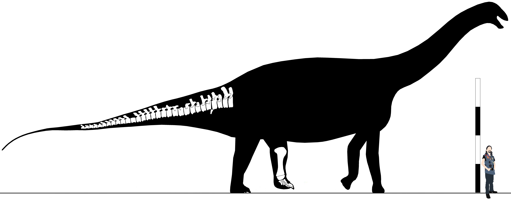

Clade Diplodocoidea Upchurch, 1995
Definition - enter
Diagnosis - enter
Comments - enter
"Thai Taxon C" Shimizu et al. 2016
Early to middle Cretaceous, early to middle Gallic epoch, Barremian to Aptian stages
Sao Khua Formation, Khorat Group
Phu Peng Hill (KS16), Kalasin Province, Thailand
#? - Material including cervical vertebrae (Shimizu, et al. 2016)
Diagnosis - CPRL bends anteriorly (1); high bifurcated cervical neural spines (2).
Comments - enter
Family Haplocanthosauridae Bonaparte, 1999
Definition - The most inclusive clade containing Haplocanthosaurus priscus but not Dicraeosaurus hansemanni, Diplodocus carnegii, or Rebbachisaurus
garasbae (nov. definition).
Diagnosis - enter
Comments - enter
Genus Haplocanthosaurus Hatcher, 1903b
=Haplocanthus Hatcher, 1903a (nomen rejectum)
Diagnosis - Presacral centra procamerate (1); simple lateral pneumatic fossae in cervicals & dorsals (2); dorsal neural arches with elongate CPOLs* (3); dorsal neural
arches tall relative to total vertebral height (3); dorsal diapophyses projecting dorsolaterally at 45 degrees & approaching the height of the neural spines* (4); large articular
chevron facets on caudals* (5); scapular acromion process narrow* (6); scapular blade with a dorsally & ventrally expanded distal end (7); ambiens process absent (8); proximal
MMM ratio 75% (9); tibia with flared distal end (10) (from Boisvert, et al. in prep).
Comments - This genus has often had the perception of being a rare Morrison taxon. However, recent research (Wedel, et al. 2021; Boisvert, et al. in press)
has shown to be false, & this taxon was much more common in both geographic & stratigraphic distribution.
Haplocanthosaurus has been recovered in several disparate positions since its initial description. Riggs (1904) considered it part of Brachiosauridae, & since then it has
been variably suggested to be either a basal macronarian (Upchurch, 1995; Wilson & Sereno, 1998; Upchurch, Barrett, & Dodson, 2004), a derived non-neosauropod (Harris, 2006), or
(the most well-supported position) a basal diplodocoid (Wilson, 2002; Whitlock, 2011; Mannion, et al. 2012; Tschopp, Mateus, & Benson, 2015).
Haplocanthosaurus priscus Hatcher, 1903a
=Haplocanthus priscus Hatcher, 1903a
=Haplocanthosaurus utterbacki Hatcher, 1903c
Late Jurassic, middle Malm epoch, Kimmeridgian stage
Brushy Basin Member, Zone 3, Morrison Formation
Marsh-Felch Quarry 1, Garden Park, Fremont County, Colorado, United States
CM 572 (Holotype) (Total length 12.27m) - Cv11 (259mm), Cv12 (247mm), D1 (224mm), D5 (185mm), D6 (173mm), D7 (165mm), D8 (185mm), D9 (164mm), D10 (170mm), D11 (150mm), D12
(146mm), D13 (125mm), right Dr1 (911mm), left Dr3 (1394mm), left Dr12 (710mm), sacrum (795mm), Cd1 (103mm), Cd2 (82mm), Cd3 (91mm), Cd4 (86mm), Cd5 (94mm), Cd6 (95mm), Cd7
(105mm), Cd8 (97mm), Cd9 (100mm), Cd10 (114mm), Cd11 (105mm), Cd12 (110mm), Cd13 (101mm), Cd14 (100mm), Cd15 (100mm), Cd16 (99mm), Cd17 (95mm), Cd18 (92mm), Cd19 (91mm), Ch8
(313mm), Ch13 (184mm), Dr2 (911mm), Dr4 (1394mm), Dr13 (710mm), ilium (827mm), pubes (693mm), ischia (792mm), left femur (1275mm) (Hatcher, 1903c)
CM 879 (Haplocanthosaurus utterbacki holotype) (Total length 10.51m) - Cv3 (143mm), Cv5 (210mm), Cv6, Cv7 (243mm), Cv8 (238mm), Cv9 (264mm), Cv10 (292mm), Cv11 (268mm),
Cv12, D1 (180mm), D2 (113mm), D3 (148mm), D4 (162mm), D5 (155mm), D6 (146mm), D7 (163mm), D8 (149mm), D9 (148mm), D10 (141mm), D11 (140mm), D12 (157mm), D13 (136mm), sacrum
(460mm), Cd1 (115mm), Cd2 (80mm), Cd3 (75mm), Cd4 (83mm), Cd5 (83mm), Cd6 (90mm), Cd7 (85mm), left scapula (800mm), right coracoid (350mm) (Hatcher, 1903c)
CM 2043 - Right tibia (646m), right fibula (627mm), right astragalus (Boisvert, et al. 2024)
CM 2046 - Left tibia, left fibula (Boisvert, et al. 2024)
CM 33995 - Left scapulocoracoid (1063mm, 440mm, 154mm, 410mm, 320mm, 360mm) (McIntosh, 1981)
USNM PAL 337828? - Partial axial elements (USNM online)
USNM PAL 337849? - Phalange (USNM online)
USNM PAL 337873? - Partial scapula (USNM online)
USNM PAL 337877? - Cervical (USNM online)
USNM PAL 337878? - Material (USNM online)
USNM PAL 337882? - Partial left scapula (USNM online)
USNM PAL 337905? - Right pubis (USNM online)
USNM PAL 337906? - Partial axial elements (USNM online)
USNM V 4264? - Partial left humerus (816mm), left radius (537mm), left ulna (552mm), Mc I (162mm), Mc II (174mm), Mc III (198mm), Mc IV (185mm), Mc V (158mm) (USNM online)
USNM V 4267? - Right humerus (805mm), right radius (525mm), right ulna (520mm) (USNM online)
Canyon City Quarry 1, Garden Park, Fremont County, Colorado, United States
USNM V 4275 (Total length 10.68m) - Ischia, femora (1089mm), left tibia (589mm), left fibula (610mm), left astragalus (McIntosh & Williams, 1988; Boisvert, et al. 2024)
Diagnosis - mid-dorsals mildly opisthocoelous (1); fused distal ischia* (2)
Comments - Hatcher (1903c) suggested Haplocanthosaurus “utterbacki” possessed 29 presacrals, with 15 cervicals & 14 dorsals, with cervicals 3, 4, & 8-15, & dorsals
2-14 preserved. Later, Huene (1929a) suggested based on comparing CM 572 to CM 879, that D1 of H. priscus was actually the penultimate cervical, & that D2 of H.
“utterbacki” was actually the last cervical, thus reducing the dorsal count to twelve. McIntosh & Williams (1988) however, believed Hatcher's interpretation was more likely
to be correct, as the remains of the ribs of the first two vertebrae of priscus are fused, as in cervicals, but the ribs of the third vertebra are free-floating, as in dorsals.
They also note that the parapophyses lie below the pleurocoel, as expected of a first dorsal. In addition, the pleurocoels on all preserved cervicals are divided, whereas in
Hatcher's D2 & all succeeding dorsals, the pleurocoel is undivided. Another interpretation by Vidal (2019) considers CM 572's D1 to be equivalent to CM 879's D2, & in fact there
are thirteen dorsals present in Haplocanthosaurus (the basal gravisaur condition). Given the above evidence laid out by McIntosh & Williams showing the thirteenth
presacral is likely a dorsal, & the fact no gravisaur possesses more than thirteen dorsals, I concur with Vidal's dorsal formula. In addition, I also accept the lower revised
cervical count of twelve, as Hatcher only added so many missing cervicals to the “utterbacki” sequence to comply with the cervical count of Diplodocus carnegii, &
no diplodocoid currently known possesses more than 25 presacrals.
Composite skeletal reconstruction of Haplocanthosaurus priscus. Scale bar equals 2m, scaled as CM 572.
Haplocanthosaurus delfsi McIntosh & Williams, 1988
Late Jurassic, middle Malm epoch, Kimmeridgian stage
Salt Wash Member, Zone 2, Morrison Formation
Delf's Quarry, Fremont County, Colorado, United States
CMNH 10380 (Holotype) (Total length 16.75m) - Atlas (65mm), axis (192mm), Cv3 (237mm), Cv4 (300mm), D5 (255mm*), D6 (245mm*), D7 (230mm), D8 (255mm*), D9 (248mm*), D10 (243mm*),
D11 (201mm), D12 (144mm), D13 (170mm), sacrum (1090mm), Cd1 (176mm), Cd2 (155mm), Cd3 (154mm), Cd4 (157mm), Cd5 (165mm), Cd6 (166mm), Cd7 (155mm), Cd8 (155mm), Cd9 (163mm), Cd10
(163mm), Cd11 (162mm), Cd12 (163mm), Cd13 (174mm), Cd14 (167mm), chevrons, sternal plate (755mm), left scapula (1290mm*), proximal left radius, proximal left ulna, ilia (1315mm),
left pubis (1100mm), left ischium (1000mm), left femur (1751mm) (McIntosh & Williams, 1988)
Diagnosis - Mid-dorsals strongly opisthocoelous (1); V-shaped, anterolaterally projecting laminae present on mid-dorsal neural spines* (1); posterior dorsal neural spines,
greater development of median laminae compared to H. priscus* (2); girdle bones & femur more robust than H. priscus (3), pubis heavier distally (4); distal end of
ischia broader, not rotated inward & unfused at midline contact* (5) (from Boisvert, et al. 2024b).
Comments - Notably larger than specimens attributed to H. priscus.
Skeletal reconstruction of Haplocanthosaurus delfsi. Scale bar equals 4m.
Haplocanthosaurus sp. nov. Foster & Wedel, 2014
Late Jurassic, middle Malm epoch, Kimmeridgian stage
Salt Wash Member, Zone 2, Morrison Formation
Gordon-Bramson-Brothers Quarry, Snowmass Creek, Pitkin County, Colorado, United States
MWC 8028 (Total length 10.52m) - Dorsals (130mm, 105mm, 100mm, 110mm), sacrum (60cm tall), Cd1 (82mm), Cd2 (60mm), Cd3 (84mm), Cd4 (90mm), Cd5 (95mm) (Foster & Wedel, 2014)
Diagnosis - Sacral neural spines tall & deeply reclined*, (1) with bulbous neural spine tops* (2); caudals very deeply biconcave* (3); neural canals greatly expanded
compared to other Haplocanthosaurus* (4).
Comments - Specimen is very distinct from other known Haplocanthosaurus, & is representative of a new species to be named in the future (Wedel, pers. comm.).
Skeletal reconstruction of Haplocanthosaurus sp. MWC 8028. Scale bar equals 2m.
Haplocanthosaurus "gigas" Boisvert, et al. 2024
Late Jurassic, Malm epoch, Kimmeridgian stage?
Lower Morrison Formation
Spindletop Dome Quarry 3, Little Snowy Mountains, Fergus County, Montana, United States
JRDI-5130 "Big Monty" (Total length 12.82m) - Partial skeleton including teeth, axis, Cv4, Cv5, D1, D5, D6, D7, D8, D9, D10, D12, dorsal ribs, partial sacrum, Cd1, Cd4, Cd5, Cd6,
Cd7, Cd19, partial scapula, right sternal, partial ilium, pubis, partial ischium, left femur (1334mm)
Diagnosis - enter
Comments - Despite claims by Nate Murphy, this specimen is not comparable in size to the largest sauropods, in fact both the three foot tall dorsal & four & a half foot
long femur suggest an individal barely larger than the Haplocanthosaurus priscus holotype.
Skeletal reconstruction of Haplocanthosaurus "gigas". Scale bar equals 2m.
Haplocanthosaurus sp. Erickson, 2014
Late Jurassic, middle Malm epoch, late Kimmeridgian stage
Brushy Basin Member, Zone 4, Morrison Formation
Poison Creek Quarry, Johnson County, Wyoming, United States
SMM P 90.37.10 (Total length 18.92m) - Thirty articulated caudals, chevrons, left tibia (1030mm), left fibula (770mm*), left astragalus, left calcaneum (95mm), Mt I, PUP I, Mt
II, PP II-1, PP II-2, PUP II, Mt III, PP III-1, PP III-2, PUP III, Mt IV, Mt V (Erickson, 2014)
Diagnosis - enter
Comments - The largest known haplocanthosaurid specimen.

Skeletal reconstruction of Haplocanthosaurus sp. SMM P 90.37.10. Scale bar equals 4m.
Haplocanthosaurus sp. Tschopp, et al. 2019b
Late Jurassic, middle Malm epoch, Kimmeridgian stage
Brushy Basin Member, Zone 3, Morrison Formation
Quarry B, Red Fork of the Powder River, Johnson County, Wyoming, United States
CM 312 - 22 caudals (Tschopp, et al. 2019b; Boisvert, et al., in press)
CM 36034 (Total length for RFPRB individual 10.76m) - Two caudals (115, 136mm) (Tschopp, et al. 2019b; Boisvert, et al., in press)
CM 36036 - Mid-caudal (135mmm) (Tschopp, et al. 2019b; Boisvert, et al., in press)
Diagnosis - enter
Comments - enter
Haplocanthosaurus sp. Wedel, online 2020a
Late Jurassic, middle Malm epoch, Kimmeridgian stage
Salt Wash Member, Zone 2, Morrison Formation
Tal Site, Brachiosaur Gulch, Utah, United States
FHPR #? - Material including partial dorsal, dorsal ribs (Wedel, online 2020a)
Diagnosis - enter
Comments - enter
Haplocanthosaurus sp. Boisvert, et al. 2024
Late Jurassic, middle Malm epoch, late Kimmeridgian stage
Brushy Basin Member, Zone 4, Morrison Formation
Dry Mesa Quarry, Mesa County, Colorado, United States
BYU 9194 - Dorsal (120mm*) (Boisvert, et al. 2024)
BYU 11506 - Dorsal (115mm) (Boisvert, et al. 2024)
BYU 12865 (Total length 14.26m) - Right tibia (775mm) (Boisvert, et al. 2024)
BYU 17530 - Dorsal (95mm*) (Boisvert, et al. 2024)
BYU 17531 - D2 (165mm), D3 (125mm), D4 (120mm) (Boisvert, et al. 2024)
BYU 17689 - Dorsal (135mm*) (Boisvert, et al. 2024)
Diagnosis - enter
Comments - The stratigraphically youngest known individual of Haplocanthosaurus.
Skeletal reconstruction of the BYU Haplocanthosaurus sp.. Scale bar equals 2m.
Haplocanthosaurus sp. Boisvert, et al., in press
Late Jurassic, middle Malm epoch, early Kimmeridgian stage
Salt Wash Member, Zone 2, Morrison Formation
Oil Creek Quarry, Fremont County, Colorado, United States
CMNH 10725 (Total length 11.28m) - Two fragmentary dorsals, right tibia, fragments (Boisvert, et al., in press)
Diagnosis - enter
Comments - Extremely low in the Morrison, just a few meters above the Tidwell-Salt Wash boundary.
"Como Bluff haplocanthosaurid" Boisvert, et al., in press
Late Jurassic, Malm epoch
Morrison Formation
Como Bluff, Carbon County, Wyoming, United States
NCSM 28359 - Radius, ulna, manual ungual, left femur, phalanx, metapodial, fragments (Boisvert, et al., in press)
Diagnosis - None, undescribed.
Comments - May belong to this genus, but poor quality of preserved elements & lack of overlap with definitive Haplocanthosaurus specimens precludes such a referral.
"Williams Slow Eagle haplocanthosaurid" Bilbey, Hall, & Hall, 2000
Late Jurassic, middle Malm epoch, Kimmeridgian stage
Brushy Basin Member, Zone 3, Morrison Formation
Williams Slow Eagle Quarry, Utah, United States
FHPR 1106 “Willy” (Total length 12.8m) - Seven cervicals, eleven dorsals, dorsal ribs, sacrum, 38 caudals, 20 chevrons, left scapulocoracoid (1220mm), sternal plates, humeri
(870, 850mm), radii (510, 500mm), right ulna (550mm), Mc I, MP I-1, MUP I, Mc II, MP II-1, Mc III, MP III-1, Mc IV, MP IV-1, Mc V, MP V-1, pelvis, femora (1120mm), tibiae (790mm),
fibulae (640mm), astragali, left calcaneum, Mt I, PP I-1, PUP I, Mt II, PP II-1, PP II-2, PUP II, Mt III, PP III-1, PP III-2, PUP III, Mt IV, PP IV-1, PP IV-2, PUP IV, Mt V
(Bilbey, Hall, & Hall, 2000; Upchurch, et al. in prep; Pers. Obs.)
Diagnosis - enter
Comments - Specimen FHPR 1106 (colloquially known as “Willy”) appears to possess two manual unguals per manus. If true (& not a misinterpretation of an element from
elsewhere) this would be the only eusauropod known to possess more than one per hand.
Clade Diplodocimorpha Calvo & Salgado, 1995
Definition - enter
Diagnosis - enter
Comments - enter
Family Rebbachisauridae Bonaparte, 1997
=Agustiniidae Bonaparte, 1999
Definition - enter
Diagnosis - femur with reduced fourth trochanter (1).
Comments - enter
Genus Algoasaurus Broom, 1904
Algoasaurus bauri Broom, 1904
Early Cretaceous, early to middle Neocomian epoch, Berriasian to Hauterivian stages
Kirkwood Formation
Cape Province, South Africa
AMNH FR 5631 (Holotype) - Ungual phalanx
#? (Holotype - lost?) - Cervical, scapula, femur (50cm*)
SAM-PK-K1500 (Holotype?) - Caudal (McPhee, et al. 2016a)
Diagnosis - enter
Comments - Broom (1904) reports that when initially found the holotype may have been nearly complete, but the workers who excavated the material did not recognize it as
being dinosaur bones, so they were destroyed.
Various authors in the early 21st century have suggested Algoasaurus to represent a rebbachisaurid (Canudo & Salgado, 2003; Ibiricu, et al. 2012 - though see McPhee,
et al. 2016a) due to characters such the absence of a hyposphene & a reduced fourth trochanter (the latter synapomorphic of Rebbachisauridae) (Tweet, online 2020; D'Angelo,
online 2020). McPhee, et al. report that the type material (minus the phalanx & caudal) are currently missing.
Genus Agustinia Bonaparte, 1999
=Agustia Bonaparte, 1998 (preoccupied name)
Agustinia ligabuei Bonaparte, 1998
=Agustia ligabuei Bonaparte, 1998
Middle Cretaceous, middle Gallic epoch, Aptian stage
Lohan Cura Formation
Cerro El León, Neuquén Province, Argentina
MCF-PVPH-110 (Holotype) (Total length 16.54m) - Dorsal neural spines, dorsal ribs (20mm*, 76mm*), cervical rib (46mm*), sacral neural spines, 13 caudals, Cd3 (90mm wide), Cd13
(45mm wide), ilium fragment (640mm*), tibia (840mm*), fibula (895mm), Mt I (155mm), Mt II (155mm), Mt III (210mm), Mt IV (205mm) (Bellardini, et al. 2022c)
Diagnosis - enter
Comments - Owing to the incredibly fragmentary nature of this specimen, the phylogeny of Agustinia has been hard to pin down. It was originally assigned to its own
family Agustiniidae, in part due to the supposedly bizarre armor (Bonaparte, 1999). This has not been widely supported & owing to its sharing of both diplodocoid &
somphospondylian characters it has bounced around a lot. Bonaparte (1998) noted similarities with diplodocoids, while later authors have placed it within Titanosauria (Upchurch,
Barrett, & Dodson, 2004; Curry Rogers, 2005), while Mannion, et al. (2013) only assigned it to Somphospondyli. D'Emic, Wilson, & Chatterjee (2009) on the other hand,
concluded no diagnostic characters were present that could allow assignment to either Diplodocoidea or Macronaria & considered it Neosauropoda incertae sedis. Most
recently however, Bellardini, et al. (2022c) listed several characters which supported a rebbachisaurid placement, & in a phylogenetic analysis recovered Agustinia
as sister to Zapalasaurus, in a position more derived than Histriasaurus but basal to Limaysaurinae & Rebbachisaurinae. Bellardini & Cerda (2017) also showed using
histological analysis that the supposed “dermal armor” was actually mostly composed of fragmentary ribs, though at least some of it was also part of the ilium.
Genus Amazonsaurus Carvalho, Avilla, & Salgado, 2003
Amazonsaurus maranhensis Carvalho, Avilla, & Salgado, 2003
Middle Cretaceous, middle Gallic epoch, Aptian to Albian stages
Itapecuru Formation
Maranhão, Brazil
MN 4555-V (Holotype) - Mid-caudal
MN 4556-V (Holotype) - Posterior caudal
MN 4558-V (Holotype) - Dorsal neural spine
MN 4559-V (Holotype) - Dorsal centrum
MN 4560-V (Holotype) - Mid-posterior caudal
MN 4562-V (Holotype) - Three ribs
MN 4564-V (Holotype) - Four chevrons
MN #? (Holotype) - Dorsal centrum, partial pubis
UFRJ-DG 58-R/1 (Holotype) - Ilium
UFRJ-DG 58-R/2 (Holotype) - Chevron
UFRJ-DG 58-R/3 (Holotype) - Chevron
UFRJ-DG 58-R/4 (Holotype) - Chevron
UFRJ-DG 58-R/5 (Holotype) - Chevron
UFRJ-DG 58-R/7 (Holotype) - Anterior caudal neural spine
UFRJ-DG 58-R/9 (Holotype) - Dorsal neural spine
UFRJ-DG 58-R/10 (Holotype) - Posterior caudal
Diagnosis - enter
Comments - enter
Genus Comahuesaurus Carballido, et al. 2012
Comahuesaurus windhauseni Carballido, et al. 2012
Middle Cretaceous, middle Gallic epoch, Aptian stage
Lohan Cura Formation
Neuquén Province, Argentina
Specimens
Diagnosis - enter
Comments - Salgado, et al. (2004) originally described this briefly as a new set of specimens of Limaysaurus, but Carballido, et al. (2012) later
showed this to belong to a more basal rebbachisaurid.
Genus Histriasaurus Dalla Vecchia, 1998
Histriasaurus boscarolli Dalla Vecchia, 1998
Early Cretaceous
Formation
Bale, Croatia
WN V-6 (Holotype)
Diagnosis - enter
Comments - enter
Genus Itapeuasaurus Lindoso, et al. 2019
Itapeuasaurus cajapioensis Lindoso, et al. 2019
Middle Cretaceous, middle Gallic epoch, Cenomanian stage
Alcântara Formation
São Luís Basin, Brazil
Specimens
Diagnosis - enter
Comments - Itapeuasaurus was recovered by Lindoso, et al.'s phylogenetic analysis as a nigersaurine close to Demandasaurus & Nigersaurus. Later
analyses recovered this taxon more basal, with Lerzo, et al. (2024)'s analysis finding it closest to their new taxon Sidersaura.
Genus Lavocatisaurus Canudo, et al. 2018
Lavocatisaurus agrioensis Canudo, et al. 2018
Middle Cretaceous, middle Gallic epoch, Aptian to Albian stages
Pichi Neuquén member, Rayoso Formation
Agrio del Medio site, Neuquén Province, Argentina
MOZ-Pv 1232 (Holotype) (Total length 11.22m) - Premaxillae, maxillae, jugal, squamosal, quadrates, dentaries, 40 teeth, hyoid, atlas, axis, Cv3-11, 28 caudals, cervical ribs,
Dr1, Dr2, humerus, radius fragment, left Mt I (100mm) (Canudo, et al. 2018)
MOZ-Pv 1233 - Cervical centrum (88mm) (Canudo, et al. 2018)
MOZ-Pv 1236 - Partial cervical neural arch (Canudo, et al. 2018)
MOZ-Pv 1237 - Partial cervical neural arch (90mm) (Canudo, et al. 2018)
MOZ-Pv 1238 - Fragmentary neural arch (Canudo, et al. 2018)
MOZ-Pv 1239 - Fragmentary neural arch (Canudo, et al. 2018)
MOZ-Pv 1240 - Dorsal centrum (68mm) (Canudo, et al. 2018)
MOZ-Pv 1241 - Rib fragments (Canudo, et al. 2018)
MOZ-Pv 1242 - Chevron (Canudo, et al. 2018)
MOZ-Pv 1243 - Right ulna (157mm) (Canudo, et al. 2018)
MOZ-Pv 1244 - Left tibia (261mm) (Canudo, et al. 2018)
MOZ-Pv 1245 - Left fibula (277mm) (Canudo, et al. 2018)
MOZ-Pv 1246 - Partial metatarsal (Canudo, et al. 2018)
MOZ-Pv 1247 - Indeterminate flat fragment (Canudo, et al. 2018)
MOZ-Pv 1248 - Posterior cervical centrum (53mm*) (Salgado, et al. 2012)
MOZ-Pv 1249 - Cervical neural arch (69mm) (Salgado, et al. 2012)
MOZ-Pv 1250 - Cervical centrum (90mm) (Canudo, et al. 2018)
MOZ-Pv 1251 - Dorsal neural arch (Salgado, et al. 2012)
MOZ-Pv 1252 - Anterior caudal centrum (28mm) (Salgado, et al. 2012)
MOZ-Pv 1253 - Anterior caudal centrum (21mm) (Salgado, et al. 2012)
MOZ-Pv 1254 - Anterior caudal centrum (26mm) (Salgado, et al. 2012)
MOZ-Pv 1255 - Left scapula (Salgado, et al. 2012)
MOZ-Pv 1256 - Left ulna (Salgado, et al. 2012)
MOZ-Pv 1257 - Right Mt I (39mm) (Salgado, et al. 2012)
MOZ-Pv 1258 - Mt V (Salgado, et al. 2012)
MOZ-Pv 1267 - Left radius (156mm) (Salgado, et al. 2012)
Diagnosis - Extremely well-developed preantorbital fenestra (1); marked laterodorsal fossa in the dentary (2); ventrally expanded squamosal (3); dentary with pronounced
ventral projection in the mesio-ventral corner (4); jugal long & contacting the squamosal (5), but without contacting foramina as seen in Nigersaurus (6); maxillary teeth
significantly larger than mandibular teeth* (7); middle caudal vertebrae with anteriorly projecting prezygapophyses (8).
Comments - This is an incredibly important taxon as it shows what a much more basal rebbachisaurid should look like (as previous restorations had to rely mainly on derived
taxa like Limaysaurus & Nigersaurus due to the incredibly incomplete nature of most basal rebbachisaurids). In particular, the skull is far different from that preserved
for these taxa & is far closer in appearance to other diplodocoid skulls.
Genus Maraapunisaurus Carpenter, 2018
=Amphicoelias fragillimus Cope, 1878
Maraapunisaurus fragillimus Cope, 1878
Late Jurassic, late Malm epoch, late Tithonian stage
Brushy Basin Member, Zone 6, Morrison Formation
Cope's Quarry III, Cope's Nipple, Fremont County, Colorado, United States
AMNH FR 5777 (Holotype; lost) (Total length 45.89m?) - D10 (1419mm* tall)
Diagnosis - enter
Comments - Carpenter (2018) shows that previous analyses which followed Cope's original assignment of M. fragillimus to Amphicoelias (Carpenter, 2006;
Woodruff & Fowler, 2015) are incorrect, & this is actually the earliest known representative of Rebbachisauridae. Cau (online 2012) & Armstrong (online 2014) were the first to
independently suggest this placement. Analysis of Cope's original figure by Iain Reid (personal communication) shows that, contrary to Woodruff & Fowler (2015), AMNH FR 5777 as
preserved was likely close to the size originally reported by Cope, as cross-referencing with the preserved femur of Amphicoelias “latus” (illustrated at the same size)
yields a total height for the element of 1419mm, & the measurements reported by Cope are all within 1cm of the sizes suggested by using this figure for the total height.
Using this figure, we can estimate the true total size of Maraapunisaurus. Carpenter (2018) suggests a total length of 30.3m by directly scaling up Limaysaurus, &
32m when also applying neck allometry (as per Parrish, 2006). This is problematic however, as the skeletal it is based on has severely oversized the dorsals of Limaysaurus,
as that taxon is known from a multi-individual bonebed & when following other rebbachisaurids is restored at a much more reasonable neural spine height. I used the measurements
estimated by I.J. Reid (see table #), & when scaled off of Lavocatisaurus & other basal rebbachisaurids & arrived at a total length of 45.89m assuming an allometric neck
increase.
Genus Sidersaura Lerzo, et al. 2024
Sidersaura marae Lerzo, et al. 2024
Middle Cretaceous, middle Gallic epoch, Cenomanian stage
Huincul Formation
Barda Atraveseda de las Campanas, Villa el Chocón, Neuquén Province, Argentina
MMCH-Pv 70 (Holotype) - Braincase, skull roof, mid-posterior dorsal neural spine, fragmentary mid-posterior dorsal neural arch, 14 caudals, five chevrons, fragmentary left
scapula, pubic peduncle, tibiae, fibulae, right calcaneum, Mt I, PP I-1, PP I-2, PP I-3, PUP I, Mt II, Mt III, PUP III, Mt IV, Mt V
MMCH-Pv 236 (Paratype) - Mid-posterior dorsal rib, three sacral neural arches, posteriormost sacral or anteriormost caudal, eight caudals, Mc IV, Mc V, fragmentary ilium, ischia,
pubes, femora, tibia, fibulae, Mt IV
MMCH-Pv 307 (Paratype) - Proximal left fibula
MMCH-Pv 309 (Paratype) - Dorsal centra
Diagnosis - enter
Comments - enter
Genus Xenoposeidon Taylor & Naish, 2007
Xenoposeidon proneneukos Taylor & Naish, 2007
Early Cretaceous, early to middle Neocomian epoch, Berriasian to Valanginian stages
Ashdown Beds Formation
Hastings, East Sussex, United Kingdom
NHMUK PV R2095 (Holotype) (Total length 12.97m) - Dorsal (190mm*)
Diagnosis - enter
Comments - Xenoposeidon was originally described as an indeterminate Neosauropod (Taylor & Naish, 2007), then an indeterminate titanosauriform/somphospondylian
(Mannion, et al. 2013). Taylor (2018) noted several similarities between Xenoposeidon & rebbachisaurids, & assigned it to this family.
Genus Zapalasaurus Salgado, Carvalho, & Garrido, 2006
Zapalasaurus bonapartei Salgado, Carvalho, & Garrido, 2006
Early Cretaceous, early Gallic epoch, Barremian stage
Piedra Parada Member, La Amarga Formation
Zapala, Neuquén Province, Argentina
MOZ-Pv 6127 (Holotype) (Total length 10.19m) - Anterior-mid cervical, sacral fragment, Cd3 (70mm), Cd4 (60mm*), Cd5 (130mm), Cd6 (110mm), Cd7 (110mm), Cd8 (150mm), Cd9 (130mm),
Cd10 (135mm), Cd11 (150mm), Cd12 (170mm), Cd13 (170mm*), Cd14 (180mm), Cd15 (220mm), Cd16 (190mm*), Cd17 (205mm), Cd18 (205mm), Cd19 (205mm), fragmentary ilium, left ischium,
left pubis, distal left femur, left tibia
Diagnosis - enter
Comments - enter
"Brachiosaurus" nougaredi Lapparent, 1960
Middle Cretaceous, middle Gallic epoch, Aptian to Albian stages
Continental Intercalaire Formation
Petroleum Well ZR.2, Taouratine Oil Field, Wargla, Algeria
#? (Total length 35.86m) - Sacrum (130cm long*, 80cm wide*) (lost?)
Diagnosis - Lack of pleurocoels in sacral centra (1); pelvis longer anteroposteriorly than wide laterally (2); sacral vertebrae over two times longer than wide* (3).
Comments - The sacrum, one of the largest sauropod sacra on record, was found roughly 10 kilometers east of an oil well known as ZR.2, from which the sacrum derived its
field number. Scattered across the several hundred meters of the Taouratine oil field lay the remains of the tibia, metatarsals, metacarpals, a carpal, & the distal ends of a
radius & ulna. Due to the “fragile nature” of the elements, the carpal, radius & ulna were not collected, as well as the tibia & metatarsals (Lapparent, Claracq, & Nougarède,
1958). The metacarpals & sacrum were collected & shipped to Paris, however. Unfortunately, Mannion, et al. (2013) were unable to locate any elements other than the third
metacarpal, which they considered to belong to an indeterminate titanosauriform. At any rate, given the huge expanses of space between the disassociated elements, it is not
possible to confidently refer any of these specimens to the same individual, or even species - & none of the other remains seem to suggest a sauropod anywhere near the size of
the sacrum.
As the name suggests, Lapparent believed this to be a massive new species of Brachiosaurus. While a placement within Brachiosaurus proper is thought to be highly
unlikely nowadays, its familial placement is less agreed upon. Many have simply assumed that Lapparent was correct in assigning this species to Brachiosauridae, though the
surprisingly narrow sacrum would seem to suggest otherwise. Molina-Pérez & Larramendi (2020) suggested “B.” nougaredi actually belonged to a diplodocine, similar to
Supersaurus. I was unable to replicate their estimated length of 29.5m. I suspect this is due to their statement on pg. 132 where they state that 130cm was misreported as
being for the first four sacrals rather than the entire estimated sacrum length, & that the actual preserved length is 105cm. I am unsure where this measurement comes from, as
the two papers cited in this section (Fraas, 1896; Huene, 1905) were both written over 50 years before the sacrum had even been discovered (Lapparent, Claracq, & Nougarède, 1958).
Based on the provenance & apparent age (the age of the Continental Intercalaire has been somewhat controversial, & I follow the middle Cretaceous interpretation in this work), I
chose to restore this as a large rebbachisaurid, similar to both Breviparopus taghbaloutensis & Maraapunisaurus fragillimus.
“Açu rebbachisaurid I” Gomes da Costa Pereira, et al. 2020
Middle Cretaceous, middle Gallic epoch, Albian stage
Açu Formation, Apodi Group
Potiguar Basin, Ceará State, Brazil
UFRJ-DG 535 R - Anterior-mid caudal
UFRJ-DG 700 R - Caudal
Diagnosis - enter
Comments - enter
“Açu rebbachisaurid II” Gomes da Costa Pereira, et al. 2020
Middle Cretaceous, middle Gallic epoch, Albian stage
Açu Formation, Apodi Group
Potiguar Basin, Ceará State, Brazil
UFRJ-DG 578 R - Caudal
UFRJ-DG 646 R - Caudal
UFRJ-DG 701 R - Caudal
Diagnosis - enter
Comments - enter
“Aguada Grande rebbachisaurid” Gallina & Apesteguía, 2005
Middle Cretaceous, middle Gallic epoch, Cenomanian stage
Huincul Formation
Aguada Grande, Neuquén Province, Argentina
MCF-PVPH-633
Diagnosis - enter
Comments - enter
"Cañadón del Cocodrilo rebbachisaurid" Lerzo, et al. 2024
Middle Cretaceous, middle Gallic epoch, early to middle Cenomanian stage
Candeleros Formation, Rio Limay Subgroup, Neuquén Group
Cañadón del Cocodrilo, Villa El Chocón, Neuquén Province, Argentina
MMCH-Pv 47 - Cd9 (157mm), Cd10 (155mm), Cd11 (158mm), Cd12 (164mm), Cd13 (175mm), Cd22 (169mm), Cd23 (178mm), Cd24 (172mm), Cd25 (172mm), Ch1, Ch2 (116mm), Ch3 (131mm), Ch4
(117mm), Ch5 (115mm), Ch6 (104mm), chevron (42mm) (Otero, et al. 2011)
Diagnosis - enter
Comments - enter
“Candeleros rebbachisaurid” b
Middle Cretaceous, middle Gallic epoch, Cenomanian stage
Upper Member, Candeleros Formation
Villa El Chocón, Neuquén Province, Argentina
MMCH-Pv-41
MMCH-Pv-71
Diagnosis - enter
Comments - enter
“La Amarga rebbachisaurid” Apesteguía, 2007
Early Cretaceous, early Gallic epoch, Barremian stage
Puesto Antigual Member, La Amarga Formation
La Amarga, Neuquén Province, Argentina
MACN-Pv N35
Diagnosis - enter
Comments - enter
“Tafilalt rebbachisaurid” Mannion & Barrett, 2013
Middle Cretaceous, middle Gallic epoch, Cenomanian stage
Kem Kem Beds
Tafilalt, Morocco
NHMUK PV R36636
Diagnosis - enter
Comments - enter
“Tataouine rebbachisaurid” Fanti, et al. 2014
Middle Cretaceous, middle Gallic epoch, Albian stage
Oum ed Diab Member, Aïn el Guettar Formation
Tataouine, Tunisia
MT 210
Diagnosis - enter
Comments - enter
Clade Khebbashia Fanti, et al. 2015
Definition - The least inclusive clade containing Limaysaurus tessonei, Nigersaurus taqueti, & Rebbachisaurus garasbae (from Fanti, et al. 2015).
Diagnosis - Mid-posterior dorsal neural arches with posterior CPAF (1); anterior caudals with ventral TPRL (2); anterior caudals with a lamina bisecting the PRCDF (3);
anterior caudals with triangular lateral processes on the neural spine (4) (Fanti, et al. 2015).
Comments - enter
Genus Katepensaurus Ibiricu, et al. 2013
Katepensaurus goicoecheai Ibiricu, et al. 2013
Middle to late Cretaceous, middle to late Gallic epoch, Cenomanian to Turonian stages
Bajo Barreal Formation
Chubut Province, Argentina
UNPSJB-Pv-1007 (Hololtype)
Diagnosis - enter
Comments - enter
Subfamily Limaysaurinae Whitlock, 2011a
Definition - The most inclusive clade containing Limaysaurus tessonei but not Rebbachisaurus garasbae (modified from Whitlock, 2011a).
Diagnosis - enter
Comments - Whitlock originally defined this clade using Nigersaurus taqueti as the external specifier, however more recent research has found Rebbachisaurus
to cluster closer to Nigersaurus. As a result the name Rebbachisaurinae takes priority, & following PhyloCode recommendations Rebbachisaurus is used as the external
specifier here.
Genus Cathartesaura Gallina & Apesteguía, 2005
Cathartesaura anaerobica Gallina & Apesteguía, 2005
Middle Cretaceous, middle Gallic epoch, Cenomanian stage
Huincul Formation
La Buitrera Locality, Neuquén Basin, Rio Negro Province, Argentina
Specimens
Diagnosis - enter
Comments - enter
Genus Limaysaurus Salgado, et al. 2004
Limaysaurus tessonei Calvo & Salgado, 1995
Middle Cretaceous, middle Gallic epoch, Cenomanian stage
Candeleros Formation
Villa El Chocón, Neuquén Province, Argentina
MUCPv-205 (Holotype)
MUCPv-206
Huincul Formation
Villa El Chocón, Neuquén Province, Argentina
MUCPv-153
Diagnosis - enter
Comments - enter
Genus Nopcsaspondylus Apesteguía, 2007
Nopcsaspondylus alarconensis Apesteguía, 2007
Middle Cretaceous, middle Gallic epoch, Cenomanian stage
Candeleros Formation
Neuquén Province, Argentina
Specimens
Diagnosis - enter
Comments - This dorsal was originally described by Nopcsa (1902), before it was subsequently lost at some point.
“El Chocón rebbachisaurid” Haluza, et al. 2012
Middle Cretaceous, middle Gallic epoch, Cenomanian stage
Huincul Formation
Las Campanas Creek, Villa El Chocón, Neuquén Province, Argentina
MMCh-Pv-49 - Cv7-13, D1-4, D6-12, ribs, right scapulocoracoid, right humerus
Diagnosis - enter
Comments - enter
Subfamily Rebbachisaurinae Bonaparte, 1995
=Nigersaurinae Whitlock, 2011a
Definition - The most inclusive clade including Rebbachisaurus garasbae but not Limaysaurus tessonei (from Fanti, et al. 2015).
Diagnosis - enter
Comments - Whitlock (2011a) named Nigersaurinae as the most inclusive clade containing Nigersaurus taqueti but not Limaysaurus tessonei. In their analysis,
Rebbachisaurus was recovered as more basal than either of these subfamilies. However, more recent analyses (e.g. Fanti, et al. 2015; Wilson & Allain, 2015) have found
Rebbachisaurus to be closer to Nigersaurus than to Limaysaurus. As Rebbachisaurinae has priority, Nigersaurinae is sunk here.
Genus Demandasaurus Fernández-Baldor, et al. 2010
Demandasaurus darwini Fernández-Baldor, et al. 2010
Early Cretaceous, early Gallic epoch, Barremian stage
Castrillo de la Reina Formation
Tenadas de los Vallejos II Quarry, Burgos Province, Spain
MDS-RVII,2 (Holotype) - Mid-caudal (155mm) (Pereda-Superbiola, et al. 2003)
MDS-RVII,3 (Holotype) - Mid-caudal (150mm) (Fernández-Baldor, et al. 2010)
MDS-RVII,4 (Holotype) - Mid-posterior caudal (165mm) (Fernández-Baldor, et al. 2010)
MDS-RVII,9 (Holotype) - Mid-caudal (Fernández-Baldor, et al. 2010)
MDS-RVII,10 (Holotype) - Mid-posterior caudal (165mm) (Fernández-Baldor, et al. 2010)
MDS-RVII,11 (Holotype) - Mid-caudal (130mm) (Pereda-Superbiola, et al. 2003)
MDS-RVII,12 (Holotype) - Mid-posterior caudal (Fernández-Baldor, et al. 2010)
MDS-RVII,15 (Holotype) - Anterior caudal (98mm) (Fernández-Baldor, et al. 2010)
MDS-RVII,16 (Holotype) - Left femur (1080mm) (Pereda-Superbiola, et al. 2003)
MDS-RVII,18 (Holotype) - Left ischium (790mm) (Pereda-Superbiola, et al. 2003)
MDS-RVII,19 (Holotype) - Right ischium (805mm) (Pereda-Superbiola, et al. 2003)
MDS-RVII,23 (Holotype) - Chevron (131mm) (Fernández-Baldor, et al. 2010)
MDS-RVII,99 (Holotype) - Chevron (135mm*) (Fernández-Baldor, et al. 2010)
MDS-RVII,101 (Holotype) - Mid-posterior caudal (Fernández-Baldor, et al. 2010)
MDS-RVII,216 (Holotype) - Mid-posterior caudal (185mm) (Fernández-Baldor, et al. 2010)
MDS-RVII,217 (Holotype) - Mid-posterior caudal (175mm) (Fernández-Baldor, et al. 2010)
MDS-RVII,218 (Holotype) - Mid-posterior caudal (175mm) (Fernández-Baldor, et al. 2010)
MDS-RVII,231 (Holotype) - Chevron (205mm) (Fernández-Baldor, et al. 2010)
MDS-RVII,232 (Holotype) - Chevron (150mm) (Fernández-Baldor, et al. 2010)
MDS-RVII,242 (Holotype) - Posterior dorsal (Fernández-Baldor, et al. 2010)
MDS-RVII,275 (Holotype) - Right premaxilla (Fernández-Baldor, et al. 2010)
MDS-RVII,332 (Holotype) - Left premaxilla (Fernández-Baldor, et al. 2010)
MDS-RVII,340 (Holotype) - Tooth (Fernández-Baldor, et al. 2010)
MDS-RVII,364 (Holotype) - Dorsal rib (Fernández-Baldor, et al. 2010)
MDS-RVII,379 (Holotype) - Cervical rib (Fernández-Baldor, et al. 2010)
MDS-RVII,436 (Holotype) - Tooth (Fernández-Baldor, et al. 2010)
MDS-RVII,437 (Holotype) - Tooth (Fernández-Baldor, et al. 2010)
MDS-RVII,438 (Holotype) - Tooth (Fernández-Baldor, et al. 2010)
MDS-RVII,440 (Holotype) - Tooth (Fernández-Baldor, et al. 2010)
MDS-RVII,441 (Holotype) - Tooth (Fernández-Baldor, et al. 2010)
MDS-RVII,443 (Holotype) - Partial left dentary (Fernández-Baldor, et al. 2010)
MDS-RVII,470 (Holotype) - Anterior caudal (Fernández-Baldor, et al. 2010)
MDS-RVII,562 (Holotype) - Cervical rib (Fernández-Baldor, et al. 2010)
MDS-RVII,589 (Holotype) - Anterior-mid cervical (270mm) (Fernández-Baldor, et al. 2010)
MDS-RVII,590 (Holotype) - Chevron (315mm) (Fernández-Baldor, et al. 2010)
MDS-RVII,591 (Holotype) - Chevron (355mm) (Fernández-Baldor, et al. 2010)
MDS-RVII,594 (Holotype) - Chevron (130mm) (Fernández-Baldor, et al. 2010)
MDS-RVII,602 (Holotype) - Anterior caudal (150mm) (Fernández-Baldor, et al. 2010)
MDS-RVII,605 (Holotype) - Cd1 (145mm) (Fernández-Baldor, et al. 2010)
MDS-RVII,606 (Holotype) - Axis (100mm) (Fernández-Baldor, et al. 2010)
MDS-RVII,609 (Holotype) - Cd2 (92mm) (Fernández-Baldor, et al. 2010)
MDS-RVII,610 (Holotype) - Anterior caudal (Fernández-Baldor, et al. 2010)
MDS-RVII,629 (Holotype) - Anterior caudal (Fernández-Baldor, et al. 2010)
MDS-RVII,796 (Holotype) - Chevron (340mm) (Fernández-Baldor, et al. 2010)
MDS-RVII,797 (Holotype) - Chevron (370mm) (Fernández-Baldor, et al. 2010)
MDS-RVII,798 (Holotype) - Posterior dorsal (150mm) (Fernández-Baldor, et al. 2010)
MDS-RVII,805 (Holotype) - Anterior caudal (100mm) (Fernández-Baldor, et al. 2010)
MDS-RVII,806 (Holotype) - Posterior cervical (Fernández-Baldor, et al. 2010)
MDS-RVII,811 (Holotype) - Cervical rib (Fernández-Baldor, et al. 2010)
Diagnosis - enter
Comments - enter
Genus Nigersaurus Sereno, et al. 1999
Nigersaurus taqueti Sereno, et al. 1999
Middle Cretaceous, middle Gallic epoch, Aptian to Albian stages
Elrhaz Formation
Niveau des Innocents, Gadoufaoua, Ténéré Desert, Niger
MNBH GAD512 (Holotype) - Partial Skull, cervicals, left scapula, forelimbs, hindlimbs (Sereno, et al. 1999)
MNBH GAD513 - (Sereno, et al. 2007)
MNBH GAD515 - (Sereno, et al. 2007)
MNBH GAD516 - (Sereno, et al. 2007)
MNBH GAD517 - Partial skeletal including several anterior caudals (Sereno, et al. 2007)
MNBH GAD518 - (Sereno, et al. 2007)
MNHN.F.GDF75 - Right femur (406mm) (Lefebvre, Allain, & Houssaye, 2023)
MNHN.F.GDF242 - Right humerus (461mm), right radius (328mm), right ulna (366mm) (Lefebvre, Allain, & Houssaye, 2023)
MNHN.F.GDF243 - Left humerus (483mm) (Lefebvre, Allain, & Houssaye, 2023)
MNHN.F.GDF244 - Partial left tibia (518mm*) (Lefebvre, Allain, & Houssaye, 2023)
MNHN.F.GDF327 - Partial right femur (758mm*) (Lefebvre, Allain, & Houssaye, 2023)
MNHN.F.GDF2045 - Partial right humerus (Lefebvre, Allain, & Houssaye, 2023)
MNHN.F.GDF2055 - Partial right fibula (511mm*) (Lefebvre, Allain, & Houssaye, 2023)
MNHN.F.GDF2057 - Partial left radius (Lefebvre, Allain, & Houssaye, 2023)
MNHN.F.GDF2094 - Right tibia (268mm) (Lefebvre, Allain, & Houssaye, 2023)
MNHN.F.GDF2095 - Right fibula (279mm) (Lefebvre, Allain, & Houssaye, 2023)
MNHN.F.GDF2097 Left humerus (267mm) (Lefebvre, Allain, & Houssaye, 2023)
Diagnosis - enter
Comments - Taquet (1976) originally described Nigersaurus as a dicraeosaurid, before Sereno, et al. (1999) briefly redescribed it & named it. Sereno,
et al. (2007) later described some of the unique characteristics of this taxon, including the extremely bizarre skull shape, orientation, & certain traits such as a poorly
developed olfactory region of the brain (implying a poor sense of smell), & the adductor muscle attaching to the quadrate instead of the supratemporal fenestra, suggesting
Nigersaurus had among the weakest sauropod bite forces.
Skull reconstruction of Nigersaurus taqueti. Scale bar equals 25cm, scaled as MNBH GAD512.
Genus Rayososaurus Bonaparte, 1996
Rayososaurus agrioensis Bonaparte, 1996
Middle Cretaceous, middle Gallic epoch, Aptian to Albian stages
Lohan Cura Formation
Neuquén Province, Argentina
MACN-N 41 (Holotype) - Scapula, femur, fibula
#? (Paratype) - Partial dorsal, four partial caudals
Diagnosis - enter
Comments - enter
Genus Rebbachisaurus Lavocat, 1954
Rebbachisaurus garasbae Lavocat, 1954
Middle Cretaceous, middle Gallic epoch, Cenomanian stage
Gara Sbaa Formation
Gara Sbaa, Morocco
Specimens
Diagnosis - enter
Comments - enter
Genus Tataouinea Fanti, et al. 2013
Tataouinea hannibalis Fanti, et al. 2013
Middle Cretaceous, middle Gallic epoch, Albian stage
Oum ed Diab Member, Aïn el Guettar Formation
Jebel El Mra, Tataouine, Tunisia
ONM DT 1-48 (Holotype) - Partial sacrum, Cd1, Cd2, Cd3, Cd4, Cd5, Cd6 (140mm), Cd7 (130mm), Cd8 (130mm), Cd9 (190mm), Cd10 (160mm), Cd11 (230mm), Cd12 (230mm), Cd13 (240mm), Cd14
(210mm), Cd15 (240mm), Cd16 (250mm), Cd17 (220mm), partial ilia, proximal ischia (Fanti, et al. 2015)
Diagnosis - enter
Comments - enter
“El Orejano rebbachisaurid” Bellardini, et al. 2022b
Middle Cretaceous, middle Gallic epoch, Cenomanian stage
Huincul Formation
El Orejano, Neuquén Province, Argentina
MAU-Pv-EO-633 - Anterior dorsal
MAU-Pv-EO-634 - Dorsal
MAU-Pv-EO-666 - Anterior caudal
Diagnosis - enter
Comments - enter
“Wealden rebbachisaurid” Upchurch, et al. 2011
Early Cretaceous, early Gallic epoch, Barremian stage
Wealden Formation
Brighstone Bay, Isle of Wight, England, United Kingdom
IWCMS.2001.201 - Tooth (Naish & Martill, 2001)
IWCMS.2001.202 - Tooth (Naish & Martill, 2001)
IWCMS.2001.203 - Tooth (Naish & Martill, 2001)
MIWG 5384 - Partial anterior caudal (Upchurch, et al. 2011)
MIWG 6544 - Partial scapula (Mannion, 2009)
Diagnosis - enter
Comments - enter
Clade Flagellicaudata Harris & Dodson, 2004
Definition - enter
Diagnosis - enter
Comments - enter
Family Dicraeosauridae Janensch, 1929a
Definition - enter
Diagnosis - enter
Comments - enter
Genus Amargasaurus Salgado & Bonaparte, 1991
Amargasaurus cazaui Salgado & Bonaparte, 1991
="Amargasaurus groeberi" Bonaparte, 1984 (nomen nudum)
="Amargasaurus cazaui" Bonaparte, 1990 (nomen nudum)
Early Cretaceous, early Gallic epoch, Barremian stage
Puesto Antigual Member, La Amarga Formation
La Amarga (Main Site), Neuquén Province, Argentina
MACN-N 15 (Holotype) (Total length 13.34m) - Partial skull, atlas, axis, Cv3, Cv4, Cv5, Cv6, Cv7, Cv8, Cv9, Cv10, Cv11, Cv12, D1, D2, D3, D4, D5, D6, D7, D8, D9, D10, D11, D12,
cervical ribs, dorsal ribs, sacrum, Cd3? (113mm), Cd6? (100mm), Cd10? (100mm), Cd15? (105mm), Cd31? (110mm), chevrons, right scapulocoracoid (1150mm), left humerus (700mm), left
radius (440mm), left ulna (470mm), left ilium, left femur (1040mm), left tibia (640mm), left fibula (640mm), left astragalus, Mt I, Mt IV (Windholz, 2020)
Diagnosis - enter
Comments - By far the most interesting aspect of Amargasaurus is the extremely heightened cervical neural spines. These have been the subject of much debate as to
their covering, with much of the debate over the years generally having fallen into two camps, one advocating for paired fleshy spines (a doubled-up version of Spinosaurus
or similar sail-backed taxa), while the other argues for a mostly exposed set of spines covered in a keratin sheath. I have personally always been a fan of the latter restoration.
However, a histological analysis conducted by Cerda, et al. (2022), found that there was a complete lack of any of the specialized features found in elements typically
sheathed in keratin, & instead argued that the neural spines of Amargasaurus were covered in flesh, & their reconstruction showed the sail. However, given the bifid neural
spines of Amargasaurus curve inward towards each other, it seems plausible that the spines may simply be covered by full flesh like other sauropods, giving this taxon a
hump neck.
Skeletal reconstruction of Amargasaurus cazaui. Scale bar equals 2m.
Genus Amargatitanis Apesteguía, 2007
Amargatitanis macni Apesteguía, 2007
Early Cretaceous, early Gallic epoch, Barremian stage
Puesto Antigual Member, La Amarga Formation
La Amarga (Main Site), Neuquén Province, Argentina
MACN-Pv N53 (Holotype)
Diagnosis - enter
Comments - enter
Genus Bajadasaurus Gallina, et al. 2019
Bajadasaurus pronuspinax Gallina, et al. 2019
Early Cretaceous, early Neocomian epoch, Berriasian to Valanginian stages
Bajada Colorado Formation
Bajada Colorado Locality, Neuquén Province, Argentina
MMCh-Pv 75 (Holotype) (Total length 10.31m) - Maxilla (132mm), prefrontals (57, 53mm), frontals (79, 87mm), postorbitals (60, 64mm), quadratojugal (60mm*), lacrimal (30mm),
quadrate (53mm), squamosals (63, 53mm*), parietals (33, 31mm), pterygoids (153, 88*mm), dentaries (144, 113*mm), surangular (208mm), angular (205mm), proatlas (32mm), atlas
(83mm), axis (93mm), Cv6 (126mm) (Gallina, et al. 2019; Garderes, et al. 2023)
Diagnosis - enter
Comments - The anatomy of the splenial, which has not been found in other dicraeosaurids, shows similarities to nemegtosaurids, which suggests that the latter group might
have evolved as the ecological replacement for dicraeosaurids after they went extinct.
Cerda, et al. (2022) found that the extremely heightened neural spines of Amargasaurus were unlikely to have been covered in a keratinous sheath as has been
traditionally restored. However, they could not confirm whether or not the same would have been true of Bajadasaurus, as unlike A. cazaui the poorly preserved
neural spine of B. pronuspinax precludes determining the covering based on bone texture (Gallina, et al. 2019). I have chosen to restore Bajadasaurus here
following the same guidelines for Amargasaurus (& the much more incompletely known Amargatitanis & Pilmatueia are also restored to this standard), though it is also
possible that all four taxa had completely divergent flesh coverings in life.
Skeletal reconstruction of Bajadasaurus pronuspinax. Scale bar equals 2m.
Genus Brachytrachelopan Rauhut, et al. 2005
Brachytrachelopan mesai Rauhut, et al. 2005
Late Jurassic, late Malm epoch, Tithonian stage
Cañadón Calcáreo Formation
Cerro Condor, Patagonia, Argentina
MPEF-Pv 1716 (Holotype) - Cv6, Cv7, Cv8, Cv9, Cv10, Cv11, Cv12, Cv13, D1, D2, D3, D4, D5, D6, D7, D8, D9, D10, D11, D12, partial sacrum, partial right ilium, distal left femur
(Windholz, 2020)
Diagnosis - enter
Comments - enter
Genus Dicraeosaurus Janensch, 1914
="Issasaurus" Maier, 2003 (nomen nudum)
="Mtotosaurus" Maier, 2003 (nomen nudum)
="Nyorosaurus" Maier, 2003 (nomen nudum)
="Selimanosaurus" Maier, 2003 (nomen nudum)
Dicraeosaurus hansemanni Janensch, 1914
Late Jurassic, middle Malm epoch, Kimmeridgian stage
Middle Saurian Marl, Tendaguru Formation
Fund m, Mtwara, District of Lindi, Tanzania
MB.R.4886 “HMN Skeleton m” “Issasaurus” (Holotype) (Total length 14.51m) - Partial skull, axis (173mm), Cv3 (195mm), Cv4 (243mm), Cv5 (255mm), Cv6 (285mm), Cv7 (283mm), Cv8
(285mm), Cv9 (274mm*), Cv10 (264mm), Cv11 (219mm), Cv12 (193mm), Cv13 (183mm), D1 (174mm), D2 (183mm), D3 (182mm), D4 (184mm), D5 (184mm), D6 (198mm), D7 (186mm), D8 (184mm), D9
(173mm), D10 (184mm), D11 (163mm), D12, sacrum (730mm), Cd1 (134mm), Cd2 (115mm), Cd3 (133mm), Cd4 (126mm), Cd5 (124mm), Cd6 (131mm), Cd7 (123mm), Cd8 (124mm), Cd9 (124mm), Cd10
(117mm), Cd11 (119mm), Cd12 (119mm), Cd13 (125mm), Cd14 (130mm), Cd15 (129mm), Cd16 (133mm), Cd17 (140mm), Cd18 (147mm), Cd19 (152mm), Cd22 (167mm), Cd23 (154mm), Cd25 (155mm)
(Janensch, 1929a; Janensch, 1935; Janensch, 1961a)
Trench dd, Tendaguru Hill, Tendaguru Plateau, District of Lindi, Tanzania
HMN dd 11 - Anterior caudal
HMN dd 79 - Cd30 (73mm*)
HMN dd 80 - Cd23
HMN dd 111 - Cd27 (151mm)
HMN dd 114 - Cd24
HMN dd 511 - Atlas intercentrum (48mm) (Janensch, 1929a)
HMN dd 512 - Partial atlantal neural arch (Janensch, 1929a)
HMN dd 514 - Left proatlas (Janensch, 1929a)
Diagnosis - enter
Comments - enter
Dicraeosaurus sattleri Janensch, 1914
=Amargasaurus sattleri Salgado, 1999
Late Jurassic, late Malm epoch, Tithonian stage
Upper Saurian Marl, Tendaguru Formation
Locality Data
Specimens
Diagnosis - enter
Comments - enter
Dicraeosaurus sp. Raath & McIntosh, 1987
Late Jurassic, middle to late Malm epoch, Kimmeridgian to Tithonian stages
Kadzi Formation
Kadzi Fossil Locality, Zimbabwe
QG 58 - Mid-caudal (Raath & McIntosh, 1987)
QG 69 - Right femur (1320mm*) (Raath & McIntosh, 1987)
Diagnosis - enter
Comments - enter
Dicraeosaurus sp. McPhee, et al. 2016a
Early Cretaceous, early to middle Neocomian epoch, Berriasian to Hauterivian stages
Kirkwood Formation
Kirkwood Cliffs Lookout, South Africa
AM 4755 - Partial mid-dorsal neural arch (McPhee, et al. 2016a)
Diagnosis - enter
Comments - McPhee, et al. note that this vertebra is nearly identical to D6-7 of Dicraeosaurus hansemanni.
Genus Dyslocosaurus McIntosh, Coombs, & Russell, 1992
Dyslocosaurus polyonychius McIntosh, Coombs, & Russell, 1992
Late Jurassic?
Morrison Formation?
Lance Creek, Lance County, Wyoming, United States
AC 663 (Holotype) - Distal left radius, distal left ulna, proximal left femur, proximal left tibia, left astragalus, left Mt I (123mm), PP I-1, PUP I, Mt II (140mm), PUP II, Mt
III (171mm), proximal PUP III, proximal Mt IV, PP IV-1, PUP IV, PUP V (McIntosh, Coombs, & Russell, 1992; Tschopp, Mateus, & Benson, 2015)
Diagnosis - enter
Comments - The original provenance data for this specimen has been lost (or was possibly not recorded at all), so the horizon it derives from is unclear. The material was
collected from Lance Creek, an area where almost exclusively Maastrichtian fossils are found, however both the preservation (particularly the presence of weak radiation) & the
taxonomic characters of the material would suggest this taxon is in fact Morrison in age.
One of the pedal phalanges originally ascribed to Dyslocosaurus is different in preservation from the remaining material, & was excluded from this species by Tschopp,
Mateus, & Benson (2015). A redescription of this material is underway (Tschopp & Nair, in prep).
Genus Lingwulong Xing, et al. 2018
Lingwulong shenqi Xing, et al. 2018
Middle Jurassic, middle to late Dogger epoch, Bathonian to Callovian stages
Zhiluo Formation
Lingwu Geopark, Ningxia Hui Autonomous Region, China
LM V001a (Holotype)
IVPP V23704
LGP V001b
LGP V002
LGP V003
LGP V004
LGP V005
LGP V006
Diagnosis - enter
Comments - Originally believed to be from the much older Yanan formation (Aalenian-Bajocian in age).
Genus Pilmatueia Coria, et al. 2018
Pilmatueia faundezi Coria, et al. 2018
Early Cretaceous, middle Neocomian epoch, Valanginian stage
Mulichinco Formation
Pilmatué, Neuquén Province, Argentina
MLL-Pv-005 (Holotype) - Posterior dorsal
MLL-Pv-002 (Paratype) - Posterior cervical
MLL-Pv-004 - Mid-cervical
MLL-Pv-009 - Right femur
MLL-Pv-010 - Three teeth, Cv4, Cv5, Cv6, seven mid-posterior cervicals, distal caudal, scapulae (Windholz, 2020)
MLL-Pv-012 - Dorsals
MLL-Pv-014 - Anterior dorsal
MLL-Pv-015 - Mid-caudal
MLL-Pv-016 - Mid-caudal
MLL-Pv-017 - Left scapulocoracoid
Diagnosis - enter
Comments - enter
Genus Smitanosaurus Whitlock & Wilson Mantilla, 2020
Smitanosaurus agilis Marsh, 1889b
=Morosaurus agilis Marsh, 1889b
=Camarasaurus agilis Kuhn, 1939
Late Jurassic, middle Malm epoch, Kimmeridgian stage
Brushy Basin Member, Zone 3, Morrison Formation
Marsh-Felch Quarry 1, Garden Park, Fremont County, Colorado, United States
USNM 5384 (Holotype) - Braincase, skull roof, proatlases, atlas (16mm), axis (70mm), Cv3 (102mm) (Whitlock & Wilson Mantilla, 2020)
Diagnosis - enter
Comments - enter
Genus Suuwassea Harris & Dodson, 2004
Suuwassea emilieae Harris & Dodson, 2004
Late Jurassic, middle to late Malm epoch, Kimmeridgian to Tithonian stages
Morrison Formation
Carbon County, Montana, United States
ANS 12122 (Holotype)
Diagnosis - enter
Comments - enter
Genus Tharosaurus Bajpai, et al. 2023
Tharosaurus indicus Bajpai, et al. 2023
Middle Jurassic, middle Dogger epoch, early to middle Bathonian stage
Fort Member, Jaisalmer Formation
Jethwai Village, Jaisalmer District, Rajasthan State, India
RWR-241 (Holotype) - Two partial mid-posterior cervicals, partial anterior dorsal neural arch, mid-posterior dorsal neural spines, anterior dorsal rib, partial anterior-mid
caudals
Diagnosis - enter
Comments - enter
“Dinosaur National Monument dicraeosaurid” Whitlock, Garderes, & Gallina, 2022
Late Jurassic, late Malm epoch, Tithonian stage
Brushy Basin Member, Zone 5, Morrison Formation
Carnegie Quarry, Dinosaur National Monument, Uintah County, Utah, United States
CM 26552 - Partial skull, braincase (Berman & McIntosh, 1978)
Diagnosis - The presence of a “tooth” in the parietal-opisthotic suture* (1); Differs from Suuwassea emilieae in the presence of a single foramen for passage of the
abducens (VI) nerve (2); a narrow, midline ventral expansion of the foramen for the optic nerve (3). Differs from Kaatedocus siberi based upon the presence of a frontoparietal
foramen (4); the contribution of the frontal to the supratemporal fenestra in CM 26552 (5). Differs from Smitanosaurus agilis based upon the presence of a broad supraoccipital
crest (6). (Modified from Whitlock, Garderes, & Gallina, 2022).
Comments - CM 26552 was originally described by Berman & McIntosh (1978) as a specimen of Diplodocus & used to help justify assigning CM 11162 to Brontosaurus
louisae.
Whitlock, Garderes, & Gallina's third character used to distinguish this taxon from Suuwassea, “greater size at maturity”, is not a valid character for diagnosing a species
as sauropods were incredibly varied in sizes even within the same subfamilies, & an overall lack of specimens to compare (there is only one specimen each of Suuwassea &
the DNM dicraeosaurid for instance), it is impossible to tell anything about the average size of either species' given populations.
"Gigantosaurus" sp. nov.
Late Jurassic, middle Malm epoch, early Kimmeridgian stage
Lower Member, Kimmeridge Clay Formation
Ely, Roswell Pits, Cambridgeshire, England, United Kingdom
NHMUK PV R1494 (=SMES J 29483) - Right proximal ribia (363mm*)
Littleport, Cambridgeshire, England, United Kingdom
SMES J 29479 - Pedal ungual
Diagnosis - Rounded cnemial crest (1), with a strongly distinct and squared off fibular tuberculum (2); a distinct fibular tuberculum extending nearly the entire length of
the cnemial crest* (3).
Comments - The tibia NHMUK PV R1494 was originally included in the syntype series of Gigantosaurus megalonyx (Seeley 1869), but this element is distinctly unrelated
to the type caudal. Seeley (1869), originally proposed NHMUK PV R1494 to represent the distal portion of a tibia, but the obvious presence of a cnemial crest marks this as the
proximal portion. The most distinctive feature of this element is the cnemial crest, which has a prominent fibular tuberculum that extends nearly the entire length of the crest
while distinct, unlike the condition in its probable relative Suuwassea, where the fibular tuberculum fades out about halfway of the height of the cnemial crest. The
cnemial crest is rounded, which is a feature that separates Suuwassea from NHMUK PV R1494 although the rest of the bone is fairly similar.
The pedal ungual (SMES J 29479) was also described by Seeley (1869) in the syntype of Gigantosaurus megalonyx. The bone is lacking most of the lateral surface, as it appears
that the outer layer of bone broke off, as it was not eroded. It was found in the same deposit as the tibia, and although both lack overlapping information, the similar
phylogenetic position within Dicraeosauridae makes it highly likely that both are from the same taxon. Both the tibia and pedal ungual here placed in this new taxon were
discussed by Lydekker (1888), who synonymized both with Ornithopsis humerocristatus (now Duriatitan), but no overlapping features, and a highly different
phylogenetic position separate these taxa.
The partial “distal” tibia referred to Gigantosaurus by Seeley (1869), shows similarities to two unnamed specimens of basal diplodocines (WYDICE-FS 001A and SMA 0087) as
well as Suuwassea. The two undescribed specimens also share the presence of a rounded cnemial crest, which differentiates NHMUK PV R1494 from Suuwassea. The pedal
ungual of SMA 0087 (PUP I-2) is much slimmer & more elongate compared to that of NHMUK PV R1494. PUP I-2 of SMA 0087 also lacks the sharp downcurve present in SMES J 29479
(Tschopp, 2013). SMES J 29479 also lacks the ventral shelf present on the ungual of SMA 0087 (Tschopp, Mateus, & Benson, 2015).
"Park County dicraeosaurid" Wilson & Smith, 1996
Late Jurassic, Malm epoch
Morrison Formation
Park County, Montana, United States
MOR 592 - Partial skull, twelve presacrals, seven caudals, pelvis, femur
Diagnosis - enter
Comments - MOR 592 was originally identified in Wilson & Smith (1996) as a new specimen of Amphicoelias altus, based on the extremely slender femur with subcircular
cross-section, & reduced pleurocoel openings in the posterior dorsals. Later, Whitlock (2011a) considered it to be representative of a dicraeosaurid.
"Peski dicraeosaurid" Averianov & Zverkov, 2020
Middle Jurassic, late Dogger epoch, late Callovian stage
Podosinki Formation
Peski Quarry, Moscow Region, Russia
MCEBC 1100300/215 - Anterior caudal (110mm)
MCEBC 1100300/216 - Anterior caudal (105mm)
Diagnosis - enter
Comments - enter
Family Diplodocidae Marsh, 1884a
=Amphicoeliidae Cope, 1877 (nomen oblitum)
Definition - enter
Diagnosis - enter
Comments - enter
"Bombarral diplodocid" Antunes & Mateus, 2003
Late Jurassic, middle Malm epoch, Kimmeridgian stage
Lourinhã Formation
Bombarral Unit, Moita dos Ferreiros, Portugal
ML 418 - Cv6 (611mm), D5 (837mm tall)
Diagnosis - enter
Comments - This specimen has been referred to Dinheirosaurus (Antunes & Mateus, 2003), Apatosaurus (Mateus, 2006), or an new taxon (Mannion, et
al. 2012; Tschopp, Mateus, & Benson, 2015) in the past. Most recently, Tschopp, Giovanardi, & Maidment (2016) recovered ML 418 as a diplodocid more advanced than
Amphicoelias altus but basal to the Apatosaurinae-Diplodocinae split.
“Evil Tree diplodocid” Cozart, Scofield, & Przybyszewski, 2022
Late Jurassic, middle Malm epoch, early Kimmeridgian stage
Salt Wash Member, Zone 2, Morrison Formation
Evil Tree Bonebed, Northwestern Colorado, United States
Colorado Northwestern Field Museum #? - dorsal, three dorsal ribs (Cozart, Scofield, & Przybyszewski, 2022)
Diagnosis - enter
Comments - One of the oldest Morrison diplodocids.
"Mygatt-Moore Quarry diplodocid" McHugh, 2023
Late Jurassic, late Malm epoch, Tithonian stage
Brushy Basin Member, Zone 5, Morrison Formation
Mygatt-Moore Quarry, Mesa County, Colorado, United States
MWC 5931 - Partial left femur (1307mm*) (McHugh, 2023)
MWC 10452 - Partial right femur (1284mm*) (McHugh, 2023)
Diagnosis - None, undescribed.
Comments - These femora were unable to be identified lower than Diplodocidae by McHugh (2023).
“Pra Prong diplodocid” Wongko, Chanthasit, & Suteethorn, 2020
Early to Middle Cretaceous, early to middle Gallic epoch, Barremian to Aptian stages
Sao Khua Formation, Khorat Group
Pra Prong dinosaur Site, Wattana Nakhon District, Sa Kaeo Province, Thailand
Specimens
Diagnosis - enter
Comments - enter
Subfamily Apatosaurinae Huene, 1927
Definition - enter
Diagnosis - enter
Comments - enter
Genus Amphicoelias Cope, 1877d
Amphicoelias altus Cope, 1877d
Late Jurassic, late Malm epoch, late Tithonian stage
Brushy Basin Member, Zone 6, Morrison Formation
Cope's Quarry XII, Cope's Nipple, Fremont County, Colorado, United States
AMNH FARB 5764 (In part; holotype) - D7? (220mm), D10 (242mm), right pubis, right femur (1700mm) (Mannion, Tschopp, & Whitlock, 2021)
Diagnosis - Posterior dorsal neural spine apex with rounded, non-tapered lateral projections resulting from the expansion of the SPDL* (1); femoral shaft with subcircular
cross-section* (3); femur distally bevelled, with the fibular condyle extending further distally than the tibial condyle (3) (from Mannion, Tschopp, & Whitlock, 2021).
Comments - Additional elements assigned to this specimen (a tooth & scapulocoracoid) were included with this specimen, but are clearly camarasaurid in morphology (McIntosh,
1990b; Tschopp, Mateus, & Benson, 2015) & are excluded here. Mannion, Tschopp, & Whitlock (2021) redescribed Amphicoelias altus, & agreed with all previous assignments for
excluded material. In addition, they could not narrow down the affinities of the ulna also later referred to this taxon beyond Eusauropoda, & it is also excluded here.
Amphicoelias altus has been a fairly controversial taxon in phylogenetic analyses even excluding the previously referred “Amphicoelias” fragillimus (now
Maraapunisaurus). Rauhut (2005), Whitlock (2011a), Mannion, et al. (2012), Tschopp & Mateus (2013b), & Tschopp, Giovanardi, & Maidment (2016) all recovered it as a
basal diplodocoid. Meanwhile, Tschopp, Mateus, & Benson (2015) & Tschopp & Mateus (2017) both recovered A. altus within Apatosaurinae, the former however concluding the
specimen is too incomplete to properly pin down. The latter recovered Amphicoelias within the Brontosaurus clade, more derived than B. excelsus but basal to
B. parvus+B. yahnahpin. This result is also supported by some analyses run by Mannion, Tschopp, & Whitlock (2021), where it ends up either in this position or in a
polytomy with the two Galeamopus species. Other matrices run by them however, recovered A. altus generally as a non-diplodocimorph diplodocoid, more derived than
Haplocanthosaurus but basal to Diplodocimorpha.
Genus Apatosaurus Marsh, 1877c
Apatosaurus ajax Marsh, 1877c
=Atlantosaurus immanis Marsh, 1878a
=Diplodocus lacustris Marsh, 1884a
Late Jurassic, late Malm epoch, Tithonian stage
Brushy Basin Member, Zone 5, Morrison Formation
Lakes' Quarry 10, Jefferson County, Colorado, United States
YPM VP.001860 (Holotype) (Total length 22.01m) - Braincase, quadrates, Cv3, Cv10, Cv12-14, D1-4, D6-10, sacrum (729mm), 18 caudals, multiple cervical ribs, dorsal ribs, six
chevrons, partial left scapula, right scapulocoracoid, right ulna (813mm), ilia, left pubis, right ischium, partial left femur, left tibia (1130mm), left fibula (1214mm)
(McIntosh, 1995)
YPM VP.001840 (Atlantosaurus immanis holotype) (Total length 21.18m) - Cv9, Cv10, Cv13, fragmentary cervical, D1, D3, D5, D6, D7, D8, D9, D10, S1, several caudals, ribs,
three chevrons, fragmentary coracoids, pubes, ischia, left femur (195cm*), right tibia, left fibula, pedal phalanx (McIntosh, 1995)
YPM #? - Partial ischium (Mossbrucker, Turner, & Bakker, 2016)
Lakes' Quarry 5, Jefferson County, Colorado, United States
YPM VP.001922 - Partial dentary, teeth (Diplodocus lacustris type) (Mossbrucker, Bakker, & Marsh, 2013)
#? - Premaxillae, maxilla (Mossbrucker, Bakker, & Marsh, 2013)
Lakes' Quarry 8, Jefferson County, Colorado, United States
YPM VP.004676 - Right scapula, right humerus (866mm*), right radius (780mm), right ulna (836mm) (McIntosh, 1995)
Jefferson County, Colorado, United States
YPM VP.004833 - Distal left femur (YPM online)
Beside Sauropod Quarry, Thermopolis, Wyoming, United States
NSMT-Pv 20375 “The Tokyo Apatosaur” (Total length 15.95m) - Cv3 (352mm), Cv5 (375mm), Cv6 (395mm), Cv7 (420mm), Cv8 (395mm), Cv9 (300mm**), Cv10 (295mm*), Cv11, Cv12 (391mm**),
Cv14 (450mm), D1 (340mm), D2 (220mm), D3 (255mm), D4 (240mm), D5 (165mm**), D6 (185mm**), D7 (175mm**), D8 (175mm**), D9 (140mm**), D10 (155mm**), Dr1, Dr2, Dr3, Dr4 (1272mm),
Dr5, Dr6, Dr7, Dr8, Dr9, sacrum (831mm), Cd1 (150mm), Cd2 (134mm), Cd3 (135mm), Cd4 (127mm), Cd5 (138mm), Cd6 (136mm), Cd7 (147mm), Cd8 (145mm), Cd9 (134mm), Cd10 (138mm), Cd11
(133mm), Cd12 (145mm), Cd13 (130mm), Cd14 (130mm), Cd15 (137mm), Cd16 (136mm), Cd17 (137mm), Cd18 (137mm), Cd19 (131mm), Cd20 (137mm), Cd21 (130mm), Cd22 (127mm), Cd23 (125mm),
Cd24 (132mm), Cd25 (122mm), Cd26 (120mm), Cd29 (114mm), Cd30 (110mm), Cd31 (110mm), Ch1 (353mm), Ch2 (373mm), Ch3 (321mm), Ch4 (316mm), Ch5 (301mm), Ch6 (295mm), Ch7 (293mm),
Ch8 (312mm), Ch9 (244mm), Ch10 (242mm), Ch11, Ch12, Ch13 (195mm), sternals (510mm), right scapula (1264mm), right coracoid, right radius (616mm), right ulna (727mm), Mc I (196mm),
MP I-1 (41mm), MUP I (235mm*), Mc II (200mm), Mc III (309mm), MP III-1 (54mm), Mc IV (205mm), MP IV-1 (72mm), Mc V (183mm), MP V-1 (68mm), ilia (954, 936mm), pubes (895, 832mm),
ischia (842, 826mm), right femur (1470mm), right tibia (943mm), right fibula (1020mm), right astragalus (322mm), Mt I (172mm), PP I-1 (80mm), PUP I (221mm), Mt II (186mm), PP
II-1 (109mm), PP II-2 (34mm), PUP II (205mm*), Mt III (210mm), PP III-1 (68mm), PP III-2, PUP III, Mt IV (213mm), PP IV-1 (72mm), PP IV-2 (33mm), Mt V (204mm), PP V-1 (15mm)
(Upchurch, Tomida, & Barrett, 2004)
Emery County, Utah, United States
CMC VP 7180 - Skull, cervicals, dorsals (Barrett, et al. 2011)
Diagnosis - enter
Comments - Mossbrucker, Bakker, & Marsh (2013) discuss an associated premaxillae & maxilla from Lakes' Quarry 5 that they assign to Apatosaurus ajax, as the skull
does not match any referred to diplodocines, has differences from the skull of Brontosaurus, & A. ajax is the only known apatosaurine from the quarry. They also
mention a partial dentary with teeth that was originally assigned to “Diplodocus” lacustris but was found less than 10m & within the same sandstone that the premaxillae-
maxilla were from.
Compared to Brontosaurus louisae (CM 11162), the occipital condyle & basal tubera of Apatosaurus ajax are much wider, which provides larger muscle attachment areas
for lateral head-neck movement, therefore provides more leverage for turning the head & anterior neck laterally. Mid-posterior cervicals are also wider compared to
Brontosaurus, providing greater lateral movement. Occipital condyle angles suggest A. ajax also held its skull habitually less downward compared to B.
excelsus. Due to the greater expansion of the antorbital fenestra compared to Brontosaurus (Mossbrucker, Bakker, & Marsh, 2013), it is argued that vibrations caused
by forceful exhalation from the snout by A. ajax would have been of a higher pitch than those of its relatives (Bakker & Mossbrucker, 2016).
NSMT-Pv 20375 was originally described as a specimen of Apatosaurus ajax using one of the first specimen-based phylogenetic analyses published for
dinosaurs (Upchurch, Tomida, & Barrett, 2004). Tschopp, Mateus, & Benson (2015) recovered this specimen as well as the “Atlantosaurus" immanis holotype YPM VP.001840
together as the most basal apatosaurines in both versions of their analysis. The two share five synapomorphies, & differ in no characters, thus they both likely belong to the
same species. All five synapomorphies are shared amongst other apatosaurines & therefore do not qualify as autapomorphies for their species. In addition, two characters shared
by both specimens are seen in the Apatosaurus ajax holotype, casting doubt on the recovered position in their analysis (Tschopp, Mateus, & Benson, 2015; Pg. 196). Taken
altogether, I find it most likely that the assignment of all these specimens to the same species is correct.
The element described by Upchurch, Tomida, & Barrett as the right humerus of NSMT-Pv 20375 is in fact a camarasaurid humerus (Boisvert, et al. 2024b).
Genus Brontosaurus Marsh, 1879c
Diagnosis - Cervical ribs project sharply ventrally as opposed to anteriorly* (1); anterior dorsal neural spine summits longer than wide* (2), with a slight medial
widening due to the presence of a medial ridge on the metapophyses* (3); dorsal ribs pneumatized* (4) (modified from Tschopp, Mateus, & Benson, 2015).
Brontosaurus excelsus Marsh, 1879c
=Brontosaurus amplus Marsh, 1881
=Brontosaurus giganteus Anonymous, 1898
=Apatosaurus excelsus Riggs, 1903b
=Apatosaurus amplus Kuhn, 1939
=Atlantosaurus excelsus Steel, 1970
=Atlantosaurus amplus Steel, 1970
Late Jurassic, late Malm epoch, Tithonian stage
Upper Talking Rocks Member, Zone 5, Morrison Formation
Reed's Quarry 10, Como Bluff, Albany County, Wyoming, United States
YPM VP.001980 (Holotype) (Total length 22.71m) - Cv4, Cv6, Cv7, Cv8, Cv9, Cv10, Cv11, Cv12, Cv13, Cv14, Cv15, D1, D2, D3, D4, D5, D6, D7, D8, D9, D10, sacrum (1270mm),
fragmentary Cd1, Cd2 (195mm), Cd3, Cd4 (209mm), Cd5, Cd6, Cd7, Cd8, Cd9, Cd10, Cd11, Cd12, Cd13, Cd14, Cd15, Cd16, Cd17, Cd18, Cd19, ribs, eleven chevrons, scapulocoracoid, humerus
(1128mm), radius (752mm), femur (1687mm), tibiotarsus (1266mm)
Reed's Quarry 11, Como Bluff, Albany County, Wyoming, United States
YPM VP.001981 (Brontosaurus amplus holotype) - Sacrum (1115mm), ilium (1315mm)
Como Bluff, Albany County, Wyoming, United States
SMNS 10368 - Tibia, astragalus (Wild, 1978)
YPM VP.004741 - Tooth (YPM online)
Locality V351, Spearfish, Lawrence County, South Dakota, United States
SDSM 25334 - Left femur (918mm) (Foster, 1996)
SDSM 25345 - Cd6, Cd16, Cd18, Cd25 (Foster, 1996)
SDSM 25413 - Right humerus (556mm) (Foster, 1996)
Diagnosis - femoral robusticity index 0.41-0.43 (1).
Comments - Foster (1996) described some material from the Black Hills of South Dakota belonging to a young apatosaur individual. Though he declined to assign the material
to any one species, he noted that the robusticity index of the femur is in between that of B. excelsus (.41-.43) & B. louisae (.47-.48), closer to that of B.
excelsus (.44), indicating this material may be representative of this species, in which case it would be the most northerly occurrence of this taxon.
Brontosaurus louisae (Holland, 1915b) Bakker, 1986
=Apatosaurus louisae Holland, 1915b
=Atlantosaurus louisae Steel, 1970
Late Jurassic, late Malm epoch, Tithonian stage
Brushy Basin Member, Zone 5, Morrison Formation
Carnegie Quarry, Dinosaur National Monument, Uintah County, Utah, United States
CM 3018 (Holotype) (Total length 23.45m) - Atlas (45mm), axis (190mm), Cv3 (280mm), Cv4 (370mm), Cv5 (443mm), Cv6 (440mm), Cv7 (450mm), Cv8 (485mm), Cv9 (510mm), Cv10 (530mm),
Cv11 (550mm), Cv12 (490mm), Cv13 (480mm), Cv14 (411mm), Cv15 (372mm), D1 (310mm), D2 (315mm), D3 (310mm), D4 (260mm), D5 (260mm), D6 (270mm), D7 (260mm), D8 (275mm), D9 (255mm),
D10 (240mm), Dr1 (1475mm), Dr2 (1615mm), Dr3 (1980mm), Dr4 (2025mm), Dr5 (2060mm), Dr6 (2075mm), Dr7 (1820mm), Dr8 (1665mm), Dr9 (1140mm), Cd1 (240mm), Cd2 (205mm), Cd3 (215mm),
Cd4 (190mm), Cd5 (190mm), Cd6 (175mm), Cd7 (190mm), Cd8 (185mm), Cd9 (185mm), Cd10 (190mm), Cd11 (190mm), Cd12 (200mm), Cd13 (195mm), Cd14 (200mm), Cd15 (200mm), Cd17 (205mm),
Cd18 (200mm), Cd19 (200mm), Cd20 (225mm), Cd21 (210mm), Cd22+23 ([fused] 405mm) Cd24 (195mm), Cd25 (205mm), Cd26 (188mm), Cd27 (190mm), Cd28 (200mm), Cd29 (180mm), Cd30 (175mm),
Cd31 (170mm), Cd32 (163mm), Cd33 (100mm), Cd34 (153mm), Cd35 (155mm), Cd40 (148mm), Cd41 (140mm), Cd42 (143mm), Cd43 (140mm), Cd44 (155mm), Cd45 (152mm), Cd46 (153mm), Cd47
(174mm), Cd48 (144mm), Cd50 (145mm), Cd51 (154mm), Cd52 (145mm), Cd53 (145mm), Cd54 (135mm), Cd55 (133mm), Cd56 (135mm), Cd57 (124mm), Cd58 (130mm), Cd59 (130mm), Cd60 (120mm),
Cd61 (128mm), Cd62 (120mm), Cd63 (135mm), Cd64 (130mm), Ch1 (360mm), Ch2 (405mm), scapulocoracoid (2020mm), humerus (1150mm), radius (800mm), ulna (850mm), carpal (207mm), Mc I
(265mm), Mc II (285mm), Mc III (293mm), Mc IV (245mm), Mc V (235mm), MP I (76mm), MP II (100mm), MUP I (215mm), ilium (1400mm), pubis (1190mm), ischium (1275mm), femur (1785mm),
tibia (1115mm) fibula (1175mm), astragalus (320mm), Mt I (195mm), Mt II (213mm), Mt III (236mm), Mt IV (238mm) (Gilmore, 1936)
CM 3378 - Partial skeleton including cervicals, dorsals, sacrum, Cd1, Cd2, Cd3 (140mm), Cd4 (145mm), Cd5 (145mm), Cd7 (140mm), Cd9 (155mm), Cd10 (149mm), Cd11 (150mm), Cd12
(147mm), Cd13 (160mm), Cd14 (160mm), Cd15 (167mm), Cd16 (170mm), Cd17 (172mm), Cd18 (178mm), Cd19 (181mm), Cd20 (183mm), Cd21 (161mm), Cd22 (174mm), Cd23 (170mm), Cd24 (177mm),
Cd25 (168mm), Cd26 (165mm), Cd27 (165mm), Cd28 (150mm), Cd29 (145mm), Cd30 (140mm), Cd31 (135mm*), Cd32 (139mm), Cd33 (132mm), Cd34 (140mm), Cd35 (122mm), Cd36 (127mm), Cd41
(120mm), Cd42 (130mm*), Cd43 (120mm), Cd44 (120mm), Cd45 1(15mm), Cd46 (118mm), Cd47 (125mm), Cd48 (110mm), Cd49 (122mm), Cd50 (115mm), Cd51 (110mm), Cd52 (125mm), Cd53 (123mm),
Cd54 (130mm), Cd55 (120mm), Cd56 (112mm), Cd58 (116mm), Cd59 (115mm), Cd60 (120mm), Cd61 (56mm), Cd62 (110mm), Cd63 (115mm), Cd64 (110mm), Cd65 (112mm), Cd66 (120mm), Cd67
(120mm), Cd68 (110mm), Cd69 (96mm), Cd70 (85mm), Cd72 (90mm), Cd73 (85mm*), Cd74 (70mm), Cd75 (60mm), Cd76 (83mm), Cd77 (85mm), Cd78 (62mm), Cd79 (55mm), Cd80 (52mm), Cd81 (85mm),
Cd82 (50mm), Cd83 (42mm), humerus? (980mm) (Gilmore, 1936)
CM 3384 - Four caudals (McIntosh, 1981)
CM 3390 "Ajax" - Dorsals, ribs, sacrum, twelve caudals, left ilium, left ischium, left pubis (McIntosh, 1981)
CM 3391 - Six cervicals (McIntosh, 1981)
CM 11162 - Partial skull (650mm) (Berman & McIntosh, 1975)
CM 11253 - Right femur, right tibia, right fibula, right pes (McIntosh, 1981)
CM 11339 - Seven dorsals (McIntosh, 1981)
CM 11998 - Left femur (McIntosh, 1981)
CM 21708 - Left humerus, left radius, left ulna, left carpal, left manus (McIntosh, 1981)
CM 21715 - Left humerus (792mm), left radius, left ulna (McIntosh, 1981)
CM 21717 - Right ulna (McIntosh, 1981)
CM 21729 - Right hindlimb (McIntosh, 1981)
CM 21731 - Anterior caudal (McIntosh, 1981)
CM 21746 - Left ilium (McIntosh, 1981)
CM 21752 - Two dorsals, sacrum, forelimbs, ilia, ischia, pubes, hindlimbs, pedes (McIntosh, 1981)
CM 21756 - Left femur (McIntosh, 1981)
CM 21780 - Radius, two metacarpals (McIntosh, 1981)
CM 30761 - Left astragalus (McIntosh, 1981)
CM 30766 (=CM 2905, CM 10000) - Eleven anterior caudals, chevrons, right radius, right ulna, partial right manus, left femur (1302mm), right tibia (McIntosh, 1981)
CM 30770 - Right Mt I (McIntosh, 1981)
CM 33902 - Left pubis (McIntosh, 1981)
CM 33912 - Centrum (McIntosh, 1981)
CM 33916 - Cv14, Cv15, D1, D2, D3, D4, D5, D6, D7, D8, D9, D10, S1, partial S2, partial S3, partial S4, sacral ribs, associated limb elements (McIntosh, 1981)
CM 33918 - Four caudals (McIntosh, 1981)
CM 33921 - Caudal (McIntosh, 1981)
CM 33952 - Right fibula (McIntosh, 1981)
CM 33964 - Left tibia, left fibula (McIntosh, 1981)
CM 33968 - Two dorsals (McIntosh, 1981)
CM 33976 - Left femur (725mm) (McIntosh, 1981)
CM 33980 - Left pubis (McIntosh, 1981)
CM 33989 - Left Mt III (McIntosh, 1981)
CM 33990 - Right Mt IV (McIntosh, 1981)
CM 33996 - Right radius, right ulna (McIntosh, 1981)
CM 33997 - Left femur (McIntosh, 1981)
CM 36687 - Left scapulocoracoid (McIntosh, 1981)
CM 36699 - Left Mc II, left Mc III, left Mc IV (McIntosh, 1981)
CM 38338 - Mc I (McIntosh, 1981)
CM 38352 - Metacarpal (McIntosh, 1981)
CM 41682 - D5 neural arch, D6 neural arch, D7 neural arch, D8 neural arch, D9 neural arch, fragmentary dorsal rib, skin impressions (Whitlock, Smith, & Winter, 2020)
DNM 35 - Partial dentary with teeth (lost) (McIntosh, 1981)
LACM 52844? (=CM 11990) - Eleven cervicals, nine dorsals, most ribs, sacrum, 40 caudals, pelvis, left femur, tibia, fibula (McIntosh, 1981)
Mygatt-Moore Quarry, Mesa County, Colorado, United States
MWC 861 - Pubis (Lei, et al. 2023)
MWC 1848 - Left scapula
MWC 1916 - Anterior cervical
MWC 1925 - Cervical rib
MWC 1946 - Cervical (Wedel & Taylor, 2023)
MWC 3829 - Anterior-mid cervical
MWC 4011 - Ischium (Lei, et al. 2023)
MWC 5439 - Left femur (525mm)
MWC 5659 - Cervical (Wedel & Taylor, 2023)
MWC 8584 - Left femur (1876mm) (McHugh, 2023)
MWC 9617 - Proximal Dr5 (King, et al. 2024)
MWC 9698 - Mid-caudal (Wedel, et al. 2021)
MWC 10041 - Left femur (717mm) (McHugh, 2023)
MWC 10453 - Right femur (1719mm*) (McHugh, 2023)
MWC #? - Material including skull elements, cervicals, caudals, appendicular material including scapulocoracoid, right tibia
MWC #? - Skull, Cv1-3 (McHugh, et al. 2017)
MWC #? - Femur (2006mm) (Markert, online 2014)
united States
MWC #? - Ischium (113cm) (Angelfire online)
Diagnosis - enter
Comments - The skull CM 11162 almost certainly belongs to the same individual as the holotype (Holland, 1915a; Berman & McIntosh, 1975). McIntosh (1981) suggests that the
appendicular material found alongside referred specimen CM 3378 is of doubtful association with this taxon, though he does not elaborate on this point.
While louisae was originally assigned to Apatosaurus alongside all other apatosaurines at the time, the recent revival of Brontosaurus (Tschopp, Mateus, & Benson,
2015) has prompted some to suggest louisae belongs to this genus rather than Apatosaurus as it has been long assigned. Both Paul (2016) & Ford (online) have
assigned louisae to Brontosaurus, noting the cervicals are very deep, with extreme ventrally projecting cervical ribs much more similar to Brontosaurus
excelsus rather than Apatosaurus ajax or A. immanis. Tschopp, Giovanardi, & Maidment (2016) ran an updated version of the Tschopp, Mateus, & Benson (2015)
matrix, correlated with the stratigraphic data on these specimens, & recovered the louisae specimens closer to B. excelsus than to A. ajax. I agree with
these authors & consider louisae to belong to Brontosaurus here. Paul (2024) goes one step further & considers B. louisae to be a junior synonym of B.
excelsus. This is clearly incorrect, as they noticeably differ in several characters despite their overall similarities.
Specimen LACM 52844 was recovered alongside the other B. louisae specimens, intermingled with them (McIntosh, 1981). Tschopp, Mateus, & Benson (2015) noted a high number
of differences between the B. louisae specimens & LACM 52844 (seven differences total), suggesting it may be a different species. While this high number of differences
may be indicative of a second unique apatosaurine, I suspect this is simply individual variation, given the provenance of this & all other confirmed B. louisae specimens.
Alternatively, some of the differences may actually be attributable to other non-apatosaurine elements mixed in, as both Barosaurus lentus & Seismosaurus sp. have
been found closely intermingled with the B. louisae skeletons.
Foster, et al. (2018) assigned the Mygatt-Moore Quarry specimens to cf. Apatosaurus louisae on the basis of differing cervical & scapular proportions (to A. ajax
& E. parvus respectively) & sharing more characters in common with B. louisae than Brontosaurus excelsus. This assignment is followed here. Specimens from this
quarry are known that are larger than those at Dinosaur National Monument (Markert, online 2014; McHugh, 2023). This taxon is more abundant than either diplodocines or camarasaurids
at Mygatt-Moore (Foster, et al. 2018).
Brontosaurus sp. nov. Stovall, 1938
Late Jurassic, middle Malm epoch, late Kimmeridgian stage
Kenton Member, Zone 4, Morrison Formation
Stovall's Pit I, Kenton, Cimmaron County, Oklahoma, United States
OMNH 1670 - Mid-dorsal (135cm tall)
OMNH 0084
OMNH 0643 - Partial mandible (35cm long, 23cm deep)
OMNH 0644
OMNH 1092 - Mid-cervical (OMNH online)
OMNH 1093 - Cervical (OMNH online)
OMNH 1094 - Mid-cervical (Wedel, online 2022)
OMNH 1105 - Cervical (OMNH online)
OMNH 1110 - Anterior dorsal (OMNH online)
OMNH 1111 - Cd4 (130mm) (OMNH online)
OMNH 1116 - Caudal (OMNH online)
OMNH 1117
OMNH 1118
OMNH 1130 - Mt I (OMNH online)
OMNH 1133
OMNH 1139
OMNH 1143
OMNH 1144
OMNH 1154
OMNH 1162
OMNH 1164
OMNH 1170
OMNH 1171
OMNH 1172 - Mt I (OMNH online)
OMNH 1173
OMNH 1174
OMNH 1175 - Cervical (OMNH online)
OMNH 1176
OMNH 1177
OMNH 1178
OMNH 1210 - Dorsal centrum (56mm) (Carpenter & McIntosh, 1994)
OMNH 1217 - Dorsal centrum (55mm) (Carpenter & McIntosh, 1994)
OMNH 1219 - Dorsal centrum (52mm) (Carpenter & McIntosh, 1994)
OMNH 1226 - Partial dorsal centrum (63mm) (Carpenter & McIntosh, 1994)
OMNH 1230 - Dorsal centrum (Carpenter & McIntosh, 1994)
OMNH 1233 - Dorsal centrum (Carpenter & McIntosh, 1994)
OMNH 1245 - Cervical centrum (59mm) (Carpenter & McIntosh, 1994)
OMNH 1246 - Cervical centrum (55mm) (Carpenter & McIntosh, 1994)
OMNH 1251 - Cervical centrum (45mm) (Carpenter & McIntosh, 1994)
OMNH 1255 - Partial dorsal centrum (53mm) (Carpenter & McIntosh, 1994)
OMNH 1256 - Mt I (Carpenter & McIntosh, 1994)
OMNH 1274 - Right humerus shaft (Carpenter & McIntosh, 1994)
OMNH 1275 - Right humerus (257mm) (Carpenter & McIntosh, 1994)
OMNH 1276 - Left humerus (233mm) (Carpenter & McIntosh, 1994)
OMNH 1277 - Left humerus (233mm) (Carpenter & McIntosh, 1994)
OMNH 1278 - Left humerus (258mm) (Klein & Sander, 2008)
OMNH 1279 - Proximal right femur (Carpenter & McIntosh, 1994)
OMNH 1280 - Distal right femur (Carpenter & McIntosh, 1994)
OMNH 1281 - Right femur (Carpenter & McIntosh, 1994)
OMNH 1285 - Right tibia (200mm) (Klein & Sander, 2008)
OMNH 1286 - Right tibia (224mm) (Carpenter & McIntosh, 1994)
OMNH 1287 - Right radius (142mm) (Carpenter & McIntosh, 1994)
OMNH 1288 - Left radius (128mm) (Carpenter & McIntosh, 1994)
OMNH 1289 - Right ulna (142mm) (Carpenter & McIntosh, 1994)
OMNH 1290 - Right radius (142mm) (Carpenter & McIntosh, 1994)
OMNH 1291 - Left tibia (226mm) (Carpenter & McIntosh, 1994)
OMNH 1293 - Left pubis (Carpenter & McIntosh, 1994)
OMNH 1294 - Right pubis (Carpenter & McIntosh, 1994)
OMNH 1295 - Right fibula (235mm) (Carpenter & McIntosh, 1994)
OMNH 1296 - Right fibula (236mm) (Carpenter & McIntosh, 1994)
OMNH 1297 - Right ischium (Carpenter & McIntosh, 1994)
OMNH 1298 - Left ischium (Carpenter & McIntosh, 1994)
OMNH 1300 - Scapula (355mm) (Klein & Sander, 2008)
OMNH 1329 - Dorsal
OMNH 1330 - Partial Cd4 (36cm anterior condyle width) (Wedel, online 2018)
OMNH 1331 - Partial Cd2 (45cm anterior condyle width) (Wedel, online 2013)
OMNH 1340
OMNH 1341 - Posterior cervical
OMNH 1362 - Right radius
OMNH 1368 - Cervical rib
OMNH 1372 - Left fibula
OMNH 1375 - Scapula (1455mm)
OMNH 1380 - Mid-cervical
OMNH 1382 - D5 (95cm tall*)
OMNH 1420
OMNH 1667 - Left femur (1730mm)
OMNH 1668 - Right tibia (1350mm) (Wedel, online 2018)
OMNH 1781 - Left humerus
OMNH 1783 - Right radius (880mm)
OMNH 1793 - Left femur
OMNH 1809 - Right ulna
OMNH 1991 - Left femur (1760mm)
OMNH 2051 - Left scapula
OMNH 2115 - Right humerus (227mm) (Carpenter & McIntosh, 1994)
OMNH 2162 - Partial D2 (Wedel, online 2017a)
OMNH 4019 - Fragmentary left ilium (Carpenter & McIntosh, 1994)
OMNH 4020 - Femur (1800mm)
OMNH 4173
OMNH 53567
OMNH #? - Vertebra of unknown position (120cm), femur (178cm)
Diagnosis - enter
Comments - Several gigantic specimens from the OMNH have been discovered over the past century or so, though most do not have a description at the moment. There are at
least three individuals present in the quarry, the largest individual consisting of some cervicals, the majority of the dorsals, cervical & dorsal ribs, some caudals, a partial
scapulocoracoid, distal femur, tibia, partial fibula, & astragalus (Wedel, online 2017a; online 2018). Most of the remaining elements appear to belong to an individual more
comparable in size to the holotypes of Brontosaurus excelsus & louisae, though several elements pertain to a very young individual (Carpenter & McIntosh, 1994; Klein &
Sander, 2008).
Wedel (2002) considered the OMNH specimens to belong to B. louisae based on a lack of an anterior projection on the cervical rib, instead projecting ventrally below the
tuberculum. This character is also present in B. excelsus & is interpreted here as a uniting autapomorphy of this group of species. However, given the much lower
stratigraphic provenance compared to B. excelsus & B. louisae, & the differences outlined above, this is probably a new species.
Genus Elosaurus Peterson & Gilmore, 1902
Elosaurus parvus Peterson & Gilmore, 1902
=Apatosaurus parvus Upchurch, Tomida, & Barrett, 2004
=Brontosaurus parvus Tschopp, Mateus, & Benson, 2015
Late Jurassic, middle Malm epoch, late Kimmeridgian stage
Brushy Basin Member, Zone 4, Morrison Formation
Sheep Creek Quarry E, Albany County, Wyoming, United States
CM 566 (Holotype) - Cv4 (60mm), D2 (57mm), S1 (72mm), S2 (63mm), scapula (320mm), humerus (225mm), ulna (162mm), pubis (79mm*), femur (335mm), fibula (243mm) (Peterson & Gilmore,
1902)
CM 21785 - Ten caudals, metacarpal, left femur (McIntosh, 1981)
CM 37010 - Left astragalus, left pedal ungual (McIntosh, 1981)
DU 11 - Caudal, right femur (McIntosh, 1981)
UW 15556 (=CM 563) (Total length 21.68m) - Cv3 (250mm), Cv4 (300mm), Cv5 (342mm), Cv7 (415mm), Cv8 (415mm), Cv9 (445mm), Cv10 (475mm), D1 (345mm), D2 (285mm), D3 (280mm), D4
(213mm), D5 (235mm), D6 (260mm), D7 (235mm), D8 (225mm), D9 (230mm), Cd1 (150mm), Cd2 (155mm), Cd3 (160mm), Cd4 (160mm), Cd5 (160mm), Cd6 (150mm), Cd7 (150mm), Cd8 (150mm), Cd9
(155mm), Cd11 (155mm), Cd13 (175mm), Cd16 (205mm), Cd17 (190mm), Cd23 (190mm), Cd25 (185mm), Cd26 (75mm), Cd30 (100mm), Cd31 (160mm), scapula (1660mm*), humerus (1100mm), radius
(755mm), ulna (740mm), carpal (203mm), Mc I (257mm), Mc II (285mm), Mc III (285mm), Mc IV (240mm), Mc V (232mm), MP I (75mm), MP II (90mm), MP III (87mm), MP IV (68mm), MP V
(75mm), MUP I (205mm), ilium (1280mm), pubis (950mm), ischium (1075mm), femur (1710mm), tibia (1010mm), fibula (1095mm), Mt I (145mm), Mt II (174mm), Mt III (188mm), Mt IV
(201mm), Mt V (192mm) (Hatcher, 1902; Gilmore, 1936)
Sheep Creek Quarry A, Albany County, Wyoming, United States
CM 21740 - Seven anterior caudals, right ischium, left pubis, right femur, right tibia (McIntosh, 1981)
Sheep Creek Quarry B, Albany County, Wyoming, United States
CM 33994 - Proximal femur (McIntosh, 1981)
Sheep Creek Quarry D, Albany County, Wyoming, United States
CM 555 - Cv1 through 14, cervical ribs, right radius, right ulna (McIntosh, 1981; Taylor, online 2019)
CM 556 - Left tibia, left fibula, left astragalus (McIntosh, 1981)
Sheep Creek Quarry F, Albany County, Wyoming, United States
CM 1188 - Sacrum, five anterior caudal centra, right ilium (McIntosh, 1981)
Sheep Creek Quarry J, Albany County, Wyoming, United States
CM 577 - Two distal caudals (McIntosh, 1981)
Sheep Creek Quarry 4, Albany County, Wyoming, United States
CM 87 - Two dorsals, three caudals, ischia, left pubis, left femur, limb fragments (McIntosh, 1981)
CM 595 - Caudal centrum (McIntosh, 1981)
UM V 16777 - Dorsal (McIntosh, 1981)
Sheep Creek Quarry 5, Albany County, Wyoming, United States
CM 89 - Right astragalus, right pes (McIntosh, 1981)
BYU Locality 1252 Mill Canyon Quarry, Grand County, Utah, United States
BYU 18531 - Axis, Cv3, Cv4, Cv5, Cv6, Cv7, Cv8, Cv9, Cv10, Cv11, Cv12, Cv13, Cv14 (415mm), Cv15 (236mm**), D1 (205mm**), D2, D3 (235mm), D4 (255mm), D5 neural arch, D6 (240mm),
D7 (231mm), D8 (237mm), D9 (220mm), dorsal ribs, partial sacrum (2006mm wide), 26 caudals including Cd3 (171mm), Cd5 (175mm), Cd9 (165mm), Cd12 (185mm), Cd13 (200mm), Cd21
(188mm), left scapulocoracoid, partial ilia, partial ischium, pubes, left femur (1700mm), left fibula (Tschopp, Mateus, & Benson, 2015; Boisvert, Britt, & Scheetz, 2024)
Diagnosis - enter
Comments - The holotype, CM 556, is an extremely young individual, roughly 4m or so long (Peterson & Gilmore, 1902). The referred specimen UW 15556 was originally found
intermingled with the bones of the holotype CM 556 & was catalogued under the number CM 563 (Hatcher, 1902). Under this designation it was referred to Brontosaurus excelsus
by Gilmore (1936). Upchurch, Tomida, & Barrett (2004) performed a specimen-level phylogenetic analysis of all major Apatosaurus specimens known up to that point (except
Eobrontosaurus yahnahpin Tate-001) & found UW 15556 & CM 556 grouped as sister taxa. Tschopp, Mateus, & Benson (2015) also found these two to be sister taxa, but also
including the as-yet undescribed specimen BYU 18531.
Boisvert, Britt, & Scheetz (2024) used the near-complete cervical series of BYU 18531 to estimate the neutral posture of the neck, using both digital & physical reconstructions
of the material, & determined that the cervical column would have had a parabolic arc in ONP, with the skull angled downward near the ground. However, their reconstruction is
flawed in multiple ways. Firstly, their reconstruction uses nearly zero articular cartilage, in contradiction with previous studies (Taylor & Wedel, 2013a; Taylor, 2014) which
showed that sauropods would have had extensive intervertebral cartilaginous discs, & therefore true ONP is not a likely neutral life posture, but much closer to the contracted
maximum (Wedel, Pers. Comm.). Additionally, their study assumed the first dorsal (which is heavily wedged) was placed at zero degrees with reference to the horizontal plane. This
is an impossible position for the dorsal to be in, as in their model the following three dorsals are heavily angled upwards, in contradiction with the actual curvature of the
entire dorsal column. In fact, merely adjusting this to match that of the reconstructed vertebral columns of other apatosaurines presented here (including UWGM 15556) angles the
entire cervical column up several degrees, & nearly brings the skull parallel to the ground on its own, & when accounting for cartilage as well the neutral posture of this
specimen is quite vertical, matching the postures suggested by other taxa (see also Taylor, Wedel, & Naish, 2009; Vidal, 2019).
BYU 18531 preserves the single most complete articulated rib series of any apatosaurine (missing only the left first dorsal rib), & shows that the ribcage of this specimen was
extensively pneumatized, with fossae present as far back as Dr6.
Genus Eobrontosaurus Bakker, 1998
Eobrontosaurus yahnahpin Filla & Redman, 1994
=Apatosaurus yahnahpin Filla & Redman, 1994
=Camarasaurus yahnahpin Upchurch, Barrett, & Dodson, 2004
=Brontosaurus yahnahpin Tschopp, Mateus, & Benson, 2015
Late Jurassic, middle Malm epoch, early Kimmeridgian stage
Lake Como Member, Zone 2, Morrison Formation
Bertha Quarry, Como Bluff, Wyoming, United States
Tate-001 (Holotype) (total length 19.85m) - Cv4 (350mm wide), Cv7 (420mm wide, 260mm tall), Cv15 (960mm wide, 620mm tall), Cr4 (350mm*), D1 (1130mm wide, 302mm tall [centrum
only]), D2 (1040mm wide), D7 (290mm tall [centrum only]), Dr1 (1450mm), Dr2 (190mm), Dr10 (675mm), scapulocoracoid (1850mm), humerus (1100mm), sternal plates (615/620mm), G1
(465mm), G2 (740mm), G3 (638mm), G4 (622mm), G5 (613mm), G6 (502mm), G7 (460mm), G8 (263mm), G9 (130mm) (Filla & Redman, 1994)
Josef Quarry, Como Bluff, Wyoming, United States
Tate-066 - Partial skeleton including coracoid (623mm) (Bakker, 1998)
PINH Quarry, Como Bluff, Wyoming, United States
Tate-067 - Vertebrae (Bakker, 1998)
Diagnosis - presence of six sacrals* (1).
Comments - This species has been referred to both Apatosaurus (Filla & Redman, 1994) & Camarasaurus (Upchurch, Barrett, & Dodson, 2004), & was given its own
genus, Eobrontosaurus, by Bakker (1998). Paul (2016) tentatively referred it to E. parvus. This species has never been entirely described, & there is only scant
information available regarding the two referred specimens. Because of this, the true affinities of this species are hard to pin down. According to Mannion (2010; pg. 95) &
Tschopp, Mateus, & Benson (2015; pg. 20), a full description by Bakker appears to be forthcoming, which will hopefully settle the true affinities of this species.
Tate-001 uniquely for diplodocids, preserves much of the gastral basket. Many isolated & scattered diplodocoid gastralia & sternal ribs are known (see Tschopp & Mateus, 2013),
but only Tate-001 & specimens referred to “Amphicoelias brontodiplodocus” (Galiano & Albersdöefer, 2010) have these found in articulation with skeletons. Along with “A.
brontodiplodocus” & the isolated Howe Quarry elements, this shows that diplodocids very clearly possessed gastralia of some form, & several other species scattered around the
sauropod family tree (Diamantinasaurus, Jobaria) showcase that most sauropods possessed a gastral basket as in theropods.
Filla & Redman (1994) believed that E. yahnahpin possessed six sacrals via transition of the tenth dorsal (based on the final dorsal rib pointing backwards to seemingly
connect to the ilium). This would possibly leave E. yahnahpin with only nine dorsals, a character unique from all other diplodocoids except for Barosaurus &
Supersaurus.
Tschopp, Mateus, & Benson (2015) suggest that FMNH PR 25112, a diplodocid specimen of uncertain affinity, may belong to this species. If true, it would be the last known
occurrence of the species, existing far later than the other E. yahnahpin specimens.
Eobrontosaurus minimus (Mook, 1917) nov. comb.
=Apatosaurus minimus Mook, 1917
Late Jurassic, middle Malm epoch, early Kimmeridgian stage
Lake Como Member, Zone 2, Morrison Formation
Bone Cabin Quarry, Como Bluff, Albany County, Wyoming, United States
AMNH FR 675 (in part; holotype) - Sacrum, ilia (Taylor & Wedel, 2012)
Diagnosis - Six fused sacrals (1); tall & narrow laminated neural spines (2); the ilium remains vertical as it projects laterally* (3); ilium has a distinctive
horizontal ridge above the pubis articulation* (4) (modified from Taylor & Wedel, 2012).
Comments - Despite claims by some authors, this taxon is clearly diplodocoid based on the neural spine morphology, & the referred pubis & ischium are clearly from
a different individual as they do not scale well with the associated ilia, & the elements show macronarian characters (such as the lack of distal ischial expansion), & may
in fact belong to a camarasaurid. Referral to Eobrontosaurus is done as the sacrum is very similar to apatosaurines in dorsal view (it is nearly identical to that
of the referred Tokyo Apatosaurus immanis specimen apart from the presence of a sixth sacral), & the only apatosaurine (indeed diplodocoid) known to possess six
sacrals is Eobrontosaurus yahnahpin (see Filla & Redman, 1994; Bakker, 1998). Therefore I create the new combination Eobrontosaurus minimus here.
"Apatosaurus" laticollis Marsh, 1879a
Late Jurassic, late Malm epoch, Tithonian stage
Brushy Basin Member, Zone 5, Morrison Formation
Lakes' Quarry 10, Jefferson County, Colorado, United States
YPM VP.001861 (Holotype) - Cv13 (Marsh, 1879a)
Diagnosis - enter
Comments - Marsh (1879a) erected Apatosaurus laticollis for a single cervical from Lakes' Quarry 10, the same locality the type specimens of both Apatosaurus ajax &
Apatosaurus immanis are from. This specimen has hardly been touched on much since Marsh's original description, beyond often being included within Apatosaurus immanis
(McIntosh, 1995), with the exception of Barbour (1890), who note the specimen was restored in extensive plaster for Marsh's description, & in fact the entire right neural arch &
diapophysis are missing. Tschopp, Mateus, & Benson (2015)'s analysis on diplodocids however consistently recovered YPM VP.001861 as closer to the specimens of Brontosaurus
louisae than to YPM VP.001840, & in fact forcing laticollis & immanis to cluster together yielded improbable results (pg. 207). Tschopp, Mateus, & Benson, however,
elect to not lump louisae into laticollis because they posit that laticollis be considered a nomen dubium, & therefore undiagnostic. This makes no sense, as
a species cannot be both diagnostic enough to consistently be recovered with another species while being a nomen dubium. Until a new study on YPM VP.001861 is published, or
(potentially) a petition is sent to the ICZN to make louisae a nomen protectum, the correct epithet for this taxon would be Brontosaurus laticollis assuming the
lump is correct.
"Albany County apatosaurine" YPM online
Late Jurassic, Malm epoch
Morrison Formation
Albany County, Wyoming, United States
YPM VP.004832 - Vertebrae, rib fragments, right pubis (YPM online)
YPM VPPU.021807 - Right radiale, Mc I, MUP I, Mc II, Mc III, MP III-2, Mc IV, Mc V (YPM online)
Diagnosis - enter
Comments - enter
“Bone Cabin Quarry apatosaurine” Osborn & Granger, 1901
Late Jurassic, middle Malm epoch, early Kimmeridgian stage
Lake Como Member, Zone 2, Morrison Formation
Bone Cabin Quarry, Como Bluff, Albany County, Wyoming, United States
AMNH FR 222
AMNH FR 268
AMNH FR 276
AMNH FR 318
AMNH FR 339
AMNH FR 353
AMNH FR 521
AMNH FR 550
AMNH FR 585
AMNH FR 592
CM 21748 - Astragalus (McIntosh, 1981)
Diagnosis - enter
Comments - This material may belong to Eobrontosaurus minimus.
“Cactus Park Quarry apatosaurine”
Late Jurassic, middle Malm epoch, late Kimmeridgian stage
Brushy Basin Member, Zone 4, Morrison Formation
Cactus Park Quarry BYU Locality 681, Mesa County, Colorado, United States
BYU 11998 - Three left cervical ribs (570, 525, 487mm**)
Diagnosis - enter
Comments - The cervical ribs of this taxon are very long, in fact they overlap with the following cervical rib. They are also extensively pneumatized, & uniquely appear to
be trifurcated, featuring proper bifurcation as seen in taxa like Moabosaurus, but with an additional dorsal flange as described by Wedel & Taylor (2023).
“Cleveland-Lloyd Quarry apatosaurine”
Late Jurassic, middle Malm epoch, late Kimmeridgian stage
Brushy Basin Member, Zone 4, Morrison Formation
Cleveland-Lloyd Quarry, Emery County, Utah, United States
UMNH.VP.6451 - Right scapulocoracoid (1970mm)
Diagnosis - enter
Comments - enter
“Dana Quarry apatosaurine” Galiano & Albersdöefer, 2010
Late Jurassic, middle Malm epoch, late Kimmeridgian stage
Brushy Basin Member, Zone 4, Morrison Formation
Dana Quarry, Washakie County, Wyoming, United States
BYU 17096 (=DQ-EN) “Einstein” - Occipital condyle (37mm)
Diagnosis - enter
Comments - Galiano & Albersdöefer originally described this as a male of their “Amphicoelias brontodiplodocus”. However, “Einstein” is noted to have hypertrophic cervical
ribs, giving the neck a very wide cervical column in appearance. This, along with other features, seems to suggest this is actually an apatosaurine (Galiano & Albersdöefer, pg.
26: “The limbs in DQ-EN are typically apatosauroid in morphology”). As with most Morrison formation quarries (Howe, Dry Mesa, Dinosaur National Monument, Cleveland-Lloyd, Marsh-
Felch), there is no reason to assume that only one species is present, & Galiano & Albersdöefer noted this dichotomy. However, they suggested that the difference was due to
sexual dimorphism. Since they considered every other diplodocid genus to be conspecific with Amphicoelias altus, they could easily pass this off. However, since it's e
xtremely unlikely that all Morrison diplodocids are one species & based on the presence of multiple species & genera in the same quarry at other locales, I find it more
parsimonious to assume that Einstein may represent an as-yet unnamed apatosaurine genus (or may end up synonymous with one of the currently existing genera). At the BYU (where
Einstein is held), the specimen is catalogued as Apatosaurus sp.
“Dry Mesa Quarry apatosaurine” Curtice, 1996
Late Jurassic, middle Malm epoch, late Kimmeridgian stage
Brushy Basin Member, Zone 4, Morrison Formation
Dry Mesa Quarry, Mesa County, Colorado, United States
BYU 5065 - Cd1 (Curtice, et al. 2023)
BYU 11420 - Right fibula (Curtice, et al. 2023)
BYU 12261 - Anterior caudal centrum (Curtice, 1996)
BYU 12821 - Cd5 centrum (Curtice, 1996)
BYU 12930 - Cd6 centrum (Curtice, 1996)
Diagnosis - enter
Comments - enter
“Howe-Scott Quarry apatosaurine” Wiersma-Weyland, et al. 2021
Late Jurassic, middle Malm epoch, late Kimmeridgian stage
Brushy Basin Member, Zone 4, Morrison Formation
Howe-Scott Quarry, Shell, Bighorn County, Wyoming, United States
SMA 0014 “Jacques” - Partial skeleton including right femur (1640mm), right tibia (640mm*) (Wiersma-Weyland, et al. 2021)
SMA #? “Christina” - Partial skeleton (Wiersma-Weyland, et al. 2021)
Diagnosis - enter
Comments - Histological analysis of “Jacques” lacks EFS formation, suggesting this is a younger adult specimen (Wiersma-Weyland, et al. 2021).
“Marsh-Felch Quarry apatosaurine” McIntosh & Carpenter, 1998
Late Jurassic, middle Malm epoch, Kimmeridgian stage
Brushy Basin Member, Zone 3, Morrison Formation
Marsh-Felch Quarry 1, Garden Park, Fremont County, Colorado, United States
USNM V 4287 - Left pes
USNM V 4797 - Material including vertebra, right femur (1803mm), tibia, fibula (USNM online)
USNM V 4712 - Cv8
USNM V 7929 - Sternal plate (USNM online)
YPM VP.001906 - Left radius, left ulna, Mc I, Mc II, Mc III, Mc IV, Mc V, PP V-1 (Tschopp, et al. 2018)
YPM VP.001920 (In part) - Left femur, left tibia, left fibula
YPM VP.004689 - Sacrum, ilia (McIntosh & Carpenter, 1998)
YPM VP.059136 - Left femur (1620mm), left tibia (991mm), left fibula (1016mm), left astragalus (273mm), Mt I (163mm), Mt II (200mm), PP II-1, PP II-2, Mt III (219mm), Mt IV
(231mm), Mt V, pedal ungual (McIntosh & Carpenter, 1998; Tschopp, et al. 2018)
YPM VP.060256 - Fragmentary right femur (Tschopp, et al. 2018)
Diagnosis - enter
Comments - This comprises all the brontosaur material from Marsh-Felch Quarry 1. Bakker (1998) assigned these specimens to Eobrontosaurus yahnahpin, without
detailed assessment.
“Nail Quarry apatosaurine” Peterson, et al. 2022
Late Jurassic, middle Malm epoch, late Kimmeridgian stage
Lower Talking Rocks Member, Zone 4, Morrison Formation
Nail Quarry, Como Bluff, Albany County, Wyoming, United States
Tate-099 - Skull, mandible, atlas (lost), axis (lost), Cv3-6 (Bakker, 1998; Peterson, et al. 2022)
Tate V10533 - Anterior-mid caudal (Wedel, online 2024)
Diagnosis - enter
Comments - Skull TATE-099 was originally assigned to Brontosaurus excelsus by Bakker (1998), without any comment or justification for why. Peterson, et al.
(2022) assigned the skull to Apatosaurus sp., pending preparation & description of the postcranial material (consisting of the first six cervicals, although the atlas &
axis are apparently lost).
“Nine Mile Quarry apatosaurine” Matthew, 1905
Late Jurassic, middle Malm epoch, early Kimmeridgian stage
Lake Como Member, Zone 2, Morrison Formation
Nine Mile Quarry, Como Bluff, Wyoming, United States
AMNH FR 460 - Cv5-6, Cv8-13, D1-9, ribs, partial sacrum, Cd3-19, coracoids, ilia, ischia, pubes, left femur, fibula, astragalus (Matthew, 1905)
Diagnosis - enter
Comments - enter
“Riggs' apatosaurine” Riggs, 1903a
Late Jurassic, middle Malm epoch, late Kimmeridgian stage
Brushy Basin Member, Zone 4, Morrison Formation
Riggs' Quarry 15, Mesa County, Colorado, United States
FMNH P25112 (=FMNH 7163) - Cv15 (134mm), D1 (131mm), D2 (129mm), D3 (120mm), D4 (106mm), D5 (88mm), D6 (76mm), D7 (58mm), D8 (53mm), D9 (49mm), D10 (40mm*), Dr5 (2130mm), Dr6
(2070mm), Dr7 (1850mm), Dr8 (1700mm), Dr9 (1260mm), Dr10 (620mm), sacrum (1260mm), Cd1 (192mm), Cd2 (220mm), Cd3 (230mm), Cd4 (230mm), Cd5 (220mm), Cd6 (210mm), Cd7 (200mm), Cd8
(200mm), Cd9 (200mm), Cd10 (200mm), Cd11 (190mm), Cd12 (200mm), Cd13 (200mm), Cd14 (210mm), Cd15 (220mm), Cd16 (220mm), Cd17 (220mm), Cd18 (330mm), Cd19 (310mm), Cd20 (300mm),
Cd21 (280mm), Cd22 (270mm), Cd23 (250mm), Cd40 (148mm), Cd41 (140mm), Cd42 (143mm), Cd43 (140mm), Cd44 (155mm), Cd45 (152mm), Cd46 (153mm), Cd47 (174mm), Cd48 (144mm), Cd50
(145mm), Cd51 (154mm), Cd52 (145mm), Cd53 (145mm), Cd54 (135mm), Cd55 (133mm), Cd56 (135mm), Cd57 (124mm), Cd58 (130mm), Cd59 (130mm), Cd60 (120mm), Cd61 (128mm), Cd62 (120mm),
Cd63 (135mm), Cd64 (130mm), ilium (1390mm), pubis (1210mm), ischium (1170mm), femur (1830mm) (Riggs, 1903a)
FMNH P27021 - Cervicals, forelimbs (Tschopp, Mateus, & Benson, 2015)
Diagnosis - enter
Comments - It's not entirely clear that the two specimens listed here belong to the same taxon, as Riggs (1903a) only recovered & described the elements of FMNH P25112, &
the provenance of FMNH P27021 is not yet clear. If they are indeed representative of the same taxon, then this had a much longer & more slender neck than other apatosaurs.
"Twin Juniper Quarry apatosaurine" Wedel, online 2024
Late Jurassic, Malm epoch
Morrison Formation
Twin Juniper Quarry, United States
MWC 5742 - Cd1, Cd2, Cd5, Cd6, Cd9, middle caudal
Diagnosis - enter
Comments - enter
"Westphal Quarry apatosaurine" Acosta, et al. 2023
Late Jurassic, Malm epoch
Morrison Formation
Westphal Quarry, Bighorn Basin, Wyoming, United States
UWGM 7213 - Distal left femur
Diagnosis - None, undescribed.
Comments - UWGM 7213 appears to represent a healed/healing pathology, possibly being the first example of osteocondritis dessicans in a sauropod.
Subfamily Diplodocinae Janensch, 1929b
Definition - enter
Diagnosis - enter
Comments - enter
Genus Barosaurus Marsh, 1890a
Barosaurus lentus Marsh, 1890a
Late Jurassic, late Malm epoch, Tithonian stage
Brushy Basin Member, Zone 5, Morrison Formation
Hatch Ranch, Piedmont Butte, Meade County, South Dakota, United States
YPM VP.000429 (Holotype) - Cv12 “Vertebra S” (1020mm), Cv13 “Vertebra Q” (980mm), Cv14 “Vertebra T”, Cv16 “Vertebra R” (960mm), D2 (470mm), D4 (290mm), D5 (320mm), D8 (270mm*),
D9 (240mm*), dorsosacral (260mm**), sacrum, Cd1 (185mm), Cd2 (220mm), Cd3 (210mm), Cd4 (210mm), Cd5 (205mm), Cd10 (245mm), Cd12 (245mm), Cd14 (270mm), Cd15 (270mm), Cd17 (285mm),
Cd18 (310mm tall), Cd23, Cd25, Cd28, Cd32 (97mm), Cd42, Cd70? (5.5mm*), Ch5 (348mm), Ch9 (249mm), Ch13 (120mm), sternal plate (485mm*), ilium fragments, pubis (665mm*) (Lull,
1919)
Locality V9141, Piedmont Butte, Meade County, South Dakota, United States
SDSM 25210 - D7 (160mm), D8 (155mm), dorsal fragments, sacral fragments, Cd1 (105mm), Cd2 (139mm), Cd3 (155mm), Cd4 (158mm), Cd5 (168mm), Cd6 (170mm), Cd7 (180mm), Cd9 (209mm),
Cd10 (205mm), Cd12 (240mm), Cd13 (235mm), Cd14 (237mm), Cd15 (270mm), Cd19 (273mm), Cd21 (230mm), caudal neural spine fragments, four chevrons, partial right scapula, left
coracoid, partial left ilium, left ischium (800mm), proximal right ischium, left pubic shaft, right pubis (780mm), fragments (Foster, 1996)
Carnegie Quarry, Dinosaur National Monument, Uintah County, Utah, United States
AMNH FR 6341 (Total length 26.23m) - Cv8 (618mm), Cv9 (685mm), Cv10 (737mm), Cv11 (775mm), Cv12 (813mm), Cv13 (850mm), Cv14 (865mm), Cv15 (840mm), Cv16 (750mm), D1 (565mm), D2
(422mm), D3 (332mm), D4 (265mm), D5 (280mm), D6 (248mm), D7 (265mm), D8 (275mm), D9 (270mm), six ribs, sacrum, Cd1 (153mm), Cd2 (175mm), Cd3 (160mm), Cd4 (195mm), Cd5 (183mm),
Cd6 (190mm), Cd7 (190mm), Cd8 (200mm), Cd9 (206mm), Cd10 (227mm), Cd11 (227mm), Cd12 (250mm), Cd13 (266mm), Cd14 (263mm), Cd15 (263mm), Cd16 (276mm), Cd17 (278mm), Cd18 (283mm),
Cd19 (279mm), Cd20 (268mm), Cd21 (268mm), Cd22 (260mm), Cd23 (248mm), Cd24 (240mm), Cd25 (220mm), Cd26 (213mm), Cd27 (198m), Cd28 (182mm), Cd29 (171mm), chevron, left
scapulocoracoid (1597mm), right scapula, left humerus (1034mm), ilia, ischia, pubes, right femur (1440mm), right tibia (1064mm), right fibula (1120mm), right astragalus, right
Mt I (140mm), PP I-1 (58mm), right Mt II (181mm), right Mt V (175mm), PP V-1 (77mm) (McIntosh, 2005)
AMNH FR 11657 - Anterior caudal (Carvalho, Avilla, & Salgado, 2003)
CM 1198 - Four cervicals (McIntosh, 2005)
CM 3452 - Skull, atlas, axis, Cv3-6 (Holland, 1924b)
CM 11878 - Posterior caudal, proximal femur, proximal tibia (McIntosh, 1981)
CM 11984 - Cv7 (585mm), Cv8 (620mm), Cv9 (648mm), Cv10 (659mm), Cv11 (689mm), Cv12 (760mm), Cv13 (857mm), Cv14 (800mm), Cv15 (720mm), Cv16 (654mm), D1 (500mm), D2 (401mm), D3
(261mm), D4 (228mm), D5 (225mm), D6, D7 (240mm) ribs, Mt I (208mm), PP I-1 (91mm), PUP I (265mm), Mt II (217mm), PP II-1 (102mm*), MT III (242mm), PP III-1 (96mm), PUP III
(188mm), Mt IV (239mm), PP IV-1 (91mm) Mt V (231mm), PP V-1 (79mm) (McIntosh, 2005)
CM 21719 - Right humerus (1010mm) (McIntosh, 1981)
CM 21744 (Total length 30.17m) - Partial humerus, radius (930mm), ulna (940mm), Mc I (230mm), Mc II (293mm), Mc IV (257mm), PP I-1 (54mm), PP III-1 (58mm), PP IV-1 (48mm), PP
V-1 (78mm), PP V-2 (32mm) (McIntosh, 2005)
CM 33978 - Partial left ilium, partial left pubis (McIntosh, 1981)
CM 79038 - D5, D6, D7 (97mm), D8 (115mm), D9 (109mm*) (Hanik, Lamanna, & Whitlock, 2017)
DINO 2921 - Cv14 (157mm*), Cv15 (130mm*), Cv16 (133mm), D1 (100mm*), D2 (85mm), D3 (87mm), D4 (88mm), D5 (97mm), D6 (100mm), D7 (106mm), D8 (87mm) D9 (78mm), S1 (94mm), S2
(82mm), S3 (81mm), S4 (77mm), S5 (79mm), Cd1 (47mm), Cd2, Cd3 (57mm*), Cd4 (55mm), Cd5 (60mm), Cd6 (64mm), ilium (285mm*), ischium (309mm), pubis (370mm) (Melstrom, et
al. 2016)
ROM 3670 "Gordo" - Nine dorsals, sacrum, 14 caudals, femora (Vidal, 2019)
Locality V9137, Inyan Kara Creek, Black Hills, Crook County, Wyoming, United States
SDSM 25217 (Total length 18.51m) - Left humerus (735mm), left radius (571mm), left ulna (610mm), left carpal, left Mc I (172mm), left Mc II (232mm), left Mc III (250mm), left Mc
IV (210mm), left Mc V (180mm), phalanges (Foster, 1996)
Locality V9138 Little Houston Quarry, Black Hills, Crook County, Wyoming, United States
SDSM 25340 - Left femur (1363mm) (Foster, 1996)
Locality V9139, Crook County, Wyoming, United States
SDSM 25331 - Cd7, Cd11, three fragmentary caudals (Foster, 1996)
Late Jurassic, middle Malm epoch, late Kimmeridgian stage
Brushy Basin Member, Zone 4, Morrison Formation
Dry Mesa Quarry, Mesa County, Colorado, United States
BYU 11617 - Cervical (Curtice, et al. 2023)
BYU 17486 - Cervical (670mm) (Pers. Obs.)
Howe Quarry, Shell, Bighorn County, Wyoming, United States
AMNH FR 3030 - Distal tibia, distal fibula, astragalus, five metatarsals, three unguals (AMNH online)
AMNH FR 7530 - Crushed skull, eleven cervicals (AMNH online)
Cleveland-Lloyd Quarry, Emery County, Utah, United States
UMNH.VP.6659 - Mid-posterior cervical (Pers. Obs.)
UMNH.VP.6660 - Mid-posterior cervical (Pers. Obs.)
UMNH.VP.6661 - Anterior cervical (Pers. Obs.)
UMNH.VP.6669 - Posterior cervical (Pers. Obs.)
UMNH.VP.7855 - Mid-cervical (Pers. Obs.)
UMNH.VP.8671 - Mid-cervical (Pers. Obs.)
UMNH.VP.16796 - Partial cervical (Pers. Obs.)
UMNH.VP.21660 - Mid-cervical (Pers. Obs.)
UMNH Locality 3481, Arches National Park, Emery County, Utah, United States
UMNH.VP.18671 - Mid-cervical (750mm) (Pers. Obs.)
Henry Quarry, United States
Tate #? - Mid-posterior cervical (1090mm*) (Taylor & Wedel, online 2024)
Late Jurassic, middle Malm epoch, middle Kimmeridgian stage
Brushy Basin Member, Zone 3, Morrison Formation
Jensen/Jensen Quarry, Jensen, Utah, United States
BYU 20815 - Cv6 (965mm), Cv7, Cv8 (1020mm), Cv9, Cv10 (1220mm) (Taylor & Wedel, 2016; Pers. Obs.)
Turtle Island Locality, Red Fleet State Park, Uintah County, Utah, United States
FHPR 13025 - Anterior-mid cervical (410mm) (Pers. Obs.)
Late Jurassic, middle Malm epoch, early Kimmeridgian stage
Lake Como Member, Zone 2, Morrison Formation
Bone Cabin Quarry, Como Bluff, Albany County, Wyoming, United States
GMNS #? - Partial skeleton including partial axis, Cv3, Cv4, Cv5, Cv6, Cv7, Cv8, Cv9, Cv10, Cv11, Cv12, Cv13, Cv14, Cv15 (Pers. Obs.)
NAMAL-106 - Cv9 (751mm), Cv10 (833mm), Cv11 (873mm), Cv12 (672mm*), Cv13 (523mm*), Cv14 (722mm**), Cv15, Cv16 (725mm), D1 (578mm), D2 (341mm), D3 (370mm), D4, D5, D6, D7, D8, D9,
D10, sacrum, Cd1, Cd2, Cd3, Cd4 (175mm), Cd5 (182mm), Cd6 (207mm), Cd7 (210mm), Cd8 (222mm), Cd9 (210mm), Cd10 (231mm), Cd11 (253mm), Cd12 (254mm), Cd13 (263mm), Cd14 (262mm),
Cd15 (265mm), Cd16 (280mm), Cd17 (282mm), Cd18 (284mm), Cd19 (276mm), Cd20 (277mm), Cd21 (274mm), Cd22 (271mm), Cd23 (266mm), Cd24 (270mm), Cd25 (251mm), Cd26 (236mm), Cd27
(222mm), Cd28 (213mm), Cd30 (180mm), Cd31 (160mm), Cd32 (149mm), Cd33 (135mm), Cd34 (126mm), Cd36 (118mm), Cd37 (118mm), Cd38 (114mm), Cd39 (121mm), Cd81 (61mm), Cd82 (46mm),
Cd83 (11mm), right scapulocoracoid (1530mm), ilia, ischia, pubes, femora (1170*, 1471mm), tibiae (1045, 1074mm), fibulae (1089, 307mm*), astragali, Mt I, PP I-1, PUP I, Mt II,
Mt III, Mt IV, PP IV-1, Mt V (Pers. Obs.)
Private collection #? - Partial skeleton including Cv6 through Cd23, articulated hindlimb including Mt IV (200mm), Mt V (200mm) (Pers. Obs.)
Diagnosis - enter
Comments - A few fragmentary appendicular elements (scapulocoracoid, femur, & tibia) were referred to YPM VP.000429 by Lull (1919), as representative of a massive
Barosaurus individual. However, McIntosh (2005) notes that the material does not in fact come from the type locality & was erroneously added to the holotype. There is
nothing present in the material that indicates it belonged to Barosaurus over any other Morrison sauropod & is thereby excluded here.
Genus Dinheirosaurus Bonaparte & Mateus, 1999
Dinheirosaurus lourinhanensis Bonaparte & Mateus, 1999
=Supersaurus lourinhanensis Tschopp, Mateus, & Benson, 2015
Late Jurassic, middle Malm epoch, late Kimmeridgian stage
Praia Amoreira-Porto Novo Formation
Praia de Porto Dinheiro, Lourinhã, Portugal
ML 414 (Holotype) - Cv14, Cv15, D1-10 (Mannion, et al. 2012)
Diagnosis - The ventral keel is restricted to the posterior portion of the centrum in posterior cervical vertebrae (unique within Flagellicaudata)* (1); three small
fossae on the lateral face of the neural spine in posterior cervical vertebrae, posterior to the elongated coel* (2), dorsal centrum length (excluding condyle) remains
approximately the same along the sequence (unique within Diplodocinae)* (3) (Mocho, 2016).
Comments - Mocho's (2016) thesis includes a partial redescription of the holotype material, & refutes many characters previously ascribed to Dinheirosaurus. One of
the defining characters mentioned as autapomorphic for Dinheirosaurus in the past has been the supposed lack of bifurcation in the neural spines, a trait originally
considered diagnostic of “Dystylosaurus” within Diplodocidae. However, the material of Dinheirosaurus has not yet been fully prepared, & direct observation of the
specimen shows the neural spine assumes a laterodorsal projection in the anteriormost dorsals, which becomes progressively less pronounced further down the series. Compared to
Barosaurus, Diplodocus, or "Dystylosaurus", the morphology of the neural spines are quite similar, suggesting there may be bifurcation present after all.
Dinheirosaurus has generally been considered sister taxon to Supersaurus, & Tschopp, Mateus, & Benson (2015) took this even further with their analysis & suggested
Dinheirosaurus actually belongs within the former taxon, creating the new combination Supersaurus lourinhanensis. Mocho (2016) however recovered Dinheirosaurus
as a more derived diplodocine in their analysis. Further preparation of ML 414 is needed to properly elucidate this taxon's true affinities. Antunes & Mateus (2003) referred
specimen ML 418 to Dinheirosaurus, but later analyses have not concurred with this finding.
Genus Galeamopus Tschopp, Mateus, & Benson, 2015
Galeamopus hayi Holland, 1924b
=Diplodocus hayi Holland, 1924b
Late Jurassic, middle Malm epoch, Kimmeridgian stage
Brushy Basin Member, Zone 3, Morrison Formation
Quarry A, Red Fork of the Powder River, Johnson County, Wyoming, United States
HMNS 175 (=CM 662) - Partial skull, ten cervicals, five dorsals, several ribs, sacrum, 33 caudals, chevrons, interclavicle (265mm*), scapulocoracoids, sternal plates, humeri
(910, 936mm), radii (686, 660mm), left ulna (728mm), Mc I (170mm), Mc II (212mm), Mc IV (191mm), Mc V (182mm), ilia, ischia, pubes, left femur (1448mm), left tibia (935mm),
fibulae (983mm), astragali, partial pes (McIntosh, 1981)
Quarry B, Red Fork of the Powder River, Johnson County, Wyoming, United States
CM 307 - Cd32 (220mm), Cd37 (175mm), Cd38 (172mm), Cd39 (162mm), Cd40 (152mm), Cd41 (155mm), Cd42 (157mm), Cd43 (167mm), Cd44 (156mm), Cd45 (139mm), Cd46 (148mm), Cd47 (127mm),
Cd48 (125mm), Cd49 (131mm), Cd50 (132mm), Cd51 (132mm), Cd52 (139mm), Cd53 (134mm), Cd54 (138mm), Cd55 (144mm), Cd56 (124mm), Cd57 (137mm), Cd58 (131mm), Cd59 (135mm), Cd60
(124mm), Cd61 (126mm), Cd62 (108mm), Cd63 (127mm), Cd64 (117mm), Cd65 (132mm), Cd66 (140mm), Cd67 (125mm), Cd68 (123mm), Cd69 (118mm), Cd70 (121mm), Cd71 (113), Cd72 (110mm),
Cd73 (95mm) (Holland, 1906)
CM 28849 - Humerus (Tschopp, et al. 2019b)
CM 36026 - Humerus (Tschopp, et al. 2019b)
CM 36033 - Anterior caudal (140mm) (Tschopp, et al. 2019b)
CM 36035 - Two caudals (199, 188mm) (Tschopp, et al. 2019b)
CM 36038 - Mt II (Tschopp, et al. 2019b)
CM 36039 - Cv5 (330mm), Cv6 (365mm), Cv7 (425mm), cervical “D” (245mm), fragmentary cervical (Tschopp, et al. 2019b)
CM 36041 - Two dorsal neural arches (Tschopp, et al. 2019b)
CM 36282 - Dorsal (Tschopp, et al. 2019b)
Lake Como Member, Zone 2, Morrison Formation
Bone Cabin Quarry, Como Bluff, Albany County, Wyoming, United States
AMNH 969 - Skull, atlas, axis (Holland, 1906; Tschopp & Mateus, 2017)
Diagnosis - enter
Comments - The difficulty in restoring Galeamopus hayi is that only the braincase, interclavicle, radius, & ulna of HMNS 175 have been described in detail. Neither
pictures nor measurements of HMNS 175 postcrania exist online (other than oblique angles of the Houston mount).
Holland (1906) described a series of 38 mid-posterior caudals (CM 307) from RFPRB as Diplodocus carnegii. Tschopp, et al. (2019b) redescribed it as Diplodocinae
Indet., as most diplodocids lack preserved distal tails, hampering proper comparison. I tentatively refer these vertebrae here to Galeamopus hayi, as they are from the
same locale as specimens assigned to this taxon (including the nearby genoholotype).
Galeamopus pabsti Tschopp & Mateus, 2017
=Galeamopus "shellensis" Tschopp, 2013
Late Jurassic, middle Malm epoch, late Kimmeridgian stage
Brushy Basin Member, Zone 4, Morrison Formation
Howe-Scott Quarry, Shell, Bighorn County, Wyoming, United States
NMZ 1000011 (=SMA 0011) “Max” (Holotype) (Total length 19.31m) - Atlas (25mm), axis (131mm), Cv3 (198mm), Cv4 (268mm), Cv5 (320mm), Cv6 (389mm), Cv7 (406mm), Cv8 (435mm), Cv9
(405mm), Cv10 (387mm), Cv13 (400mm), Cv14, Cv15 (355mm), D1, fragmentary D2, D5 (157mm), D6, D7, D8, D9, D10, scapula (1375mm), humeri (870mm), radius (601mm), ulna (603mm),
carpal, Mc I (186mm), Mc II (218mm), Mc III (230mm), Mc IV (208mm), Mc V (180mm), ilium (885mm*), pubis (835mm*), femur (1160mm), tibia (845mm), fibula (850mm), astragalus
(250mm wide), Mt I (119mm), Mt II (145mm), Mt III (158mm), Mt IV (162mm), Mt V (148mm) (Tschopp & Mateus, 2017; Demuth, et al. 2022)
Howe-Stephens Quarry, Shell, Bighorn County, Wyoming, United States
SMA 0007 “XL” - Partial skeleton including right humerus (925mm), left ulna (745mm), tibia (980mm) (Wiersma-Weyland, et al. 2021)
Late Jurassic, middle Malm epoch, Kimmeridgian stage
Brushy Basin Member, Zone 3, Morrison Formation
Marsh-Felch Quarry 1, Garden Park, Fremont County, Colorado
USNM 2673 (=YPM 1922) - Skull (McIntosh & Carpenter, 1998; Tschopp & Mateus, 2017)
Diagnosis - enter
Comments - The holotype was originally discovered by a research team for the Sauriermuseum Aathal, where it was taken back & catalogued as SMA 0011 (Tschopp & Mateus,
2017). This specimen, along with several others from the museum were later donated to be housed in the new Natural History Museum of the University of Zurich, where it is now
accessioned as NMZ 1000011. The specimen will, however, continue to be on display at the Sauriermuseum as it is on permanent loan (Demuth, et al. 2022).
Tschopp, Mateus, & Benson (2015) found that this differs from G. hayi HMNS 175 in several characters, which is bolstered by the full description in Tschopp & Mateus
(2017). Tschopp's (2013) thesis originally used the name G. “shellensis” for this specimen, but Tschopp & Mateus' 2017 publication named the species Galeamopus pabsti.
Galeamopus sp. Diepenbrock, et al. 2022
Late Jurassic, middle Malm epoch, early Kimmeridgian stage
Salt Wash Member, Zone 2, Morrison Formation
>
McKinsey-REX Quarry, Albany County, Wyoming, United States
#? - Dorsal vertebrae, sacrum, caudals (Diepenbrock, et al. 2022)
Diagnosis - enter
Comments - Given the much older age of the McKinsey-REX specimen, it may be from a form ancestral to the two currently named species.
Galeamopus sp. Rouse, et al. in prep
Late Jurassic, Malm epoch
Morrison Formation
Wyoming, United States
WDC-GB 1 - Mid-caudal (Tschopp, et al. 2019b)
WDC-GB 20 - Mid-caudals (Tschopp, et al. 2019b)
WDC-GB 45 - Mid-caudal (Tschopp, et al. 2019b)
WDC-GB 61 - Mid-caudal (Tschopp, et al. 2019b)
WDC-GB 81 - Mid-caudal (Tschopp, et al. 2019b)
Montana, United States
CMC VP 7573 - 85% complete skeleton including partial skull, atlas, axis, Cv3-7, Cv9, Cv11, D2-9, several ribs, sacrum, Cd1, Cd2, partial Cd3, partial Cd4, Cd6, Cd7, Cd8, Cd9,
Cd10, Cd11, Cd12, chevrons, scapulocoracoids, sternal plates, partial right humerus, two metacarpals, right ilium, ischia, pubes, femora, tibiae, fibulae (Weingartner, online
2018; Rhinegeist, online 2018; Rouse, et al., in prep)
Diagnosis - enter
Comments - enter
Genus Kaatedocus Tschopp & Mateus, 2012
Kaatedocus siberi Tschopp & Mateus, 2012
Late Jurassic, middle Malm epoch, late Kimmeridgian stage
Brushy Basin Member, Zone 4, Morrison Formation
Howe Quarry, Shell, Bighorn County, Wyoming, United States
NMZ 1000004 “HQ 2” (=SMA 0004) (Holotype) - Atlas, axis, Cv3 (134mm), Cv4 (151mm), Cv5 (206mm), Cv6 (227mm), Cv7 (268mm), Cv8 (297mm), Cv9 (309mm), Cv10 (338mm), Cv11 (324mm),
Cv12 (327mm), Cv13 (309mm), Cv14 (302mm) (Tschopp & Mateus, 2012)
AMNH FR 7535 - Skull fragments, axis (85mm), Cv3 (104mm), Cv4 (137mm), Cv5 (168mm), Cv6 (200mm), Cv7 (272mm), Cv8 (313mm), Cv9 (362mm), seven caudals, ten chevrons (AMNH online)
AMNH FR 30070 - Quadrate, fragments (AMNH online)
Dry Mesa Quarry, Mesa County, Colorado, United States
BYU 12613 - Cv13 (270mm) (Taylor & Wedel, 2013a)
Diagnosis - enter
Comments - The famous juvenile specimen AMNH 7535 (mounted alongside the rearing Barosaurus lentus AMNH 6341) actually belongs to Kaatedocus (Tschopp,
Mateus, & Benson, 2015).
This specimen was originally discovered by a research team for the Sauriermuseum Aathal, where it was taken back & catalogued as SMA 0004 (Tschopp & Mateus, 3012). This
specimen, along with several others from the museum were later donated to be housed in the new Natural History Museum of the University of Zurich, where it is now accessioned as
NMZ 1000004. The specimen will, however, continue to be on display at the Sauriermuseum as it is on permanent loan (Demuth, et al. 2022).
Specimen BYU 12613 was originally identified & catalogued as Diplodocus (upheld in Taylor & Wedel, 2013a), but
Tschopp (online, 2013) note it is much more similar
to the Cv13 of K. siberi than any Diplodocus cervical, with a distinct lack of a dorsal capping on the SDF, no elongate fossa posteroventral to the regular
posterior pneumatic fossa, & the transverse sulcus on the prezygapophyseal facets is present, which is an autapomorphic feature of Kaatedocus (Tschopp & Mateus, 2012). The major
differences are likely due to intraspecific variation (IE neural spine shape) & crushing (NMZ 1000004 has been mediolaterally crushed, while BYU 12613 has been dorsoventrally
crushed).
Kaatedocus was originally described as sister to the clade of Barosaurus, Diplodocus, & Tornieria (Tschopp & Mateus, 2012). Tschopp, Mateus, & Benson (2015)
recovered Kaatedocus as sister to Barosaurus, while Tschopp & Mateus (2017) found Kaatedocus as the most basal diplodocine. Whitlock & Wilson Mantilla (2020)
found Kaatedocus in a novel position as the most basal dicraeosaurid.
Genus Leinkupal Gallina, et al. 2014
Leinkupal laticauda Gallina, et al. 2014
Early Cretaceous, early Neocomian epoch, Berriasian to Valanginian stages
Bajada Colorado Formation
Picún Leufú, Neuquén Province, Argentina
MMCH-Pv-63-1 (Holotype) - Cd7 (85mm)
MMCH-Pv-63-2 - Cv6 (165mm*)
MMCH-Pv-63-3 - Cv8 (203mm*)
MMCH-Pv-63-4 - Cv11 (196mm*)
MMCH-Pv-63-5 -D2 (140mm*)
MMCH-Pv-63-6 - Cd2 (60mm*)
MMCH-Pv-63-7 - Cd12 (90mm*)
MMCH-Pv-63-8 - Cd20 (110mm*)
Diagnosis - enter
Comments - enter
Genus Supersaurus Jensen, 1985b
=Dystylosaurus Jensen, 1985b
=Ultrasaurus Jensen, 1985b
=Ultrasauros Olshevsky, 1991
Supersaurus vivianae Jensen, 1985b
=Dystylosaurus edwini Jensen, 1985b
=Ultrasaurus macintoshi Jensen, 1985b
=Ultrasauros macintoshi Olshevsky, 1991
=Barosaurus vivianae Curtice, 2003
Late Jurassic, middle Malm epoch, late Kimmeridgian stage
Brushy Basin Member, Zone 4, Morrison Formation
Dry Mesa Quarry, Mesa County, Colorado, United States
BYU 12962 (Holotype) (Total length for BYU individual 39.61m; total mass 53.33t) - Right scapulocoracoid (2360mm)
BYU 4503 (Dystylosaurus edwini holotype) - D3 (37cm long, 110cm* tall)
BYU 4839 - Caudal postzygapophysis (Curtice, 1996)
BYU 9000 - Phalanx
BYU 9025 - Left scapulocoracoid (2559mm)
BYU 9044 (Ultrasaurus macintoshi holotype) - D8 (400mm uncrushed) (Curtice, Stadtman, & Curtice, 1996)
BYU 9045 - Cd2 (190mm) (Curtice, Stadtman, & Curtice, 1996)
BYU 9077 - Caudal (Jensen, 1985)
BYU 9084 - 12 mid-caudals (Curtice & Stadtman, 2001)
BYU 9085 - Cd21 (Curtice, 1996)
BYU 10612 - Cd24 (Curtice, 1996)
BYU 11136 - Cv6 (940mm) (Curtice, 2021)
BYU 11137 - Cv10, Cv11 (Curtice, 2021)
BYU 11138 - Cd1 (110mm)
BYU 11512 - Cd10 (200mm)
BYU 11559 - Cd14 (218mm)
BYU 18511 - Partial Cd9 centrum (217mm)
BYU 12313 - Anterior chevron (480mm*)
BYU 12390 - Carpal
BYU 12424 - Right pubis
BYU 12555 - Left ischium
BYU 12639 - Partial Cd9 (290mm) (Curtice, 1996)
BYU 12814 - D9 (Curtice & Stadtman, 2001)
BYU 12815 - Cd5
BYU 12819 - Partial Cd3 (Curtice, 1996)
BYU 12820 - Partial Cd3 centrum
BYU 12843 - Cd17 (230mm wide) (Curtice, 1996)
BYU 12859 - Cd22 (Curtice, 1996)
BYU 12861 - Cd20 (260mm) (Curtice, 1996)
BYU 12946 - Right ischium
BYU 13016 - Cd12
BYU 13018 - Sacrum, ilium
BYU 13981 - Cd15 (240mm)
BYU 16679 - Cd13
BYU 17375 - Cd33 (155mm)
BYU 17399 - Cd32 (190mm)
BYU 17403 - Cd8
BYU 17462 - Caudal (250mm)
BYU 17576 - Left pubis (Curtice, 2021)
BYU 22805 - Cervical
BYU 44582 - Cv9 (1120mm**)
BYU 44583 - D7 (Curtice, 2021)
BYU 44584 - Caudal (105mm) (Curtice, 2021)
G Quarry, Ten Sleep, Washakie County, Wyoming, United States
GMNS-1 “Goliath” (Total length 36.81m) - D3, D4, D8, D9, sacrum, Cd1 (105mm), Cd2 (160mm), Cd3 (170mm), Cd4 (140mm), Cd5, Cd6 (145mm), Cd7 (230mm), Cd8 (220mm), Cd9 (135mm),
Cd10 (200mm), Cd11 (210mm), Cd12 (220mm), Cd13 (185mm), Cd14 (220mm), Cd15 (230mm), Cd16 (220mm), Cd17 (235mm), Cd18 (250mm), Cd19 (240mm), Cd20 (255mm), Cd21 (250mm), Cd22
(245mm), Cd23 (245mm), Cd24 (250mm), Cd25 (285mm), Cd26 (240mm), Cd27 (225mm), Cd28 (250mm), Cd29 (220mm), Cd30 (200mm), Cd31 (215mm), Cd32 (215mm), Cd33 (230mm), Cd34 (190mm),
eleven chevrons (590, 440, 330*, 300, 390*, 320, 570, 170, 160, 160mm), scapulocoracoid (2380mm), humeri (1357, 1360mm), left radius (1113mm), left ulna (1240mm), ischia (1280,
1260mm), pubes (1190, 1140mm), left femur (1808mm), left tibia (1250mm), left fibula (1262mm), left astragalus (330mm), Mt I (220mm), Mt II (240mm), Mt III (260mm), Mt IV (245mm),
Mt V (210mm) (Curtice, 2021)
Late Jurassic, late Malm epoch, Tithonian stage
Brushy Basin Member, Zone 5, Morrison Formation
Jimbo Quarry, Thermopolis, Wyoming, United States
WYDICE DMJ-021 “Jimbo” (total length 35.68m) - Cv4, Cv6, Cv7, Cv8, Cv9, Cv10, Cv11, Cv12, Cv13, Cv14, D5, D6, D7, D8, D9, Dr2, Dr3 (3050mm), Dr4, Dr5, Dr7, Dr8, Dr9, S1 neural
spine, Cd1, Cd2, Cd8, Cd9, Cd16, Cd18, Cd22, Cd29, Cd31, chevrons, manual phalanx, partial pubis, partial ischium, tibiae (1150, 1270mm), fibulae (1160, 1210mm), astragali (Lovelace, Hartman, &
Wahl, 2007)
Diagnosis - radius:humerus ratio 0.82* (1)
Comments - Taylor & Wedel (2016) resurrected Jensen's third taxon & split Dystylosaurus from Supersaurus. This was done primarily due to two characters, a
pronounced ventral keel, & an unbifurcated neural spine. Curtice (2021) attempted a 3D reconstruction of BYU 4503, where they uncrushed the vertebra, & found that the ventral
keel was the result of diagenesis. They also compared the neural spine of BYU 4503 to that of D3 & D4 from Goliath & found a very similar morphology, which supports that the
neural spine in fact was bifurcated like what is seen in Goliath's dorsals. The Portuguese Dinheirosaurus was also suggested to have unbifurcated dorsal neural spines,
however Mocho (2016) cast doubts on this, & suggested the seeming lack of bifurcation was due to both poor preservation of the anterior neural spines, as well as the fact that
the vertebrae are still being prepared. While Tschopp, Mateus, & Benson (2015) suggested Dinheirosaurus was actually part of Supersaurus (forming the new
combination Supersaurus lourinhanensis), Mocho argued that Dinheirosaurus may have actually been a more derived diplodocine. Only further preparation of the
Dinheirosaurus type, as well as redescription of the various Supersaurus specimens will help settle this issue.
In the past, one of the few arguments against assigning Jimbo to Supersaurus was due to a lack of proper overlap between the two, as Jimbo preserves no shoulder elements
which would allow for direct comparison with BYU 12962. Both Lovelace, Hartman, & Wahl (2007) & Tschopp,Mateus, & Benson (2015) however, argued that the other Dry Mesa
diplodocid material was very similar to Jimbo's, & Tschopp, Mateus, & Benson always recovered Jimbo as sister to the BYU material in their specimen-based analysis. In addition,
a third specimen of Supersaurus, recently excavated & accessioned at the Grandview Museum of Natural Science, dubbed “Goliath”, preserves overlapping material with both
specimens, allowing for full confirmation of assignment of Jimbo to Supersaurus (Curtice, 2021). In addition, the recent preparation of more Dry Mesa jackets has led to
more elements being assignable to Supersaurus, including several cervicals.
One of the most contentious topics in recent years has to do with BYU 9024, the longest cervical vertebra currently known. Jensen (1985b) assigned this cervical to
“Ultrasauros macintoshi”, despite the presence of a bifurcated neural spine, unknown in brachiosaurids, & Jensen himself (1987) later acknowledged this error & reassigned
it to Supersaurus. This cervical has generally been considered to be a posterior cervical (considered usually as Cv14). However, Taylor & Wedel (2016) presented a slew of
characters that they noted BYU 9024 shared with Barosaurus. This led them to assign this vertebrae to that taxon, & along with their split of BYU 4503 back into
Dystylosaurus, led to the logical conclusion that there was more than one giant diplodocid present at Dry Mesa, & therefore the assignment of the remaining elements to
Supersaurus or the other taxa without overlap would prove to be challenging. This also led to an absolutely gigantic size estimate for the largest Barosaurus
individuals, being potentially the largest sauropod ever discovered. However, Curtice (2021) argues against this assignment. They note that while BYU 9024 shares several
characters with Barosaurus, much of the Supersaurus axial material found at Dry Mesa exhibits a close affinity with this taxon. Also, both Jimbo & Goliath show
these similarities with Barosaurus in their overlapping material. Third, it should be noted based on the provided quarry data that BYU 9024 was found in between the two
massive scapulocoracoids & the Dystylosaurus type. This all taken together suggests that there is only one giant diplodocid at Dry Mesa Quarry, & comparisons with Jimbo &
Goliath as well as other Morrison diplodocids places the evidence in favor of all the material belonging to Supersaurus.
Histological analysis of Jimbo revealed that the individual had remodeled all LAG's, & therefore an exact age cannot be determined for Jimbo, though retrocalculation provided a
whopping maximum best guess of 225 years old! While not a number to be taken at face value, it does lend further credence to the idea that megasauropods could've lived a very
long time (Woodruff, Curtice, & Foster, 2024).

Composite skeletal reconstruction of Supersaurus vivianae. Scale bar equals 4m scaled as BYU type individual.
Genus Tornieria Sternfeld, 1911
="Mohammadisaurus" Maier, 2003 (nomen nudum)
Tornieria africana Fraas, 1908
=Gigantosaurus africanus Fraas, 1908
=Barosaurus africanus Janensch, 1929
Late Jurassic, late Malm epoch, Tithonian stage
Upper Saurian Marl, Tendaguru Formation
HMN Skeleton A Quarry, Tendaguru Hill, Tendaguru Plateau, District of Lindi, Tanzania
SMNS 12141a (Holotype) (Total length for Skeleton A 26.81m) - Cd2 (160mm)
SMNS 12142 (Holotype) - Right fibula (940mm)
SMNS 12143 (Holotype) - Right ischium
SMNS 12145a (Holotype) - Rib fragment
HMN Skeleton A - Cervicals (lost) (Janensch, 1929b)
MB.R.2672 - (=HMN A 1) - Right humerus (960mm)
MB.R.2713 (=HMN A 4) - Right ilium
MB.R.2728 (=HMN A 4) - Left scapula
SMNS 12140 - Right femur (1420mm)
SMNS 12145c - Right astragalus
HMN Skeleton k Quarry, Tendaguru Hill, Tendaguru Plateau, District of Lindi, Tanzania
HMN k 3 - Cervical (472mm*)
HMN k ? - Posterior caudal (200mm)
MB.R.2386 (=HMN k 1) (Total length for Skeleton k 26.53m) - Partial skull
MB.R.2572 (=HMN k 41) - Left tibia (860mm)
MB.R.2586 (=HMN k 38) - Right ulna (710mm)
MB.R.2669 (=HMN k 40) - Left femur (1340mm*)
MB.R.2673 (=HMN k 37) - Right humerus (950mm)
MB.R.2726 (=HMN k 35) - Right sternal plate
MB.R.2730 (=HMN k 34) - Left scapula
MB.R.2733 (=HMN k 44) - Right ischium
Fund C, Tendaguru Hill, Tendaguru Plateau, District of Lindi, Tanzania
HMN Skeleton C (lost) - Cervicals, caudals, ilium, femur, tibia, fibula, astragalus (Janensch, 1929b)
Fund Z, Tendaguru Hill, Tendaguru Plateau, District of Lindi, Tanzania
HMN Skeleton Z (lost) - Dorsals, 40 caudals, humerus, radius, pubis, ischium, femur, tibia, fibula (Janensch, 1929b)
Fund e, Tendaguru Hill, Tendaguru Plateau, District of Lindi, Tanzania
HMN Skeleton e (lost) - Sacrum, caudals, ilium, pubis, ischium, femur (Janensch, 1929b)
Fund MD, Tendaguru Hill, Tendaguru Plateau, District of Lindi, Tanzania
HMN Skeleton MD (lost) - Caudal neural spine (Janensch, 1929b)
Diagnosis - enter
Comments - enter
Tornieria gracilis Chure & McIntosh, 1989
=Barosaurus africanus "var. gracilis" Janensch, 1961a (nomen nudum)
=Barosaurus "gracilis" Russell, Béland, & McIntosh, 1980 (nomen nudum)
Late Jurassic, middle Malm epoch, Kimmeridgian stage
Middle Saurian Marl, Tendaguru Formation
Fund Ki, Kijenjere, Tendaguru Hill, Tendaguru Plateau, District of Lindi, Tanzania
MB.R.2343 (=HMN Ki 125) (Lectotype) - Right premaxilla (Janensch, 1935)
MB.R.2345 (=HMN Ki 127) (Lectotype) - Left maxilla (Janensch, 1935)
MB.R.2346 (=HMN Ki 126) (Lectotype) - Left premaxilla (Remes, 2009)
MB.R.2350 (=HMN Ki 128) (Lectotype) - Fragmentary right maxilla (Remes, 2009)
HMN Ki 129 (Lectotype) - Right dentary (lost?) (Janensch, 1935)
MB.R.2576 (=HMN Ki 11) (Paralectotype) - Left tibia (840mm) (Janensch, 1961a)
MB.R.2596 (=HMN Ki 5) (Paralectotype) - Tibia (Janensch, 1961a)
MB.R.2597 (=HMN Ki 72) (Paralectotype) - Left tibia (670mm) (Janensch, 1961a)
MB.R.2602 (=HMN Ki 63) (Paralectotype) - Right ulna (475mm) (Janensch, 1961a)
MB.R.2615 (=HMN Ki 65) (Paralectotype) - Fibula (Janensch, 1961a)
MB.R.2621 (=HMN Ki 70) (Paralectotype) - Left radius (495mm) (Janensch, 1961a)
MB.R.2639 (=HMN Ki 68) (Paralectotype) - Left humerus (640mm) (Janensch, 1961a)
MB.R.2641 (=HMN Ki 71) (Paralectotype) - Left femur (1020mm) (Janensch, 1961a)
MB.R.2653 (=HMN Ki 3) (Paralectotype) - Left humerus (750mm) (Janensch, 1961a)
MB.R.2661 (=HMN Ki 2) (Paralectotype) - Right femur (1190mm) (Janensch, 1961a)
MB.R.2665 (=HMN Ki 4) (Paralectotype) - Left femur (Janensch, 1961a)
MB.R.2735 (=HMN Ki 13) (Paralectotype) - Right pubis (685mm) (Janensch, 1961a)
HMN Ki 130 (Paralectotype) - Humerus (270mm) (Janensch, 1961a)
MB.R.2604 (=HMN Ki 69) - Left ulna (435mm) (Janensch, 1961a)
HMN Skeleton Ki - Cervicals, dorsals, caudals (lost) (Janensch, 1929b; Janensch, 1961a)
HMN Ki 2 - Right femur (1190mm) (Janensch, 1961a)
HMN Ki 8 - Left femur (1080mm) (Janensch, 1961a)
HMN Ki 14 - Ischium (500mm) (Janensch, 1961a)
HMN Ki 75 - Mid-caudal (Remes, 2009)
HMN Ki 76 - Chevron (Remes, 2009)
HMN Ki 77 - Mid-caudal (Remes, 2009)
Fund IX, Tendaguru Hill, Tendaguru Plateau, District of Lindi, Tanzania
HMN IX x9 (Paralectotype) - Right humerus (380mm) (Janensch, 1961a)
Fund XI, Tendaguru Hill, Tendaguru Plateau, District of Lindi, Tanzania
MB.R.2642 (=HMN XI a7) (Paralectotype) - Left humerus (805mm) (Janensch, 1961a)
Trench dd, Tendaguru Hill, Tendaguru Plateau, District of Lindi, Tanzania
MB.R.2348 (=HMN dd 518) - Dentary
MB.R.2349 (=HMN dd 517) - Left prefrontal (Janensch, 1935)
MB.R.2387 (=HMN dd 316) - Braincase (Janensch, 1935)
MB.R.2388 (=HMN dd 130) - Braincase (Janensch, 1935)
MB.R.2389 - Atlantal intercentrum (Janensch, 1935)
MB.R.2956.1 (=HMN dd 474) - Anterior caudal (115mm)
MB.R.2956.2 (=HMN dd 117) - Anterior-mid caudal (130mm)
MB.R.2956.3 (=HMN dd 746) - Anterior-mid caudal (160mm)
MB.R.2956.4 (=HMN dd 349) - Anterior-mid caudal (128mm)
MB.R.2956.5 (=HMN dd 350) - Anterior-mid caudal (142mm)
MB.R.2956.6 (=HMN dd 151) - Anterior-mid caudal (161mm)
MB.R.2956.7 (=HMN dd 357) - Anterior-mid caudal (167mm)
MB.R.2956.8 - Anterior-mid caudal (163mm)
MB.R.2956.9 (=HMN dd 77) - Anterior-mid caudal (150mm)
MB.R.2956.10 (=HMN dd 116) - Anterior-mid caudal (152mm)
MB.R.2956.11 - Mid-posterior caudal (175mm)
MB.R.2956.12 (=HMN dd 207) - Mid-posterior caudal (176mm)
MB.R.2956.13 (=HMN dd 119) - Mid-posterior caudal (185mm)
MB.R.2956.14 - Mid-posterior caudal (170mm)
MB.R.2956.15 (=HMN dd 345) - Anterior-mid caudal (155mm)
MB.R.2956.16 (=HMN dd 352) - Mid-posterior caudal (188mm)
MB.R.2956.17 (=HMN dd 78) - Mid-posterior caudal (172mm)
MB.R.2956.18 (=HMN dd 135) - Mid-posterior caudal (166mm)
MB.R.2956.19 (=HMN dd 99) - Mid-posterior caudal (161mm)
MB.R.2956.20 (=HMN dd 334) - Mid-posterior caudal (165mm)
MB.R.2956.21 (=HMN dd 139) - Mid-posterior caudal (157mm)
MB.R.2956.22 (=HMN dd 138) - Mid-posterior caudal (148mm)
MB.R.2956.23 (=HMN dd 137) - Mid-posterior caudal (127mm)
MB.R.2956.24 (=HMN dd 136) - Mid-posterior caudal (112mm)
MB.R.2957 - Anterior-mid caudal (130mm)
MB.R.2958 (=HMN dd 358) - Anterior-mid caudal (157mm)
MB.R.2959 (=HMN dd 168)
MB.R.2960 (=HMN dd 169)
HMN dd 416 - Left premaxilla (Janensch, 1935)
HMN dd 517 - Left prefrontal (Janensch, 1935)
Fund F, Tendaguru Hill, Tendaguru Plateau, District of Lindi, Tanzania
HMN F 4 - Left fibula (950mm) (Janensch, 1961a)
Fund H, Tendaguru Hill, Tendaguru Plateau, District of Lindi, Tanzania
HMN Skeleton H - Ribs, scapula, ulna, radius, pubis, ischium, tibia, fibula (Janensch, 1929b)
HMN H 4 - Left femur (1290mm) (Janensch, 1961a)
Fund St, Tendaguru Hill, Tendaguru Plateau, District of Lindi, Tanzania
HMN St 61 - Right fibula (880mm) (Janensch, 1961a)
HMN St 234 - Right ilium (410mm) (Janensch, 1961a)
Diagnosis - Differs from Tornieria africana in: Skull roof unusually thin (as low as 2mm in some areas)* (1); posteromedial process of prefrontal smaller & more
gracile (2); parietal-supraoccipital contact on the posterodorsal center of the braincase interrupted by a distinct postparietal notch (3); supratemporal fenestra long axis
posterolaterally oriented (4), & faces dorsolaterally, making it visible in lateral view (5); occiput profile narrow & rounded (6); median crest more prominently developed (7);
anotic crest weakly developed (8); middle caudals possessed a mostly straight ventral surface with expansions on either end for the chevron facets (9); ischial shaft short &
slender (10), with a triangular cross-section (11) & only slightly expanded distal end (12); presence of extremely high numbers of LAGs* (13) & secondary osteons* (14).
Comments - Janensch (1961a) considered the specimens of Tornieria (then Barosaurus africanus) from the middle Saurian Marl to be somewhat distinct from the
Upper Saurian Marl specimens, creating the new name Barosaurus africanus var. "gracilis", as an infrasubspecies of B. africanus. However, as this was an infrasubspecies
named after 1960, it is considered a nomen nudum under ICZN Articles 45.5 & 45.6.3. Russell, Béland, & McIntosh (1980) attempted to raise this to the specific level,
however they did not directly cite Janensch (1961a) following this, so the name remained a nomen nudum. Chure & McIntosh (1989) were the first to unintentionally validate
the name, as under Article 13.1.2 their citing of Janensch (1961a) qualifies as reference to a diagnosis. Olshevsky (1991) was the first to properly assign it to Tornieria
as Tornieria gracilis. Bivens, Greenfield, & Curtice (2024) designated the lectotype series, as Janensch had not been specific as to the intended type of this species
besides specifying that the material from Kijenjere in general was to be the type. The Trench dd specimens, which also originate from the same stratigraphic layer, do not deviate
noticeably from the Kijenjere specimens & very likely belong to T. gracilis too (Bivens, Curtice, & Greenfield, in prep).
Sander (1999; 2000) showed that several of the Kijenjere specimens had the same uniquely high number of LAGs & secondary osteons, which would suggest they all came from a single
individual. This also shows that T. gracilis grew at a slower rate than T. africana.
"Amphicoelias brontodiplodocus" Galiano & Albersdöefer, 2010
Late Jurassic, middle Malm epoch, late Kimmeridgian stage
Brushy Basin Member, Zone 4, Morrison Formation
Dana Quarry, Ten Sleep, Washakie County, Wyoming, United States
LKCNHM #? "Apollo", "Apollonia", or "Brontodiplodocus" (=DQ-BS) (Total length 24m) - Skull (360mm), atlas (23mm), axis (92mm), Cv3 (128mm), Cv4 (139mm), Cv5 (220mm), Cv6 (380mm),
Cv7 (390mm), Cv8 (410mm), Cv9 (450mm), Cv10 (490mm), Cv11 (550mm), Cv12 (570mm), Cv13 (590mm), Cv14 (610mm), Cv15 (530mm), D6 (230mm), D7 (225mm), D8 (210mm), D9 (200mm), D10
(185mm), ischia (810mm), pubis (890mm), humeri (900/910mm), radii (720/710mm), ulnae (760/750mm), scapula (1150mm), coracoid (460mm), femora (1420/1410mm), tibiae (1020/1010mm),
fibulae (1110/1090mm), astragalus (250mm) (Galiano & Albersdöefer, 2010;
Raffles Museum, online 2012; Paleophilatelie, online 2015)
LKCNHM #? (=DQ-PE) "Prince" (Total length 27m) - Partial skeleton including skull, cervicals, humerus (1066mm) (Galiano & Albersdöefer, 2010;
Paleophilatelie, online 2015)
LKCNHM #? (=DQ-TY) “Twinky” - Cervical series (365cm), dorsal column & sacrum (228cm) caudal sequence (701cm) (Galiano & Albersdöefer, 2010;
Paleophilatelie, online 2015)
AMNH FR 30807 - Skull, mandibles, partial cervical series (AMNH online)
DQ-SB “Sleeping Beauty” - (Galiano & Albersdöefer, 2010)
DQ #? "Charming" - Partial skeleton
DQ #? "PJ" - Partial skeleton
DQ #? "Shoshone" - Partial skeleton
DQ #? "Brother" - Partial skeleton
DQ #? "Lucky" - Partial skeleton
DQ #? "Lucy" - Partial skeleton
Denmark Museum #? “Misty” - Partial skeleton (The Argus, online 2013)
Koenig Museum #? “Arapahoe” (Total length 27m?) - Partial skeleton
Diagnosis - enter
Comments - DQ-SB “Sleeping Beauty” is extremely important, as it preserves the most complete forelimbs & pes of any diplodocid. It also preserves an associated pair of
clavicles, & Twinky also preserves an isolated clavicle. This, along with the interclavicle described by Hatcher (1901) for D. carnegii & the Howe Quarry specimens
described by Tschopp & Mateus (2013a), strongly suggests all diplodocids had clavicles & interclavicles.
"Albany County diplodocine" YPM online
Late Jurassic, Malm epoch
Morrison Formation
Albany County, Wyoming, United States
YPM VPPU.018710 - Right humerus, right radius, right ulna, left tibia, left fibula, left astragalus, partial right pes (YPM online)
Diagnosis - enter
Comments - Specimen has been ascribed to both Barosaurus & Diplodocus in the past. Further study is necessary on definitive specimens to these taxa with lower limb
elements to determine if there are any discernable differences between the two, which could then be used to assign this specimen further than Diplodocinae indet.
“Bone Cabin Quarry diplodocine” Osborn & Granger, 1901
Late Jurassic, middle Malm epoch, early Kimmeridgian stage
Lake Como Member, Zone 2, Morrison Formation
Bone Cabin Quarry, Como Bluff, Albany County, Wyoming, United States
AMNH FR 251 - Partial femur, tibia, fibula, astragalus, pes (AMNH online)
AMNH FR 270 - Tibia, fibula, astragalus (AMNH online)
AMNH FR 273 - Fibula (AMNH online)
AMNH FR 277 - Tibia, fibula, astragalus (AMNH online)
AMNH FR 279 - Femur (AMNH online)
AMNH FR 284 - Tibia (AMNH online)
AMNH FR 289 - Eight caudals (AMNH online)
AMNH FR 293 - 13 caudals (AMNH online)
AMNH FR 294 - Femur (AMNH online)
AMNH FR 299 - Ulna (AMNH online)
AMNH FR 301 - Humerus (AMNH online)
AMNH FR 310 - Humerus (AMNH online)
AMNH FR 311 - Humerus (AMNH online)
AMNH FR 312 - Tibia, fibula, astragalus (AMNH online)
AMNH FR 322 - Fibula (AMNH online)
AMNH FR 335 - Humerus (AMNH online)
AMNH FR 338 - Femur, tibia, fibula (AMNH online)
AMNH FR 342 - Humerus (AMNH online)
AMNH FR 345 - 15 caudals (AMNH online)
AMNH FR 348 - Scapulocoracoid (AMNH online)
AMNH FR 354 - Femur (AMNH online)
AMNH FR 360 - Tibia, fibula, astragalus (AMNH online)
AMNH FR 361 - Femur (AMNH online)
AMNH FR 364 - Humerus (AMNH online)
AMNH FR 367 - Femur (AMNH online)
AMNH FR 368 - Femur (AMNH online)
AMNH FR 374- Femur (AMNH online)
AMNH FR 380 - Radius, ulna, carpals, Mc I, Mc II, PP II-2, PUP II, Mc III, PUP III, Mc IV, PP IV-1, Mc V (AMNH online)
AMNH FR 385 - Tibia (AMNH online)
AMNH FR 401 - Radius (AMNH online)
AMNH FR 404 - Ilia, pubes, femora (AMNH online)
AMNH FR 405 - Ischia (AMNH online)
AMNH FR 410 - Femur (AMNH online)
AMNH FR 411 - Five caudals, ten chevrons (AMNH online)
AMNH FR 413 - Scapulocoracoid, humerus (AMNH online)
AMNH FR 416 - Four posterior caudals (AMNH online)
AMNH FR 419 - Tibia, fibula (AMNH online)
AMNH FR 421 - Femur (AMNH online)
AMNH FR 422 - Femur (AMNH online)
AMNH FR 425 - Radius (AMNH online)
AMNH FR 428 - Ulna (AMNH online)
AMNH FR 433 - Fibula (AMNH online)
AMNH FR 436 - Tibia, fibula (AMNH online)
AMNH FR 437 - Radius (AMNH online)
AMNH FR 471 - Radius, ulna (AMNH online)
AMNH FR 478 - Tibia, fibula (AMNH online)
AMNH FR 493 - 22 caudals (AMNH online)
AMNH FR 498 - 11 caudals (AMNH online)
AMNH 516 - Sacrum (AMNH online)
AMNH FR 523 - Five caudals (AMNH online)
AMNH FR 588 - Radius (870mm), ulna (910mm), carpal (151mm), Mc I (235mm), Mc II (280), Mc III (280mm), Mc IV (265mm), Ungual phalanx (Osborn & Granger, 1901)
AMNH FR 594 - Scapulocoracoid (1685mm), humerus (1080mm), radius (840mm), ulna (870mm), Mc I (260mm), Mc II (290mm), Mc III (315), Mc IV (290mm), Mc V (285mm) (Osborn & Granger,
1901)
AMNH FR 597 - Two metacarpals, six phalanges (AMNH online)
AMNH FR 608 - 26 caudals, chevron (AMNH online)
AMNH FR 641 - Three caudals (AMNH online)
AMNH FR 655 - Cd12 through 28 (Osborn, 1904)
AMNH FR 672 - Radius, ulna (AMNH online)
AMNH FR 681 - Maxilla (AMNH online)
AMNH FR 694 - Posterior skull, atlas (AMNH online)
AMNH FR 821 - Tibia, fibula (AMNH online)
AMNH FR 827 - Three caudals (AMNH online)
AMNH FR 859 - Caudal (AMNH online)
AMNH FR 967 - Nine caudals (AMNH online)
AMNH FR 3532 - Sacrum, left ilium (Taylor, online 2015)
CM 21749 - Astragalus (McIntosh, 1981)
Diagnosis - enter
Comments - This material was originally assigned to Diplodocus (Osborn & Granger, 1901), however recent reanalysis of Diplodocidae has cast doubts on these original
older identifications (Tschopp, Mateus, & Benson, 2015). Some of this material may correspond to Galeamopus, known from a skull with associated atlas & axis from this locale,
AMNH FARB 969 (Tschopp & Mateus, 2017). Alternatively, some or all of the material may belong to Barosaurus lentus, known from three different partial skeletons found in the
same area of the quarry (GMNS-2, NAMAL-106, & a specimen currently privately owned). Of note in this regard, is the partial forelimb AMNH FARB 594 has the same radius:humerus ratio
as referred Barosaurus specimen SDSM 25217 (Foster, 1996).
“Chilean diplodocine” Salgado, et al. 2015
Late Jurassic, late Malm epoch, Tithonian stage
Toqui Formation
Aysén, Patagonia, Chile
SNGM-1978 - Mid-cervical centrum (330mm) (Salgado, et al. 2015)
SNGM-1979 - Mid-posterior caudal (223mm) (Salgado, et al. 2015)
Diagnosis - enter
Comments - The material here most closely resembles Leinkupal & Tornieria among diplodocids.
“Chubut diplodocine” Rauhut, Carballido, & Pol, 2015
Late Jurassic, late Malm epoch, Tithonian stage
Cañadón Calcáreo Formation
Cerro Condor, Patagonia, Argentina
MPEF-Pv 1324 - Two mid-posterior dorsal centra (240, 215mm*), partial dorsal centrum, fragmentary scapula (not collected) (Rauhut, Carballido, & Pol, 2015)
Diagnosis - Mid-posterior dorsals, presence of a small fossa at the anterior margin of the pneumatic openings (1).
Comments - The dorsal centra were found alongside a scapula, which had been so damaged by erosion that it was unable to be collected, & apparently lacked any identifiable
characteristics even upon initial discovery (Rauhut, Carballido, & Pol, 2015).
"Haplocanthosaurus Quarry diplodocine" Boisvert, et al. in prep
Age
Formation
DMNH Locality 582 "Haplocanthosaurus Quarry", Fremont County, Colorado, United States
DMNS EPV.2909 (=DMNH EPV.2909) - Dorsals, caudals, two femora
Diagnosis - enter
Comments - McIntosh & Carpenter (1998) compared these vertebrae favorably to USNM 4723, a series of mid-posterior caudals from Marsh-Felch Quarry that they believed
belonged to Haplocanthosaurus. Personal observation of this material however finds this unlikely, as the dorsal diapophyses are short relative to the neural spine, & the
chevron facets on the caudals are minimal, both of which are very unlike Haplocanthosaurus in morphology. Additionally, the femora are very slender for their length, unlike
true Haplocanthosaurus femora (e.g. FHPR 1106, USNM V 4275). Given these characters, it seems likely this material is diplodocine in morphology.
"Homestead Quarry diplodocine" Weil, in press
Late Jurassic, middle Malm epoch, early Kimmeridgian stage
Boise Member, Zone 2, Morrison Formation
Homestead Quarry, Kenton, Cimmaron County, Oklahoma, United States
OMNH #?
Diagnosis - enter
Comments - Has been ascribed to Barosaurus in the past, however given the lack of other confirmed Barosaurus specimens this low in the Morrison, as well as
the shared similarities between that taxon & Supersaurus, I designate this material Diplodocinae indet. until further description.
“Howe-Scott Quarry diplodocine” Wiersma-Weyland, et al. 2021
Late Jurassic, middle Malm epoch, late Kimmeridgian stage
Brushy Basin Member, Zone 4, Morrison Formation
Howe-Scott Quarry, Shell, Bighorn County, Wyoming, United States
SMA 0084 “Rich” - Partial skeleton including left tibia (725mm), left fibula (800mm) (Wiersma-Weyland, et al. 2021)
SMA 0087 “Chris” - D5 (155mm), D6 (150mm), D7 (150mm), D8 (135mm), D9 (140mm), D10, dorsal ribs, partial sacrum, Cd2 (131mm), Cd3 (140mm), Cd4 (134mm), Cd5 (124mm), Cd6 (136mm),
Cd7 (138mm), Cd8 (140mm), Cd9 (140mm), Cd10 (139mm), Cd11 (134mm), Cd12 (134mm), Cd13 (142mm), Cd14 (148mm), Cd15 (138mm), Cd16 (142mm), Cd17 (143mm), chevrons, sternal ribs
(592, 693mm), ilium, ischium, right femur (1440mm), right tibia (756mm), right fibula (790mm), right astragalus (205mm), Mt I (119mm), PP I-1 (74mm), PUP I (192mm), Mt II
(152mm), PP II-1 (72mm), PP II-2 (30mm), PUP II (142mm), Mt V (164mm) (Tschopp, 2013)
Diagnosis - enter
Comments - Histological analysis of SMA 0087 found evidence of the formation of an EFS, therefore this would be an adult specimen (Klein & Sander, 2008).
“Howe-Stephens Quarry diplodocine” Wiersma-Weyland, et al. 2021
Late Jurassic, middle Malm epoch, late Kimmeridgian stage
Brushy Basin Member, Zone 4, Morrison Formation
Howe-Stephens Quarry, Shell, Bighorn County, Wyoming, United States
SMA 0015 “David” - Partial skeleton including left femur (1340mm), left tibia (1010mm) (Wiersma-Weyland, et al. 2021)
SMA G46/87-1 - Left humerus (715mm) (Wiersma-Weyland, et al. 2021)
SMA G47/87-1 - Left femur (1200mm) (Wiersma-Weyland, et al. 2021)
SMA G50/91-1 - Right humerus (735mm) (Wiersma-Weyland, et al. 2021)
Diagnosis - enter
Comments - enter
"Marsh-Felch Quarry diplodocine" Boisvert, et al. in prep
Late Jurassic, middle Malm epoch, Kimmeridgian stage
Brushy Basin Member, Zone 3, Morrison Formation
Marsh-Felch Quarry 1, Garden Park, Fremont County, Colorado, United States
USNM V 4723 - Cd1 (97mm), Cd2 (95mm), Cd3 (100mm), Cd4 (96mm), Cd5 (105mm), Cd6 (90mm), Cd7 (91mm), Cd8 (86mm), Cd9 (89mm), Cd10 (88mm), Cd11 (86mm), Cd12 (81mm), Cd13 (75mm),
Cd14 (74mm), Cd15 (72mm), Cd16 (61mm), Cd17
Diagnosis - enter
Comments - This material was originally referred to Diplodocus longus by Marsh, until McIntosh & Carpenter (1998) referred it to Haplocanthosaurus, based on
comparison to DMNS EPV.2909, a specimen they believed to belong to this taxon. However, that specimen lacks any autapomorphic features of Haplocanthosaurus, & has since
been reidentified as an indeterminate diplodocine (Boisvert, et al. in prep). Given the favorable comparisons to this specimen, USNM V 4723 is also considered Diplodocinae
Indet. here.
“Mother's Day diplodocine” Waskow, 2017
Late Jurassic, Malm epoch
Morrison Formation
Mother's Day Quarry, Montana, United States
CMC VP 8010A - Caudal (Goetcheus, 2023)
CMC VP 9026 - Two posterior caudals (Goetcheus, 2023)
CMC VP 9133 - Humerus (Goetcheus, 2023)
CMC VP 10154 - Two posterior caudals (Goetcheus, 2023)
CMC VP 10270 - Two caudals (Goetcheus, 2023)
CMC VP 10356 - Partial radius (Goetcheus, 2023)
CMC VP 10660 - Skin impressions (Gallagher, et al. 2023)
CMC VP 10662 - Skin impressions (Gallagher, et al. 2023)
CMC VP 14312B - Two posterior caudals (Goetcheus, 2023)
MOR 790 8-10-90-205 - Mid-caudal centrum, two mid-caudal neural spines (Goetcheus, 2023)
MOR 790 8-3-96-151E - Left Mt V (Goetcheus, 2023)
MOR 790 8-10-96-204 - Cv5 (280mm)
Diagnosis - enter
Comments - Woodruff & Fowler (2012) stated that all the specimens from Mother's Day Quarry are juveniles, however, histological analysis by Waskow (2017) showed that
several of the specimens were adult or near adult, suggesting that the Mother's Day assemblage is representative of a dwarf species. Waskow notes that, as with other dwarf
sauropods (Europasaurus, Magyarosaurus), the Mother's Day Dwarves may have survived on an island, in this case in the Sundance Sea.
“Mulichinco diplodocine” Gnaedinger, et al. 2017
Early Cretaceous, middle Neocomian epoch, Valanginian stage
Mulichinco Formation
Arroyo Pilmatué, Las Rajas, Neuquén Province, Argentina
MLL-Pv-013 - Mid-caudal (Gnaedinger, et al. 2017)
Diagnosis - enter
Comments - Found associated with Podocarpaceae taxon Podocarpoxylon prumnoptyoides.
“O'Hair Quarry diplodocine” Woodruff, et al. 2022
Late Jurassic, Malm epoch
Morrison Formation
Lower O'Hair Quarry, Park County, Montana, United States
MOR 7029 “Dolly” - Skull, atlas, axis, Cv3, Cv4, Cv5, Cv6, Cv7, additional postcranial material (Woodruff, et al. 2022)
Diagnosis - enter
Comments - MOR 7029 is a very unique specimen as it is the first evidence of a non-avian dinosaur suffering from a pulmonary disease (most parsimoniously it is
airsacculitis with associated osteomyelitis - Woodruff, et al. 2022).
“Poison Creek diplodocine” Erickson, 2014
Late Jurassic, middle Malm epoch, late Kimmeridgian stage
Brushy Basin Member, Zone 4, Morrison Formation
Poison Creek Quarry, Johnson County, Wyoming, United States
SMM P 84.15.3 - Skull (406mm), mandible (Erickson, 2014)
SMM P 84.15.8 - Sternal plate (Erickson, 2014)
SMM #? - Material including articulated cervicals (Erickson, 2014)
Diagnosis - enter
Comments - Erickson (2014) assigned this to Diplodocus sp., but later analysis by Tschopp, Mateus, & Benson (2015) shows that diplodocid skull diversity is higher
than was originally assumed.
"Straight Arrow diplodocine" PaleoGallery, online 2012
Late Jurassic
Morrison Formation
United States
#? "Straight Arrow" - Partial skeleton including cervicals, dorsals, sacrum, caudals, femora, partial pes
Diagnosis - None, undescribed.
Comments - Stated by PaleoGallery to belong to Diplodocus, but without provenance data & comparison with other diplodocines it is impossible to assign beyond
Diplodocinae.
“Teruel diplodocine” Royo-Torres, et al. 2009
Late Jurassic, late Malm epoch, Tithonian stage
Villar del Arzobispo Formation
RD-5 “Pino de Jarque 2”, Riodeva, Teruel Province, Spain
CPT-1074 - Right ilium (Royo-Torres, et al. 2009)
RD-11 “El Carrillejo”, Riodeva, Teruel Province, Spain
CPT-1575 - Anterior caudal (Royo-Torres, et al. 2009)
Diagnosis - Caudal centrum with deep pleurocoels (1); marked ventrolateral wrinkle with anteroposterior direction(2); pubic peduncle lies at an acute angle with respect
to the sacral axis (3) (modified from Royo-Torres, et al. 2009).
Comments - enter
“Thermopolis diplodocine” Bedell & Trexler, 2005
Late Jurassic, late Malm epoch, Tithonian stage
Brushy Basin Member, Zone 5, Morrison Formation
FS Quarry, Thermopolis, Wyoming, United States
WYDICE-FS 001A (=WDC-FS 001A) - Mc I (146mm), Mc II (208mm), Mc III (198mm), Mc IV (191mm), Mc V (153mm) carpal (96mm), MP I-2 (105mm*), MP I-1 (69mm) (Bedell & Trexler, 2005)
WYDICE-FS 20
WYDICE-FS 42
WYDICE-FS 43
WYDICE-FS 44
WYDICE-FS 45
WYDICE-FS 46
WYDICE-FS 47
WYDICE-FS 56 - Cervical (510mm) (Bedell & Trexler, 2005)
WYDICE-FS 85
WYDICE-FS 146
WYDICE-FS 147
WYDICE-FS 148
WYDICE-FS 150
WYDICE-FS 151
WYDICE-FS 168
WYDICE-FS 181
WYDICE-FS 182
WYDICE-FS 185
WYDICE-FS 186
WYDICE-FS 194
WYDICE-FS 220
WYDICE-FS 221
Diagnosis - enter
Comments - Bedell & Trexler (2005) assigned these specimens to Cf. Diplodocus carnegii, but the specimen-based analyses of Tschopp, Mateus, & Benson (2015) failed
to recover this placement, instead recovering it as a basal diplodocine alongside the Howe-Scott specimen SMA 0087.
"Megapleurocoelus menduckii" Singer, online 2015
Middle Cretaceous, middle Gallic epoch, Cenomanian stage
Kem Kem Beds
El Bega Village, Morocco
JP Cr376 - D9 (140mm)
Diagnosis - enter
Comments - Singer (online 2015) suggested this was a late-surviving diplodocid, as it supposedly shares more characters in common with Diplodocus carnegii than
Rebbachisaurus garasbae. Molina-Pérez & Larramendi (2020) suggest it may be a dicraeosaurid.
Clade Diplodocini nov. rank
Definition - The most inclusive clade that contains Diplodocus longus but not Barosaurus lentus or Galeamopus hayi.
Diagnosis - enter
Comments - enter
Genus Diplodocus Marsh, 1878b
Diplodocus longus Marsh, 1878b
Late Jurassic, middle Malm epoch, Kimmeridgian stage
Brushy Basin Member, Zone 3, Morrison Formation
Marsh-Felch Quarry 1, Garden Park, Fremont County, Colorado, United States
YPM VP.001920 (Holotype) (Total length 20.92m) - 17 caudals including Cd20 (238mm), Cd21 (237mm), chevron (McIntosh & Carpenter, 1998)
CM 887 - Seven posterior caudals, chevron, phalanx (McIntosh, 1981)
USNM V 2672 (=YPM 1921) - Skull (615mm) (McIntosh & Carpenter, 1998)
USNM V 4713 - D2 (McIntosh & Carpenter, 1998)
USNM V 5368 (=YPM 1921) - Atlas (McIntosh & Carpenter, 1998)
Diagnosis - Mid-caudals with posteriorly inclined neural spines which overhang the postzygapophyses (1); short prezygapophyses (2); neural arch placed mid-centrum (3);
mid-caudals not mediolaterally expanded (4); mid-caudal prezygapophyses posteriorly interconnected by a transverse ridge, creating a triangular fossa together with the SPRL (5).
Comments - The validity of this species has been called into question recently, due to an apparent lack of autapomorphies. First off, it should be noted that a lack of
autapomorphies does not necessarily make a taxon invalid, as the specimen may possess a unique combination of characters instead which would also serve to validate it. Tschopp &
Mateus (2016) proposed replacing D. longus with D. carnegii as the type species of Diplodocus. D'Angelo (online 2016) notes that YPM VP.001920 has a suite
of unique characters (in particular a couple which suggest that S. hallorum is likely to not be D. longus), & is unambiguously supported to be in Diplodocus,
so it won't “threaten taxonomic stability” (contra Taylor). In December 2018 the ICZN ruled not to replace D. longus as the type species.
I follow McIntosh & Carpenter (1998) in retaining the skull (USNM V 2672), atlas (USNM V 5368), & the second dorsal (USNM V 4713) as Diplodocus, however I provisionally
include them in D. longus as well. The 8th cervical referred to Brontosaurus by Marsh (USNM V 4712) is supported & referred here to an indeterminate apatosaurine,
as is the rest of the apatosaurine material (including the left hindlimb & pes, recently recatalogued as YPM VP.059136, & the sacrum & ilia catalogued as YPM VP.004689). The
ischia (part of USNM V 4275) is referred to Haplocanthosaurus priscus (Boisvert, et al. 2024b). The second pes (YPM VP.059137) & forelimb (YPM VP.004688) probably
belongs to Brachiosaurus (Tschopp, et al. 2018; Boisvert, et al. 2024b).
Skeletal reconstruction of Diplodocus longus. Scale bar equals 4m.
Diplodocus carnegii Hatcher, 1901
=Diplodocus carnegiei Holland, 1906 (sic)
Late Jurassic, middle Malm epoch, late Kimmeridgian stage
Brushy Basin Member, Zone 4, Morrison Formation
Sheep Creek Quarry D, Albany County, Wyoming, United States
CM 84 (Holotype) (Total length 26.17m; total mass 15147kg) - Axis (165mm), Cv3 (243mm), Cv4 (289mm), Cv5 (372mm), Cv6 (442mm), Cv7 (485mm), Cv8 (512mm), Cv9 (525mm), Cv10 (595mm),
Cv11 (605mm), Cv12 (627mm), Cv13 (638mm), Cv14 (642mm), Cv15 (595mm), D1 (510mm), D2 (416mm), D3 (326mm), D4 (318mm), D5 (255mm), D6 (255mm), D7 (264mm), D8 (275mm), D9 (290mm),
D10 (267mm), sacrum (765mm), Cd1 (183mm), Cd4 (250mm), Cd5 (250mm), Cd6 (237mm), Cd7 (237mm), Cd8 (246mm), Cd9 (270mm), Cd10 (269mm), Cd11 (269mm), Cd12 (295mm), left
scapulocoracoid (1600mm), sternal plates (553mm), interclavicle (485mm), Dr1 (1057mm), partial Dr2, Dr3 (1590mm), Dr4 (1710mm), Dr5 (1727mm), Dr6 (1680mm), Dr7 1(580mm), Dr8
(1330mm), Dr9 (1140mm), Dr10 (795mm), fragmentary left ilium, right ilium (1089mm), right femur (1542mm) (Hatcher, 1901; McIntosh, 1981)
CM 94 (Paratype) (Total length 24.94m) - Nine cervicals, nine dorsals, sacrum, 39 caudals, ribs, five chevrons, scapulocoracoids, sternal plates, ilia, ischia, pubes (758mm),
left femur (1470mm), right tibia (1006mm), right fibula (1050mm), right astragalus (260mm), Mt I (210mm), Mt II (207mm), Mt III (215mm), Mt IV (190mm), Mt V (160mm), PUP I
(235mm), PUP II (136mm) (Hatcher, 1901; McIntosh, 1981)
CM 33985 - Left fibula, Mt III, Mt IV, Mt V (Vidal, 2019)
Diagnosis - Axis has a postspinal lamina* (1); absence of a prespinal lamina in anterior cervicals* (2); SPOL of posterior dorsal neural arches divided near the
postzygapophyses* (3); presence of a large nutrient foramen opening at midshaft anteriorly on femur* (4); Mt I to Mt V proximodistal length ratio 1.0 or greater* (5); slender Mt
II* (6) (from Tschopp, Mateus, & Benson, 2015).
Comments - Similar to what is seen in Seismosaurus sp. nov. (USNM V 10865), many of the caudals of D. carnegii are fused. The second & third are uniquely
fused in CM 84. Hatcher (1901) assigned a pair of fused middle caudals from CM 94 to position 17 & 18, while Holland (1906) suggested they were in fact Cd20 & 21, & he noted
that Cd24 & 25 of CM 94 were also fused. Unlike those present in S. sp. nov. though, the fusion present here has been considered to be pathological in nature (Gilmore,
1932).

Multiview skeletal reconstruction of Diplodocus carnegii. Scale bar equals 4m.
Genus Seismosaurus Gillette, 1991
Diagnosis - Distal end of ischium posterodorsally expanded* (1); mid-caudal neural spines dorsoventrally flattened & mediolaterally widened, appearing almost square-
shaped in dorsal view (2); Toothed posterior margin of the neural spine only marginally exceeds that of the centrum & is posteriorly confluent with the postzygapophyses (3).
Comments - Gilette (1991) originally described Seismosaurus halli for a large partial skeleton from New Mexico. When found, there were four cervicals present, but
they were so badly damaged that no real discernable characters could apparently be identified. Gilette believed this specimen to be representative of a diplodocid some 39-52
meters long, which would put it comfortably in the same size range as the largest diplodocids currently known (Barosaurus, Supersaurus, & the Oklahoma Brontosaurus),
however later studies would note that the serial positions Gilette assigned the preserved caudals were very wrong, & in fact the series would've been mostly continuous (aside
from a single gap after Cd8). This brought the length down substantially, & estimates much higher than 33m are highly unlikely based on the current material (see below).
Taxonomically, the genus is also very controversial, with most later works finding Gilette's diagnostic characters to be misinterpreted or straight up wrong (e.g., the extremely
curved distal ischium based on insufficient preparation), & these works near universally considering the specimen to be representative of a new species of Diplodocus or
synonymous with D. longus itself. Tschopp, Mateus, & Benson (2015) found that prior works suggesting this was synonymous with referred specimens of D. longus to be
correct, however they did not recover the D. longus holotype as part of this grouping. Thus, “Sam”, USNM 10865, DMNS 1494, & AMNH FR 223 were all representative of
Diplodocus hallorum in their conclusions. More recent work in regard to other diplodocine specimens (such as SHN [JJS] 177 & the Kirkwood material) suggests that the
diplodocine tree is more complex than has previously been let on, & as a result I here resurrect Seismosaurus for most of the specimens present here.
Seismosaurus hallorum Gillette, 1994
=Seismosaurus halli Gillette, 1991 (incorrect epithet)
=Diplodocus hallorum Lucas, et al. 2006b
Late Jurassic, middle Malm epoch, late Kimmeridgian stage
Brushy Basin Member, Zone 4, Morrison Formation
Seismosaurus Quarry, Sandoval County, New Mexico, United States
NMMNH P-3690 “Sam” (Holotype) (Total length 31.86m) - Four partial cervicals, D3 (300mm), D4 (340mm), D5 (300mm), D6 (320mm), D7 (340mm), D8 (300mm), D9 (290mm), D10 (280mm*),
sacrum (1100mm*), Cd1 (200mm*), Cd2 (220mm*), Cd4 (240mm*), Cd5 (280mm*), Cd6 (260mm*), Cd7 (285mm), Cd8 (240mm), Cd11 (342mm), Cd12 (330mm), Cd13 (350mm), Cd14 (310mm), Cd15
(360mm*), Cd16 (362mm), Cd17 (350mm), Cd18 (338mm), Cd19 (320mm), Ch3? (99mm), Ch4? (80mm*), Ch5? (85mm*), Ch14? (365mm*), ilium (1400mm*), pubis (1010mm*), ischium (740mm*), 230
gastroliths (Gilette, 1994; Herne & Lucas, 2006)
NMMNH P-25079 - Femur (1900mm*) (Herne & Lucas, 2006)
Diagnosis - In lateral view of anterior chevrons, posterior edge of distal blade posteriorly expanded in a step-like fashion* (1); longitudinal ridge present on anterior
surface of anterior chevrons (2); puboischial contact 0.41 or more of total pubis length* (3).
Comments - A recent histological analysis was performed on Sam, which found an estimated age of 60, the oldest yet estimated sauropod (Woodruff, Curtice, & Foster, 2024).
Seismosaurus sp. nov. Gilmore, 1932
Late Jurassic, late Malm epoch, Tithonian stage
Brushy Basin Member, Zone 5, Morrison Formation
Carnegie Quarry, Dinosaur National Monument, Uintah County, Utah, United States
USNM V 10865 (Total length 27.99m) - D1 (460mm), D2 (376mm), D3 (340mm), D4 (275mm), D5 (253mm), D6 (260mm), D7 (280mm), D8 (243mm), D9 (230mm), D10 (200mm), left Dr2 (1205mm),
both Dr3, left Dr4, left Dr5 (1632mm), left Dr6, left Dr7, left Dr8, left Dr9, left Dr10, Cd1 (160mm), Cd2 (190mm), Cd3 (210mm), Cd4 (230mm), Cd5 (240mm), Cd6 (240mm), Cd7 (245mm),
Cd8 (240mm), Cd9 (240mm), Cd10 (250mm), Cd11 (260mm), Cd12 (280mm), Cd13 (290mm), Cd14 (300mm), Cd15 (305mm), Cd16 (310mm), Cd17 (320mm), Cd18 (325mm), Cd19 (310mm), Cd20 (305mm),
Cd21 (298mm), Cd22 (288mm), Cd23 (280mm), Cd24 (272mm), Cd25 (265mm), Cd26 (253mm), Cd27 (235mm), Cd28 (223mm), Cd29 (205mm), Cd33 (163mm), Cd35 (15mm), 18 chevrons, right
scapulocoracoid (1508mm), humeri (1010mm), right radius (690mm), ulnae (740mm), ilia (945mm), pubes (820mm), ischia (870mm), right femur (1600mm), right tibia (960mm), right
fibula (1055mm), right astragalus, Mt I, PP I-1, PUP I, Mt II, PP II-1, PP II-2, PUP II, Mt III, PP III-1, PP III-2, PUP III, Mt IV, PP IV-1, PP IV-2, Mt V, PP V-1, PP V-2
(Gilmore, 1932)
CM 11161 - Skull (Berman & McIntosh, 1978)
CM 11255 - Skull (Whitlock, Wilson Mantilla, & Lamanna, 2010)
CM 21763 - Right fibula, right astragalus (McIntosh, 1981)
DMNS 1494 (=DMNH 1494) - Cv8, Cv9, Cv10, Cv11, Cv12, Cv13, Cv14, Cv15, D1, D2, D3, D4, D5, D6, D7, D8, D9, D10, sacrum, Cd1, Cd2, Cd3, Cd4, Cd5, Cd6, Cd7, Cd8 (190mm), Cd9, Cd10,
Cd11, Cd12, Cd13 (280mm), Cd14, Cd15, Cd16, Cd17, Cd18, Cd19, Cd20, Cd21, Cd22, Cd23, Cd24, Ch4 (46mm*), Ch5 (57mm*), Ch14? (222mm), Ch16? (242mm), Ch17? (260mm),
scapulocoracoids, ilia, pubes (950mm), ischia (830mm), femora, tibiae, fibulae, pedes (Gilette, 1991)
Diagnosis - Posteroventral process of jugal short & broad* (1); occipital condyle articular surface well offset from condylar neck* (2); basisphenoid/basipterygoid recess
absent* (3); Pleurocoel present in posterior portion of first dorsal centrum* (4); PCPL present as single lamina in mid-posterior dorsal neural arches (5)
Comments - Specimen USNM V 10865, based on several osteological correlates, is among the oldest sauropod specimens currently known (alongside the type of Cathetosaurus
lewisi). While superficially similar to the fused caudals present in the holotype & paratype of Diplodocus carnegii, unlike in those specimens the fused caudals of
USNM V 10865 are probably not the result of pathological damage (based on the overall symmetry of the elements & lack of sufficient extraneous bony matter). Additionally, the
ninth & tenth dorsal ribs are coossified with their respective dorsals, & the eighth was in the process of fusion as well.
Specimens CM 11161, 11255, 26552, & 3452, skulls in various states of preservation, have been traditionally referred to Diplodocus (Berman & McIntosh, 1978). Tschopp,
Mateus, & Benson (2015)'s much more in depth analyses, however, didn't recover these skulls together, with CM 3452 clustering with (& most likely belonging to) Barosaurus
lentus, & CM 26552 reevaluated as a dicraeosaurid (Whitlock, Garderes, & Gallina, 2022). CM 11161 & 11255 by contrast were recovered near the Diplodocus+Seismosaurus
cluster (including USNM V 2672) in Tschopp, Mateus, & Benson's trees. Given the lack of phylogenetic relationship with these or other diplodocoid skulls (never associating with
skulls referred to either Galeamopus or Apatosaurinae), it's quite likely that the assignment to the other diplodocine postcrania from the quarry is correct, & therefore
these skulls are referred to Seismosaurus here. CM 21763, a partial right hindlimb, belongs to the same individual as DMNS 1494, but was not transferred with the rest of
the skeleton.

Skeletal reconstruction of Seismosaurus sp. USNM V 10865. Scale bar equals 4m.
Seismosaurus sp. Klein & Sander, 2008
Late Jurassic, middle Malm epoch, late Kimmeridgian stage
Brushy Basin Member, Zone 4, Morrison Formation
Howe Ranch, Shell, Bighorn County, Wyoming, United States
SMA #? - Scapulocoracoid (900mm) (Klein & Sander, 2008)
Diagnosis - None, undescribed.
Comments - Klein & Sander (2008) assigned this shoulder blade to Cf. Seismosaurus, however it is unclear why they ascribed it to this taxon, as the S.
hallorum holotype does not preserve a scapulocoracoid (at the time no other specimens were assigned to this genus either), & there is no mention of any additional associated
material that would aide in identification, nor is a specimen number provided.
"AMNH diplodocine" Osborn, 1899
Late Jurassic, middle Malm epoch, late Kimmeridgian stage
Brushy Basin Member, Zone 4, Morrison Formation
AMNH 223 Quarry, Carbon County, Wyoming, United States
AMNH FR 223 - Cd1 (152mm), Cd2 (163mm), Cd3 (182mm), Cd4 (193mm), Cd5 (205mm), Cd6 (210mm), Cd7 (216mm), Cd8 (215mm), Cd9 (211mm), Cd10 (240mm), Cd11 (267mm), Cd12 (277mm), Cd13
(270mm), Cd14 (305mm), Cd15 (290mm), Cd16 (318mm), Cd17 (300mm), Cd18 (320mm), Cd19 (310mm), Cd20 (300mm), Cd21 (297mm), Cd22 (296mm), Cd23 (285mm), Cd24 (272mm), Cd25 (255mm),
Cd26 (242mm), Cd27 (225mm), Cd28 (212mm), Cd29 (201mm), Dr8 (1300mm), Dr9 (118mm), scapula (1360mm), ilium (1000mm), ischium (851mm) (Osborn, 1899)
Diagnosis - Mid-caudal prezygapophyses posteriorly interconnected by a transverse ridge, creating a triangular fossa together with the SPRL (1); scapular length/minimum
blade breadth less than 5.5* (2); semi-ovate, flat muscle scar present on scapular shaft just distal to glenoid* (3) (modified from Tschopp, Mateus, & Benson, 2015).
Comments - enter
“Dry Mesa Quarry diplodocine” Curtice, 1996
Late Jurassic, middle Malm epoch, late Kimmeridgian stage
Brushy Basin Member, Zone 4, Morrison Formation
Dry Mesa Quarry, Mesa County, Colorado, United States
BYU 12155
BYU 12564 - Mid-caudal (280mm)
BYU 12843 - Mid-caudal (312mm)
BYU 13039 - Mid-caudal (289mm)
BYU 13830 - Mid-caudal (320mm)
Diagnosis - enter
Comments - enter
“Gnatalie Quarry diplodocine” Mocho, et al. 2014
Late Jurassic, Malm epoch
Brushy Basin Member, Morrison Formation
LACM Locality 7683 “Gnatalie Quarry”, San Juan County, Utah, United States
LACM #? - Two skeletons including caudals (Mocho, et al. 2014)
Diagnosis - Marked caudal pneumaticity extending into the mid-caudals* (1); concave ventral face (2); sub-square cross-section (3); anterior caudals with well-developed
winglike transverse processes (4) (from Mocho, et al. 2014).
Comments - Caudal pneumaticity is more extensive in this taxon than in any other diplodocids.
“Kirkwood diplodocine” McPhee, et al. 2016a
Early Cretaceous, early to middle Neocomian epoch, Berriasian to Hauterivian stages
Kirkwood Formation
Kirkwood Cliffs Lookout, Cape Province, South Africa
AM 6000 (Total length 23.97m) - Cd17 (270mm) (McPhee, et al. 2016a)
AM 6004 - Posterior caudal (150mm) (McPhee, et al. 2016a)
Diagnosis - Mid-caudal prezygapophyses posteriorly interconnected by a transverse ridge, creating a triangular fossa together with the SPRL, (1), which is weakly developed*
(2); mid-caudal neural spines dorsoventrally flattened & mediolaterally widened, appearing almost square-shaped in dorsal view* (2); Toothed posterior margin of the neural spine
only marginally exceeds that of the centrum & is posteriorly confluent with the postzygapophyses (3) (modified from McPhee, et al. 2016a).
Comments - As in Diplodocus longus, AM 6000 has a transverse ridge posteriorly interconnecting the prezygapophyses, however, this ridge is not as developed as in
YPM VP.001920.
Skeletal reconstruction of the "Kirkwood diplodocine". Scale bar equals 4m.
“Valmitão diplodocine” Mocho, et al. 2016
Late Jurassic, middle Malm epoch, Kimmeridgian stage
Praia Amoreira-Porto Novo Formation
Valmitão, Lourinhã, Portugal
SHN (JJS) 177 - Dorsals, sacrals, anterior caudals, ribs, chevrons, ilia, ischia, pubis
Diagnosis - Deep ventral hollow on anterior-middle caudals (1), presence of pre-epipophysis on the anterior caudals (2)
Comments - Unlike Dinheirosaurus, which appears to be a relatively basal diplodocine close to Supersaurus, SHN (JJS) 177 seems to be very derived, as it
shares synapomorphies with the Diplodocus-Seismosaurus clade. The presence of a deep (>10mm) ventral hollow on the anterior & middle caudals was considered a shared
synapomorphy of the Diplodocus carnegii+Seismosaurus hallorum clade by Tschopp, Mateus, & Benson (2015), & this character is present on SHN (JJS) 177. In addition, the
presence of pre-epipohyses on the anterior caudals was considered an autapomorphy of Diplodocus (including Seismosaurus) by Tschopp, Mateus, & Benson, & the
presence of this character further emphasizes the close relationship between Diplodocus, Seismosaurus, & SHN (JJS) 177.